<!DOCTYPE html>


<html lang="zh-CN">


<head>
  <meta name="baidu-site-verification" content="codeva-NSg7ynviLa" />
  <meta charset="utf-8" />
    
  <meta name="viewport" content="width=device-width, initial-scale=1, maximum-scale=1" />
  <title>
    深度学习入门_基于Python的理论与实现 |  
  </title>
  <meta name="generator" content="hexo-theme-ayer">
  
  <link rel="shortcut icon" href="/images/mojie.jpg" />
  
  
<link rel="stylesheet" href="/dist/main.css">

  <link rel="stylesheet" href="https://cdn.jsdelivr.net/gh/Shen-Yu/cdn/css/remixicon.min.css">
  
<link rel="stylesheet" href="/css/custom.css">

  
  <script src="https://cdn.jsdelivr.net/npm/pace-js@1.0.2/pace.min.js"></script>
  
  

  

<link rel="alternate" href="/atom.xml" title="null" type="application/atom+xml">
</head>

</html>

<body>
  <div id="app">
    
      
    <main class="content on">
      <section class="outer">
  <article
  id="post-深度学习入门-基于Python的理论与实现"
  class="article article-type-post"
  itemscope
  itemprop="blogPost"
  data-scroll-reveal
>
  <div class="article-inner">
    
    <header class="article-header">
       
<h1 class="article-title sea-center" style="border-left:0" itemprop="name">
  深度学习入门_基于Python的理论与实现
</h1>
 

    </header>
     
    <div class="article-meta">
      <a href="/posts/d2e41a48/" class="article-date">
  <time datetime="2025-12-29T09:05:04.000Z" itemprop="datePublished">2025-12-29</time>
</a> 
  <div class="article-category">
    <a class="article-category-link" href="/categories/%E6%B7%B1%E5%BA%A6%E5%AD%A6%E4%B9%A0/">深度学习</a>
  </div>
  
<div class="word_count">
    <span class="post-time">
        <span class="post-meta-item-icon">
            <i class="ri-quill-pen-line"></i>
            <span class="post-meta-item-text"> 字数统计:</span>
            <span class="post-count">52.8k</span>
        </span>
    </span>

    <span class="post-time">
        &nbsp; | &nbsp;
        <span class="post-meta-item-icon">
            <i class="ri-book-open-line"></i>
            <span class="post-meta-item-text"> 阅读时长≈</span>
            <span class="post-count">196 分钟</span>
        </span>
    </span>
</div>
 
    </div>
      
    <div class="tocbot"></div>


  
    <div class="article-entry" itemprop="articleBody">
       
  <link rel="stylesheet" type="text/css" href="https://cdn.jsdelivr.net/hint.css/2.4.1/hint.min.css"><p>《深度学习入门_基于Python的理论与实现》</p>
<span id="more"></span>
<h1>第2章 感知机</h1>
<h2 id="2-1-感知机是什么">2.1 感知机是什么</h2>
<p>感知机的数学公式如下</p>
<p style=""></p><h2 id="2-2-简单逻辑电路">2.2 简单逻辑电路</h2>
<p>现在我们考虑用感知机来解决简单的问题，就是下面这3个简单逻辑电路。</p>
<p>与门（AND gate）：仅在两个输入均为1时输出1，其他时候则输出 0 。</p>
<p>与非门 (NAND gate)：对与门结果取反，这里 NAND 就是 Not AND 的缩写（那不是应该翻译为“非与”吗），仅在两个输入均为1时输出0，其他时候则输出 1 。</p>
<p>或门：只要有一个输入信号是1，输出就为1</p>
<h2 id="2-3-感知机的实现">2.3 感知机的实现</h2>
<p>现在我们用 Python 来实现刚才的逻辑电路，首先我们先定义一个接收参数 x1 和 x2 的 AND 的函数 。</p>
<figure class="highlight python"><table><tr><td class="gutter"><pre><span class="line">1</span><br><span class="line">2</span><br><span class="line">3</span><br><span class="line">4</span><br><span class="line">5</span><br><span class="line">6</span><br><span class="line">7</span><br></pre></td><td class="code"><pre><span class="line"><span class="keyword">def</span> <span class="title function_">AND</span>(<span class="params">x1,x2</span>):</span><br><span class="line">    w1, w2, theta = <span class="number">0.5</span>, <span class="number">0.5</span>, <span class="number">0.7</span></span><br><span class="line">    tmp = w1*x1 + w2*x2</span><br><span class="line">    <span class="keyword">if</span> tmp &lt;= theta:</span><br><span class="line">        <span class="keyword">return</span> <span class="number">0</span></span><br><span class="line">    <span class="keyword">elif</span> tmp &gt; theta:</span><br><span class="line">        <span class="keyword">return</span> <span class="number">1</span></span><br></pre></td></tr></table></figure>
<p>然后我们测试一下输出结果是否和与门一致，结果和预想一样，因此我们实现了与门。</p>
<figure class="highlight python"><table><tr><td class="gutter"><pre><span class="line">1</span><br><span class="line">2</span><br><span class="line">3</span><br><span class="line">4</span><br></pre></td><td class="code"><pre><span class="line">AND(<span class="number">0</span>, <span class="number">0</span>) <span class="comment"># 输出0</span></span><br><span class="line">AND(<span class="number">1</span>, <span class="number">0</span>) <span class="comment"># 输出0</span></span><br><span class="line">AND(<span class="number">0</span>, <span class="number">1</span>) <span class="comment"># 输出0</span></span><br><span class="line">AND(<span class="number">1</span>, <span class="number">1</span>) <span class="comment"># 输出1</span></span><br></pre></td></tr></table></figure>
<p>按照相同的步骤，我们也可以实现非门和或门，不过我们下面对它们的实现稍作修改。</p>
<h3 id="导入权重和偏置">导入权重和偏置</h3>
<p>下面我们将上面与门函数改为另外一种实现方式，我们将公式中的  改为  ，于是感知机的公式改为：</p>
<p style=""></p><p>这里  称为<strong>偏置</strong>， 和  称为<strong>权重</strong>。有时也就是这些参数统称为权重。</p>
<h3 id="利用权重和偏置的实现">利用权重和偏置的实现</h3>
<p>这里我们利用 Python 中 Numpy 数组的乘法运算功能，两个数组用 <code>*</code> 相乘的结果就是元素相乘后的结果，之后再利用<code>np.sum()</code>函数得到总和。</p>
<figure class="highlight python"><table><tr><td class="gutter"><pre><span class="line">1</span><br><span class="line">2</span><br><span class="line">3</span><br><span class="line">4</span><br><span class="line">5</span><br><span class="line">6</span><br><span class="line">7</span><br><span class="line">8</span><br><span class="line">9</span><br><span class="line">10</span><br><span class="line">11</span><br></pre></td><td class="code"><pre><span class="line"><span class="keyword">def</span> <span class="title function_">AND</span>(<span class="params">x1,x2</span>):</span><br><span class="line">    <span class="keyword">import</span> numpy <span class="keyword">as</span> np</span><br><span class="line">    x = np.array([x1,x2])</span><br><span class="line">    w = np.array([<span class="number">0.5</span>, <span class="number">0.5</span>])</span><br><span class="line">    b = -<span class="number">0.7</span></span><br><span class="line">    <span class="comment"># w1, w2, theta = 0.5, 0.5, 0.7</span></span><br><span class="line">    tmp = np.<span class="built_in">sum</span>(w*x) + b</span><br><span class="line">    <span class="keyword">if</span> tmp &lt;= <span class="number">0</span>:</span><br><span class="line">        <span class="keyword">return</span> <span class="number">0</span></span><br><span class="line">    <span class="keyword">elif</span> tmp &gt; <span class="number">0</span>:</span><br><span class="line">        <span class="keyword">return</span> <span class="number">1</span></span><br></pre></td></tr></table></figure>
<p>接下来，我们继续实现与非门和或门</p>
<figure class="highlight python"><table><tr><td class="gutter"><pre><span class="line">1</span><br><span class="line">2</span><br><span class="line">3</span><br><span class="line">4</span><br><span class="line">5</span><br><span class="line">6</span><br><span class="line">7</span><br><span class="line">8</span><br><span class="line">9</span><br><span class="line">10</span><br><span class="line">11</span><br><span class="line">12</span><br><span class="line">13</span><br><span class="line">14</span><br><span class="line">15</span><br></pre></td><td class="code"><pre><span class="line"><span class="keyword">def</span> <span class="title function_">NAND</span>(<span class="params">x1,x2</span>):</span><br><span class="line">    <span class="keyword">import</span> numpy <span class="keyword">as</span> np</span><br><span class="line">    x = np.array([x1,x2])</span><br><span class="line">    w = np.array([-<span class="number">0.5</span>, -<span class="number">0.5</span>])</span><br><span class="line">    b = <span class="number">0.7</span></span><br><span class="line">    tmp = np.<span class="built_in">sum</span>(w*x) + b</span><br><span class="line">    <span class="keyword">if</span> tmp &lt;= <span class="number">0</span>:</span><br><span class="line">        <span class="keyword">return</span> <span class="number">0</span></span><br><span class="line">    <span class="keyword">elif</span> tmp &gt; <span class="number">0</span>:</span><br><span class="line">        <span class="keyword">return</span> <span class="number">1</span></span><br><span class="line"></span><br><span class="line"><span class="built_in">print</span>(NAND(<span class="number">0</span>, <span class="number">0</span>)) <span class="comment"># 输出1</span></span><br><span class="line"><span class="built_in">print</span>(NAND(<span class="number">1</span>, <span class="number">0</span>)) <span class="comment"># 输出1</span></span><br><span class="line"><span class="built_in">print</span>(NAND(<span class="number">0</span>, <span class="number">1</span>)) <span class="comment"># 输出1</span></span><br><span class="line"><span class="built_in">print</span>(NAND(<span class="number">1</span>, <span class="number">1</span>)) <span class="comment"># 输出0</span></span><br></pre></td></tr></table></figure>
<figure class="highlight python"><table><tr><td class="gutter"><pre><span class="line">1</span><br><span class="line">2</span><br><span class="line">3</span><br><span class="line">4</span><br><span class="line">5</span><br><span class="line">6</span><br><span class="line">7</span><br><span class="line">8</span><br><span class="line">9</span><br><span class="line">10</span><br><span class="line">11</span><br><span class="line">12</span><br><span class="line">13</span><br><span class="line">14</span><br><span class="line">15</span><br><span class="line">16</span><br></pre></td><td class="code"><pre><span class="line"></span><br><span class="line"><span class="keyword">def</span> <span class="title function_">OR</span>(<span class="params">x1,x2</span>):</span><br><span class="line">    <span class="keyword">import</span> numpy <span class="keyword">as</span> np</span><br><span class="line">    x = np.array([x1,x2])</span><br><span class="line">    w = np.array([<span class="number">0.5</span>, <span class="number">0.5</span>])</span><br><span class="line">    b = -<span class="number">0.2</span></span><br><span class="line">    tmp = np.<span class="built_in">sum</span>(w*x) + b</span><br><span class="line">    <span class="keyword">if</span> tmp &lt;= <span class="number">0</span>:</span><br><span class="line">        <span class="keyword">return</span> <span class="number">0</span></span><br><span class="line">    <span class="keyword">elif</span> tmp &gt; <span class="number">0</span>:</span><br><span class="line">        <span class="keyword">return</span> <span class="number">1</span></span><br><span class="line"></span><br><span class="line"><span class="built_in">print</span>(OR(<span class="number">0</span>, <span class="number">0</span>)) <span class="comment"># 输出0</span></span><br><span class="line"><span class="built_in">print</span>(OR(<span class="number">1</span>, <span class="number">0</span>)) <span class="comment"># 输出1</span></span><br><span class="line"><span class="built_in">print</span>(OR(<span class="number">0</span>, <span class="number">1</span>)) <span class="comment"># 输出1</span></span><br><span class="line"><span class="built_in">print</span>(OR(<span class="number">1</span>, <span class="number">1</span>)) <span class="comment"># 输出1</span></span><br></pre></td></tr></table></figure>
<h2 id="2-4-感知机的局限性">2.4 感知机的局限性</h2>
<p>这里我们考虑一下异或门（XOR gate），仅当 x1 或 x2 中的一方为1时，才会输出 1 。</p>
<p>事实上这里我们用感知机是无法构建异或门，因为感知机的局限性就在于它只能表示由一条<strong>直线</strong>分割的空间，以  为例，其感知机会生成由下图直线分隔开的两个空间，直线下面输出0，直线上面输出1</p>
<p>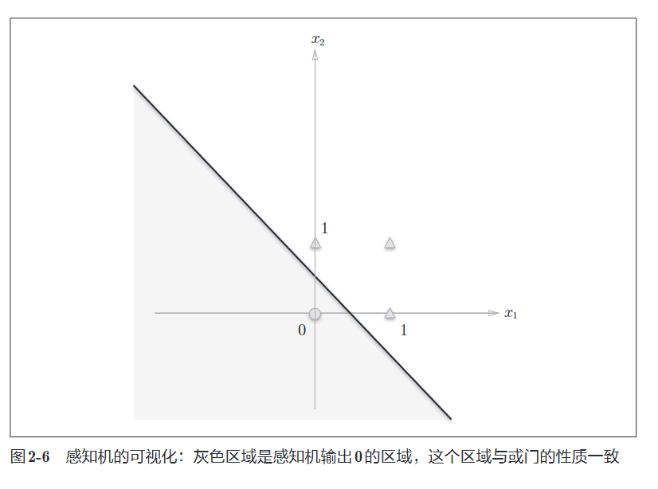</p>
<p>而异或门没法用一条直线来划分开，需要用曲线分隔开，如下图所示。我们称由曲线分隔开的空间称为<strong>非线性空间</strong>，由直线分隔而成的空间称为<strong>线性空间</strong>。</p>
<p>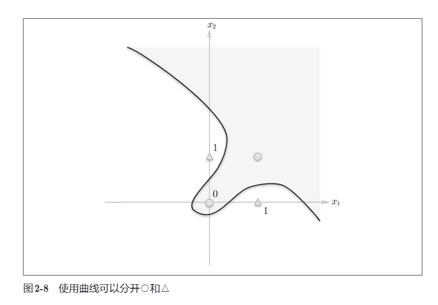</p>
<p>但是我们可以用多层感知机来解决这个问题。</p>
<h2 id="2-5-多层感知机">2.5 多层感知机</h2>
<h3 id="已有门电路的组合">已有门电路的组合</h3>
<p>异或门的制作方法有很多，其中之一就是组成我们之前做好的与门，与非门、或门进行配置，其符号表示如下图，这里与非门中的圆圈表示反转输出的意思。</p>
<p>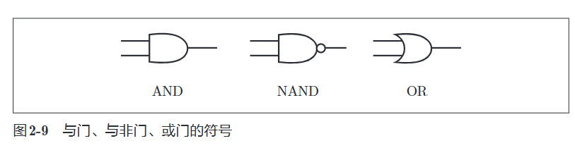</p>
<p>这里我们可以通过下面的结果来构建异或门，可以自己确认一下。</p>
<p></p>
<h3 id="异或门的实现">异或门的实现</h3>
<p>下面用 Python 代码来实现</p>
<figure class="highlight python"><table><tr><td class="gutter"><pre><span class="line">1</span><br><span class="line">2</span><br><span class="line">3</span><br><span class="line">4</span><br><span class="line">5</span><br><span class="line">6</span><br><span class="line">7</span><br><span class="line">8</span><br><span class="line">9</span><br><span class="line">10</span><br></pre></td><td class="code"><pre><span class="line"><span class="keyword">def</span> <span class="title function_">XOR</span>(<span class="params">x1, x2</span>):</span><br><span class="line">    s1 = NAND(x1, x2)</span><br><span class="line">    s2 = OR(x1, x2)</span><br><span class="line">    y = AND(s1, s2)</span><br><span class="line">    <span class="keyword">return</span> y</span><br><span class="line">    </span><br><span class="line"><span class="built_in">print</span>(XOR(<span class="number">0</span>, <span class="number">0</span>)) <span class="comment"># 输出0</span></span><br><span class="line"><span class="built_in">print</span>(XOR(<span class="number">1</span>, <span class="number">0</span>)) <span class="comment"># 输出1</span></span><br><span class="line"><span class="built_in">print</span>(XOR(<span class="number">0</span>, <span class="number">1</span>)) <span class="comment"># 输出1</span></span><br><span class="line"><span class="built_in">print</span>(XOR(<span class="number">1</span>, <span class="number">1</span>)) <span class="comment"># 输出0</span></span><br></pre></td></tr></table></figure>
<p>下面我们用感知机的表示方式（明确地显示神经元）来表示这个异或门，如下图所示。这里异或门是一种多层结构的神经网络，我们将最左面的一列称为第 0 层，随后称为第1层和第2层。我们将这种叠加了多层的感知机称为<strong>多层感知机</strong>。这里的感知机总共是3层，但是因为拥有权重的层实质上只有2层（第0层和第1层之间，第1层和第2层之间），因此称为<strong>2层感知机</strong>，不过也有文献称为<strong>3层感知机</strong>。图中的圆圈称为<strong>神经元</strong>或<strong>节点</strong>。</p>
<p>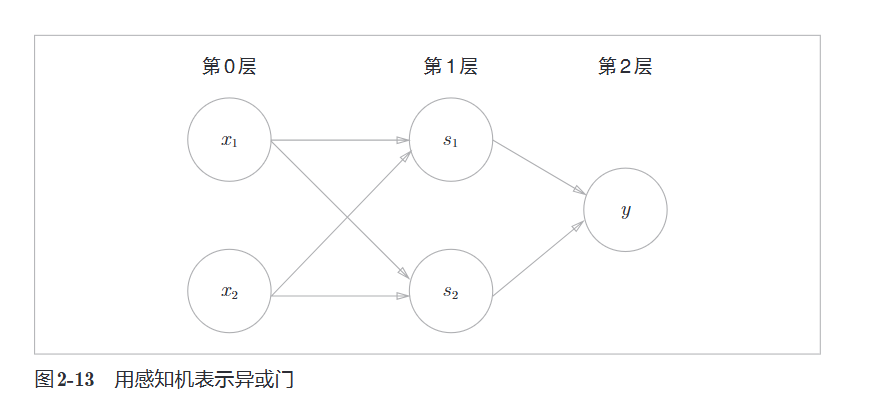</p>
<p>这种2层感知机的运行过程如同流水线的组装作业，第1层的工人对传过来的零件进行加工，完成后再传递给第2层的工人，之后出货。</p>
<p>因此我们看到单层感知机无法表示的东西，通过增加一层就可以解决。也就是说，通过叠加层，感知机能进行更加灵活的表示。</p>
<h1>第3章 神经网络</h1>
<h2 id="3-1-从感知机到神经网络">3.1 从感知机到神经网络</h2>
<p>神经网络和感知机有很多共同点，这里主要介绍二者的差异。</p>
<h3 id="神经网络的例子">神经网络的例子</h3>
<p>用图来表示神经网络的话，如下图所示，我们把最左边的一列称为<strong>输入层</strong>， 最右边的一列称为<strong>输出层</strong>，中间的一列称为<strong>中间层</strong>，有时也称为<strong>隐藏层</strong>。本书中将输入层称为第 0 层，方便后面的 Python 实现。</p>
<p>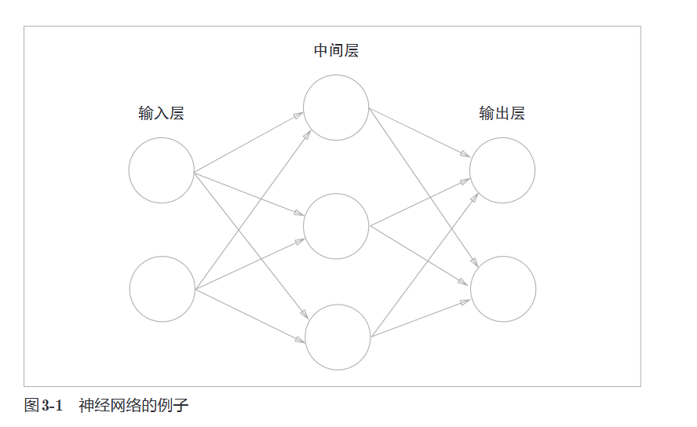</p>
<p>这里神经网络的连接方式与感知机相同。</p>
<h3 id="复习感知机">复习感知机</h3>
<p>我们先复习一下感知机，先看下面的网络结构</p>
<p></p>
<p>图中的感知机接收 x1 和 x2 两个输入信号，输出 y 。这里没有表示偏置 b ，如果要明确表示出来，可以如下图那样做。这里权重为 b 的输入信号为 1，这个感知机接收 x1 ，x2 和 1 三个输入信号。</p>
<p>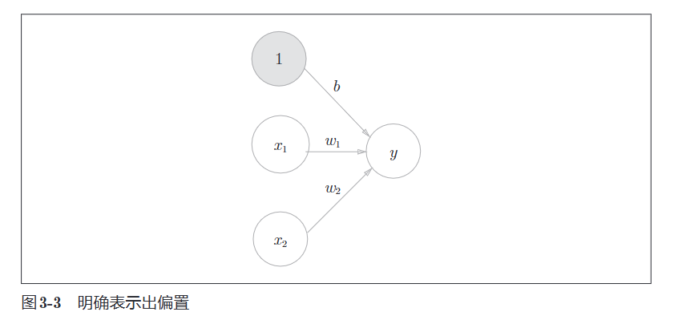</p>
<p>原本感知机的计算公式如下</p>
<p style=""></p><p>我们将其改成更简洁的形式，我们用一个函数来表示这种分情况的动作（超过0则输出1，否则输出0），引入新函数  ，将上式改成下面这2个式子</p>
<p style=""></p><p style=""></p><h3 id="激活函数登场">激活函数登场</h3>
<p>刚才登场的  函数会将输入信号的总和转换为输出信号，这种函数一般称为<strong>激活函数</strong>（activation funciton）。</p>
<p>我们把这一步写得更细一点，分为2步，第一步计算输入信号的加权总和，第二步用激活函数转换这一总和，写成下面这两个式子。</p>
<p style=""></p><p style=""></p><p>之前的神经元都式用一个圆圈表示的，如果要在图中明确表示出上面那2个式子，则可以像下图这样做。</p>
<p>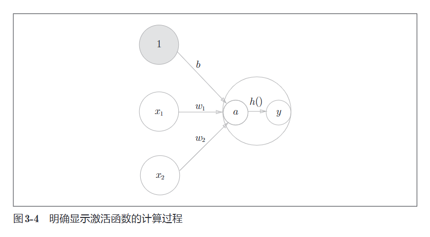</p>
<p>激活函数是连接感知机和神经网络的桥梁。</p>
<h2 id="3-2-激活函数">3.2 激活函数</h2>
<p>上面表示的激活函数以阈值为界，一旦输入超过阈值，就切换输出。这样的函数称为<strong>阶跃函数</strong>。因此，感知机可以说就是使用了阶跃函数作为激活函数。如果将激活函数转换成其它函数，就可以进入到神经网络的世界了。下面我们介绍一下神经网络使用的激活函数。</p>
<h3 id="sigmoid函数">sigmoid函数</h3>
<p>神经网络中经常使用的一个函数就是 sigmoid 函数</p>
<p style=""></p><h3 id="阶跃函数的实现">阶跃函数的实现</h3>
<p>让我们试着用 Python 画出阶跃函数的图，阶跃函数如下所示</p>
<figure class="highlight python"><table><tr><td class="gutter"><pre><span class="line">1</span><br><span class="line">2</span><br><span class="line">3</span><br><span class="line">4</span><br><span class="line">5</span><br></pre></td><td class="code"><pre><span class="line"><span class="keyword">def</span> <span class="title function_">step_function</span>(<span class="params">x</span>):</span><br><span class="line">    <span class="keyword">if</span> x &gt; <span class="number">0</span>:</span><br><span class="line">        <span class="keyword">return</span> <span class="number">1</span></span><br><span class="line">    <span class="keyword">elif</span> x &lt;= <span class="number">0</span>:</span><br><span class="line">        <span class="keyword">return</span> <span class="number">0</span></span><br></pre></td></tr></table></figure>
<p>我们将其改为支持Numpy数组的形式，这里使用 <code>astype()</code> 函数转换数据格式，从布尔型数据转为整数。</p>
<figure class="highlight python"><table><tr><td class="gutter"><pre><span class="line">1</span><br><span class="line">2</span><br><span class="line">3</span><br></pre></td><td class="code"><pre><span class="line"><span class="keyword">def</span> <span class="title function_">step_function</span>(<span class="params">x</span>):</span><br><span class="line">    y = x &gt; <span class="number">0</span></span><br><span class="line">    <span class="keyword">return</span> y.astype(<span class="built_in">int</span>)</span><br></pre></td></tr></table></figure>
<h3 id="阶跃函数的图像">阶跃函数的图像</h3>
<p>下面就用图来表示上面定义的阶跃函数，为此需要使用 matplotlib 库。</p>
<figure class="highlight python"><table><tr><td class="gutter"><pre><span class="line">1</span><br><span class="line">2</span><br><span class="line">3</span><br><span class="line">4</span><br><span class="line">5</span><br><span class="line">6</span><br><span class="line">7</span><br><span class="line">8</span><br><span class="line">9</span><br><span class="line">10</span><br><span class="line">11</span><br><span class="line">12</span><br></pre></td><td class="code"><pre><span class="line"><span class="keyword">import</span> numpy <span class="keyword">as</span> np</span><br><span class="line"><span class="keyword">import</span> matplotlib.pylab <span class="keyword">as</span> plt</span><br><span class="line"></span><br><span class="line"><span class="keyword">def</span> <span class="title function_">step_function</span>(<span class="params">x</span>):</span><br><span class="line">    y = x &gt; <span class="number">0</span></span><br><span class="line">    <span class="keyword">return</span> y.astype(<span class="built_in">int</span>)</span><br><span class="line"></span><br><span class="line">x = np.arange(-<span class="number">5.0</span>, <span class="number">5.0</span>, <span class="number">0.1</span>)</span><br><span class="line">y = step_function(x)</span><br><span class="line">plt.plot(x,y)</span><br><span class="line">plt.ylim(-<span class="number">0.1</span>, <span class="number">1.1</span>) <span class="comment"># 指定y轴范围</span></span><br><span class="line">plt.show()</span><br></pre></td></tr></table></figure>
<p>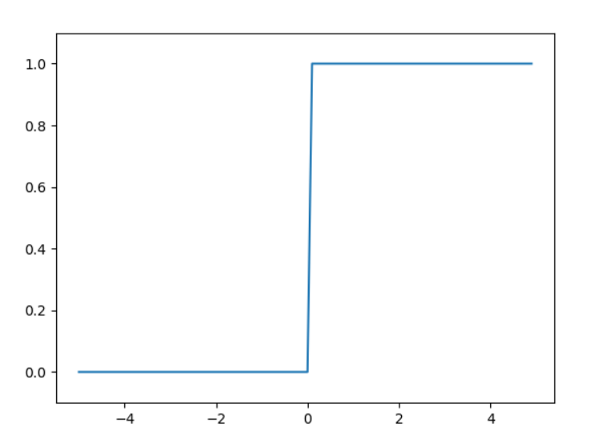</p>
<h3 id="sigmoid函数的实现">sigmoid函数的实现</h3>
<p>下面我们来实现 sigmoid 函数</p>
<figure class="highlight python"><table><tr><td class="gutter"><pre><span class="line">1</span><br><span class="line">2</span><br></pre></td><td class="code"><pre><span class="line"><span class="keyword">def</span> <span class="title function_">sigmoid</span>(<span class="params">x</span>):</span><br><span class="line">    <span class="keyword">return</span> <span class="number">1</span> / (<span class="number">1</span> + np.exp(-x))</span><br></pre></td></tr></table></figure>
<p>画图如下</p>
<figure class="highlight python"><table><tr><td class="gutter"><pre><span class="line">1</span><br><span class="line">2</span><br><span class="line">3</span><br><span class="line">4</span><br><span class="line">5</span><br></pre></td><td class="code"><pre><span class="line">x = np.arange(-<span class="number">5.0</span>, <span class="number">5.0</span>, <span class="number">0.1</span>)</span><br><span class="line">y = sigmoid(x)</span><br><span class="line">plt.plot(x,y)</span><br><span class="line">plt.ylim(-<span class="number">0.1</span>, <span class="number">1.1</span>) <span class="comment"># 指定y轴范围</span></span><br><span class="line">plt.show()</span><br></pre></td></tr></table></figure>
<p>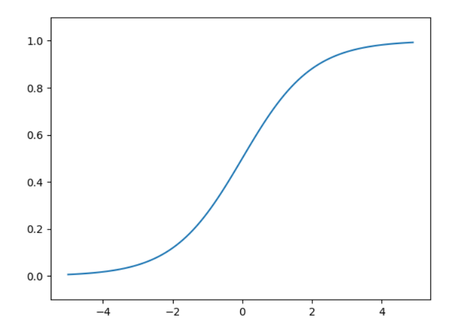</p>
<h3 id="sigmoid函数和阶跃函数的比较">sigmoid函数和阶跃函数的比较</h3>
<p>现在我们来比较这两个函数的不同点：</p>
<ol>
<li>平滑性不同：sigmoid 函数就是一条平滑曲线，输出随着输入发生连续性的变化。而阶跃函数以0为界，输出发生急剧性的变化。</li>
<li>输出值类型不同：阶跃函数只能返回0或1的二元信息，而sigmoid函数返回值是连续的实数值。</li>
</ol>
<p>共同点：</p>
<ol>
<li>二者均是“递增”函数，即输入值越小，输出接近0；输入值越大，输出接近1。</li>
<li>输出值的范围都在0-1之间。</li>
</ol>
<h3 id="非线性函数">非线性函数</h3>
<p>两个函数还有其它共同点，就是二者均为<strong>非线性函数</strong>。sigmoid是一条曲线，阶跃函数是一条像阶梯一样的折线，二者均为非线性函数（如果使用线性函数，这里则为  ）。</p>
<p><strong>神经网络的激活函数必须使用非线性函数</strong>，因为使用线性函数的话，加深神经网络的乘数就没有意义了。线性函数的问题在于，不管如何加深层数，总是存在与之等效的“无隐藏层的神经网络”。为了具体地理解这一点，我们来思考下面这个简单的例子，我们考虑把线性函数  作为激活函数，把  的运算对应3层神经网路。这个运算会得到  的乘法运算，可以视为  这一次乘法运算来表示（即没有隐藏层的神经网络）。因此使用线性函数时无法发挥多层网络带来的优势，因此激活函数必须使用非线性函数。</p>
<h3 id="ReLU函数">ReLU函数</h3>
<p>最近的激活函数主要使用 ReLU （Rectified Linear Unit）函数 。其在输入大于0时，直接输出函数值；在输入小于等于0时，输出0。公式如下</p>
<p style=""></p><p>其 Python 实现如下，这里使用 <code>np.maximum()</code> 函数从输入的数值中选择较大的那个值进行输出。</p>
<figure class="highlight python"><table><tr><td class="gutter"><pre><span class="line">1</span><br><span class="line">2</span><br></pre></td><td class="code"><pre><span class="line"><span class="keyword">def</span> <span class="title function_">relu</span>(<span class="params">x</span>):</span><br><span class="line">    <span class="keyword">return</span> np.maximum(<span class="number">0</span>,x)</span><br></pre></td></tr></table></figure>
<p>本章剩余部分内容仍将使用 sigmoid 函数作为激活函数，但在本书的后半部分，则将主要使用 ReLU 函数。</p>
<h2 id="3-3-多维数组的运算">3.3 多维数组的运算</h2>
<p>如果掌握了 Numpy 多维数组的运算，就可以高效地实现神经网络。因此，本书将介绍 Numpy多维数组地运算，然后再进行神经网络的实现。</p>
<h3 id="多维数组">多维数组</h3>
<p>简单地说，多维数组就是“数字的集合”，数字排成一列的集合，排成长方形的集合（二维数组也称为<strong>矩阵</strong>）、排成三维状或N维的集合都称为数组。下面我们用 numpy来生成多维数组。在 Python 中，第一个维度对应<strong>第0维</strong>，之后称为第1维，第2维等（Python的索引从0开始）。</p>
<h3 id="矩阵乘法">矩阵乘法</h3>
<p>对于2个矩阵的矩阵乘法而言，需要第一个矩阵的第1维（列数）与第二个矩阵的第0维（行数）的元素个数相同。</p>
<p>对于二维矩阵和一维数组的乘积，对应维度的个数仍要保持一致，如下图</p>
<p>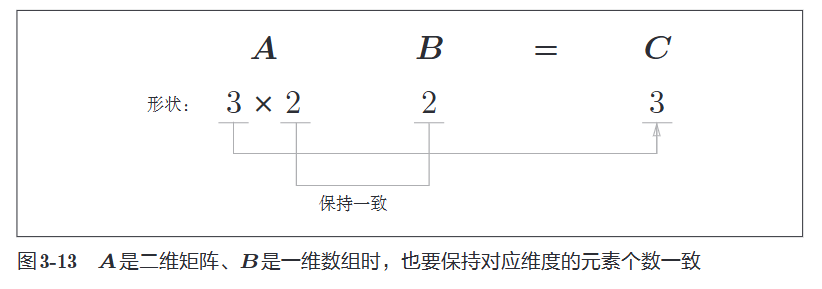</p>
<p>更具体地规则如下</p>
<ol>
<li><strong>二维数组在左，一维数组在右（<code>np.dot(A, B)</code>）</strong>：
<ul>
<li>二维数组 <code>A</code> 的形状为 <code>(M, N)</code>，一维数组 <code>B</code> 的形状为 <code>(N,)</code>。</li>
<li><code>B</code> 被视为<strong>列向量</strong>，结果为一维数组，形状为 <code>(M,)</code>。</li>
<li><strong>条件</strong>：<code>A</code> 的列数必须等于 <code>B</code> 的长度（即 <code>N</code>）。</li>
</ul>
</li>
<li><strong>一维数组在左，二维数组在右（<code>np.dot(B, A)</code>）</strong>：
<ul>
<li>一维数组 <code>B</code> 的形状为 <code>(M,)</code>，二维数组 <code>A</code> 的形状为 <code>(M, N)</code>。</li>
<li><code>B</code> 被视为<strong>行向量</strong>，结果为一维数组，形状为 <code>(N,)</code>。</li>
<li><strong>条件</strong>：<code>B</code> 的长度必须等于 <code>A</code> 的行数（即 <code>M</code>）。</li>
</ul>
</li>
</ol>
<h3 id="神经网络的内积">神经网络的内积</h3>
<p>下面我们使用 Numpy 矩阵来实现神经网络，以下图为例，这里忽略了偏置和激活函数，只有权重。</p>
<p>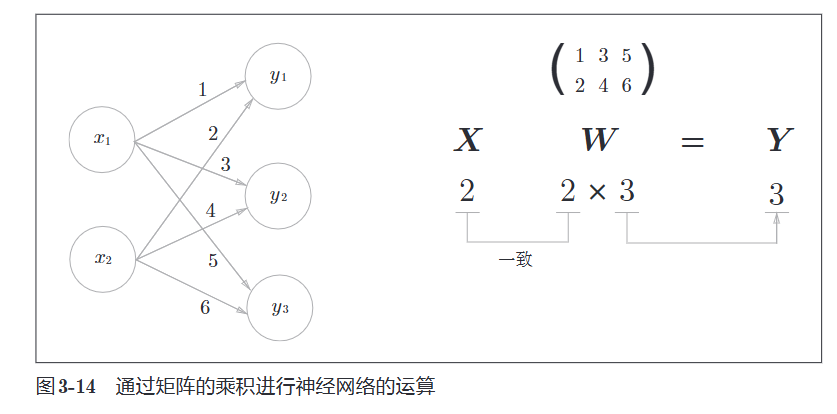</p>
<h2 id="3-4-3层神经网络的实现">3.4 3层神经网络的实现</h2>
<p>现在我们来进行神经网络的实现。这里我们以下图的3层神经网络为对象，实现从输入到输出的（前向）处理。</p>
<p>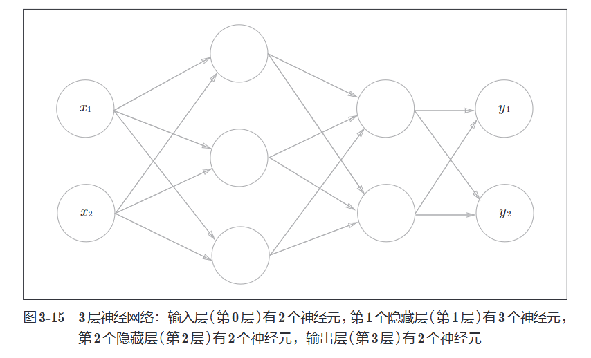</p>
<h3 id="符号确认">符号确认</h3>
<p>在介绍神经网络中的处理之前，我们先导入  ， 等符号。</p>
<p>我们先从定义符号开始。如下图，图中只突出显示了从输入层神经元  到后一层的神经元  的权重。如下图所示，权重和隐藏层的神经元的右上角的 “(1)” ，表示权重和神经元的层号。此外，权重的右下角有2个数字，它们是后一层的神经元和前一层的神经元的索引号。比如     表示前一层  到后一层的第一个神经元  的权重。权重右下角按照“后一层的索引号，前一层的索引号”的顺序排列。</p>
<p>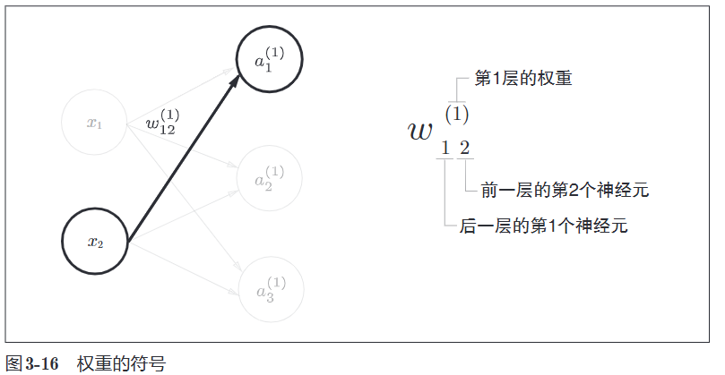</p>
<h3 id="各层信号传递的实现">各层信号传递的实现</h3>
<p>现在看一下从输入层到第1层的第1个神经元的信号传递过程，如下图所示，这里增加了表示偏置的神经元 “1”，而偏置的右下角的索引号只有一个，因为不需要表示前一层的偏置神经元，因此其索引号只包含后一层神经元索引号。</p>
<p>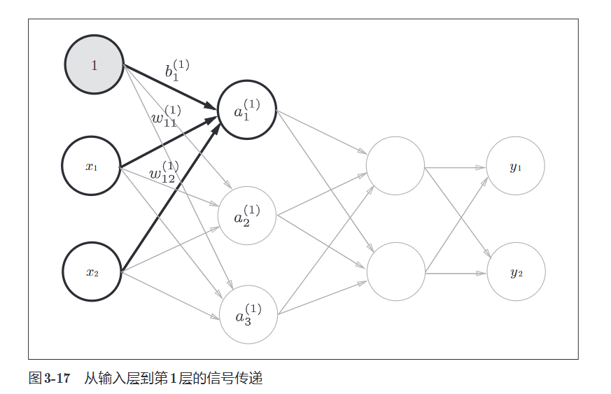</p>
<p>为了确认前面的内容，现在用数学式表示 </p>
<p style=""></p><p>此外，如果使用矩阵的乘法运算，则可以将第1层的加权和表示成下式</p>
<p style=""></p><p>其中各式内容如下</p>
<p>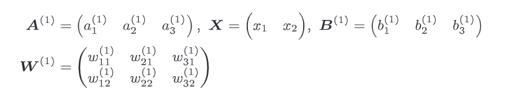</p>
<p>下面我们用 Numpy 数组来实现</p>
<figure class="highlight python"><table><tr><td class="gutter"><pre><span class="line">1</span><br><span class="line">2</span><br><span class="line">3</span><br><span class="line">4</span><br><span class="line">5</span><br><span class="line">6</span><br><span class="line">7</span><br><span class="line">8</span><br><span class="line">9</span><br></pre></td><td class="code"><pre><span class="line">X = np.array([<span class="number">1.0</span>, <span class="number">0.5</span>])</span><br><span class="line">W1 = np.array([[<span class="number">0.1</span>, <span class="number">0.3</span>, <span class="number">0.5</span>], [<span class="number">0.2</span>, <span class="number">0.4</span>, <span class="number">0.6</span>]])</span><br><span class="line">B1 = np.array([<span class="number">0.1</span>, <span class="number">0.2</span>, <span class="number">0.3</span>])</span><br><span class="line"></span><br><span class="line"><span class="built_in">print</span>(W1.shape) <span class="comment"># (2, 3)</span></span><br><span class="line"><span class="built_in">print</span>(X.shape)  <span class="comment"># (2,)</span></span><br><span class="line"><span class="built_in">print</span>(B1.shape) <span class="comment"># (3,)</span></span><br><span class="line"></span><br><span class="line">A1 = np.dot(X, W1) + B1</span><br></pre></td></tr></table></figure>
<p>接下来我们观察第1层中激活函数的计算过程。如果把这个计算过程用图来表示的话，如下图所示</p>
<p>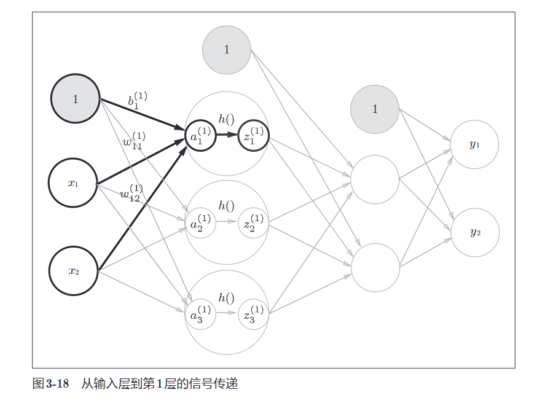</p>
<p>这里加权和用 a 表示，被激活函数转换后的信号用 z 表示。这里我们使用的激活函数式sigmoid函数，用 Python实现，代码如下</p>
<figure class="highlight python"><table><tr><td class="gutter"><pre><span class="line">1</span><br></pre></td><td class="code"><pre><span class="line">Z1 = sigmoid(A1)</span><br></pre></td></tr></table></figure>
<p>下面我们实现从第1层到第2层的信号传递。这里使用的代码完全相同。</p>
<figure class="highlight python"><table><tr><td class="gutter"><pre><span class="line">1</span><br><span class="line">2</span><br><span class="line">3</span><br><span class="line">4</span><br><span class="line">5</span><br><span class="line">6</span><br><span class="line">7</span><br><span class="line">8</span><br><span class="line">9</span><br></pre></td><td class="code"><pre><span class="line">W2 = np.array([[<span class="number">0.1</span>, <span class="number">0.4</span>], [<span class="number">0.2</span>, <span class="number">0.5</span>], [<span class="number">0.3</span>, <span class="number">0.6</span>]])</span><br><span class="line">B2 = np.array([<span class="number">0.1</span>, <span class="number">0.2</span>])</span><br><span class="line"></span><br><span class="line"><span class="built_in">print</span>(Z1.shape) <span class="comment"># (3,)</span></span><br><span class="line"><span class="built_in">print</span>(W2.shape) <span class="comment"># (3, 2)</span></span><br><span class="line"><span class="built_in">print</span>(B2.shape) <span class="comment"># (2,)</span></span><br><span class="line"></span><br><span class="line">A2 = np.dot(Z1, W2) + B2</span><br><span class="line">Z2 = sigmoid(A2)</span><br></pre></td></tr></table></figure>
<p>最后式第2层到输出层的信号传递。输出层的实现也基本相同，不过使用的激活函数略有不同，这里使用的是<strong>恒等函数</strong>，也就是将输入按原样输出。输出层的激活函数用  表示，而不使用  （因为可能和前面用的激活函数不同）。</p>
<figure class="highlight python"><table><tr><td class="gutter"><pre><span class="line">1</span><br><span class="line">2</span><br><span class="line">3</span><br><span class="line">4</span><br><span class="line">5</span><br><span class="line">6</span><br><span class="line">7</span><br><span class="line">8</span><br></pre></td><td class="code"><pre><span class="line"><span class="keyword">def</span> <span class="title function_">identity_function</span>(<span class="params">x</span>):</span><br><span class="line">    <span class="keyword">return</span> x</span><br><span class="line">    </span><br><span class="line">W3 = np.array([[<span class="number">0.1</span>, <span class="number">0.3</span>], [<span class="number">0.2</span>, <span class="number">0.4</span>]])</span><br><span class="line">B3 = np.array([<span class="number">0.1</span>, <span class="number">0.2</span>])</span><br><span class="line"></span><br><span class="line">A3 = np.dot(Z2, W3) + B3</span><br><span class="line">Y = identity_function(A3) <span class="comment"># 或者Y = A3</span></span><br></pre></td></tr></table></figure>
<h3 id="代码实现小结">代码实现小结</h3>
<p>至此，我们已经介绍完了3层神经网络的实现。现在我们把之前的代码实现全部整理一下。这里，我们按照神经网络的实现惯例，只把权重记为大写字母 W1，其它的（偏置或中间结果等）都是用小写字母表示。</p>
<p>这里定义了 <code>init_network()</code> 和 <code>forward()</code> 函数，<code>init_network()</code> 会进行权重和偏置的初始化，保存在字典 <code>network</code> 中。 <code>forward()</code> 函数则封装了将输入信号转换为输出信号的处理过程。</p>
<figure class="highlight python"><table><tr><td class="gutter"><pre><span class="line">1</span><br><span class="line">2</span><br><span class="line">3</span><br><span class="line">4</span><br><span class="line">5</span><br><span class="line">6</span><br><span class="line">7</span><br><span class="line">8</span><br><span class="line">9</span><br><span class="line">10</span><br><span class="line">11</span><br><span class="line">12</span><br><span class="line">13</span><br><span class="line">14</span><br><span class="line">15</span><br><span class="line">16</span><br><span class="line">17</span><br><span class="line">18</span><br><span class="line">19</span><br><span class="line">20</span><br><span class="line">21</span><br><span class="line">22</span><br><span class="line">23</span><br><span class="line">24</span><br><span class="line">25</span><br><span class="line">26</span><br><span class="line">27</span><br><span class="line">28</span><br><span class="line">29</span><br><span class="line">30</span><br><span class="line">31</span><br><span class="line">32</span><br><span class="line">33</span><br></pre></td><td class="code"><pre><span class="line"></span><br><span class="line"><span class="keyword">def</span> <span class="title function_">init_network</span>():</span><br><span class="line">    network = &#123;&#125;</span><br><span class="line">    network[<span class="string">&#x27;W1&#x27;</span>] = np.array([[<span class="number">0.1</span>, <span class="number">0.3</span>, <span class="number">0.5</span>], [<span class="number">0.2</span>, <span class="number">0.4</span>, <span class="number">0.6</span>]])</span><br><span class="line">    network[<span class="string">&#x27;b1&#x27;</span>] = np.array([<span class="number">0.1</span>, <span class="number">0.2</span>, <span class="number">0.3</span>])</span><br><span class="line">    network[<span class="string">&#x27;W2&#x27;</span>] = np.array([[<span class="number">0.1</span>, <span class="number">0.4</span>], [<span class="number">0.2</span>, <span class="number">0.5</span>], [<span class="number">0.3</span>, <span class="number">0.6</span>]])</span><br><span class="line">    network[<span class="string">&#x27;b2&#x27;</span>] = np.array([<span class="number">0.1</span>, <span class="number">0.2</span>])</span><br><span class="line">    network[<span class="string">&#x27;W3&#x27;</span>] = np.array([[<span class="number">0.1</span>, <span class="number">0.3</span>], [<span class="number">0.2</span>, <span class="number">0.4</span>]])</span><br><span class="line">    network[<span class="string">&#x27;b3&#x27;</span>] = np.array([<span class="number">0.1</span>, <span class="number">0.2</span>])</span><br><span class="line">    </span><br><span class="line">    <span class="keyword">return</span> network</span><br><span class="line"></span><br><span class="line"><span class="keyword">def</span> <span class="title function_">forward</span>(<span class="params">network, x</span>):</span><br><span class="line">    W1, W2, W3 = network[<span class="string">&#x27;W1&#x27;</span>], network[<span class="string">&#x27;W2&#x27;</span>], network[<span class="string">&#x27;W3&#x27;</span>]</span><br><span class="line">    b1, b2, b3 = network[<span class="string">&#x27;b1&#x27;</span>], network[<span class="string">&#x27;b2&#x27;</span>], network[<span class="string">&#x27;b3&#x27;</span>]</span><br><span class="line">    </span><br><span class="line">    a1 = np.dot(x, W1) + b1</span><br><span class="line">    z1 = sigmoid(a1)</span><br><span class="line">    </span><br><span class="line">    a2 = np.dot(z1, W2) + b2</span><br><span class="line">    z2 = sigmoid(a2)</span><br><span class="line"></span><br><span class="line">    a3 = np.dot(z2, W3) + b3</span><br><span class="line">    y = identity_function(a3)</span><br><span class="line">    </span><br><span class="line">    <span class="keyword">return</span> y</span><br><span class="line"></span><br><span class="line">network = init_network()</span><br><span class="line">x = np.array([<span class="number">1.0</span>, <span class="number">0.5</span>])</span><br><span class="line"></span><br><span class="line">y = forward(network, x)</span><br><span class="line"></span><br><span class="line"><span class="built_in">print</span>(y) <span class="comment"># [ 0.31682708  0.69627909]</span></span><br></pre></td></tr></table></figure>
<h2 id="3-5-输出层的设计">3.5 输出层的设计</h2>
<p>神经网络可以用在分类问题和回归问题上，需要根据情况改变输出层的激活函数。一般而言，回归问题用恒等函数，分类问题用 softmax函数。</p>
<h3 id="恒等函数和-softmax函数">恒等函数和 softmax函数</h3>
<p>恒等函数会将输入按原样输出。</p>
<p>分类问题使用的 softmax 函数可以用下面的式子表示。</p>
<p style=""></p><p>这里  是输出神经元的数目，  是输入信号。所有输入信号的输出值之和为1（输出信号的大小应该是理解为概率）。</p>
<p>用图来表示 software 的话，如下图所示，softmax 函数的输出通过箭头与所有的输入信号相连。</p>
<p>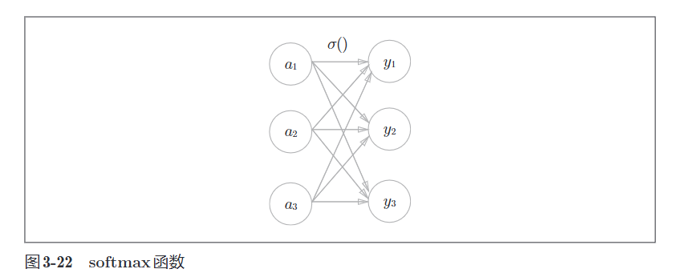</p>
<p>现在我们来实现 softmax 函数。</p>
<figure class="highlight python"><table><tr><td class="gutter"><pre><span class="line">1</span><br><span class="line">2</span><br><span class="line">3</span><br><span class="line">4</span><br><span class="line">5</span><br></pre></td><td class="code"><pre><span class="line"><span class="keyword">def</span> <span class="title function_">softmax</span>(<span class="params">a</span>):</span><br><span class="line">    exp_a = np.exp(a)</span><br><span class="line">    sum_exp_a = np.<span class="built_in">sum</span>(exp_a)</span><br><span class="line">    y = exp_a / sum_exp_a</span><br><span class="line">    <span class="keyword">return</span> y</span><br></pre></td></tr></table></figure>
<h3 id="实现-softmax-函数时的注意事项">实现 softmax 函数时的注意事项</h3>
<p>上面的 softmax 函数虽然正确，但是在计算机的运算上有一定缺陷，就是<strong>溢出</strong>问题。因为 softmax 函数设计指数函数的运算，指数函数的值可能会非常大，超出数值范围，会返回一个表示无穷大的 inf 。</p>
<p>softmax 函数可以按照下式进行改进，下面 C 是一个常数， 。</p>
<p style=""></p><p>这说明在进行指数计算时，加上或减去某个常数不会改变运算结果。这里的常数可以用任何值，但是一般会减去输入信号中的最大值。因此上面的 softmax 函数可以进行如下修改</p>
<figure class="highlight python"><table><tr><td class="gutter"><pre><span class="line">1</span><br><span class="line">2</span><br><span class="line">3</span><br><span class="line">4</span><br><span class="line">5</span><br><span class="line">6</span><br></pre></td><td class="code"><pre><span class="line"><span class="keyword">def</span> <span class="title function_">softmax</span>(<span class="params">a</span>):</span><br><span class="line">    c = np.<span class="built_in">max</span>(a)</span><br><span class="line">    exp_a = np.exp(a - c)</span><br><span class="line">    sum_exp_a = np.<span class="built_in">sum</span>(exp_a)</span><br><span class="line">    y = exp_a / sum_exp_a</span><br><span class="line">    <span class="keyword">return</span> y</span><br></pre></td></tr></table></figure>
<h3 id="softmax-函数的特征">softmax 函数的特征</h3>
<p>softmax 函数的输出总和为1，因此我们可以将 softmax 函数的输出值理解为概率。</p>
<p>一般而言，神经网络只把输出值最大的神经元所对应的类别作为识别结果。即便使用 softmax 函数，输出值最大的神经元的位置也不会改变。因此，神经网络在进行分类时，<strong>输出层的softmax函数可以省略</strong>。在实际的问题中，由于指数函数的运算需要一定的计算机运算量，因此输出层的 softmax 函数一般会被省略。（”学习“/”训练“过程不会省略 softmax 函数，但是”推理“过程会省略）。</p>
<h3 id="输出层的神经元数量">输出层的神经元数量</h3>
<p>输出层的神经元数量需要根据具体问题来确定。对于分类问题，输出层神经元数目一般设定为类别的数目。</p>
<h2 id="3-6-手写数字识别">3.6 手写数字识别</h2>
<p>介绍完神经网络的结构后，我们来试着解决实际问题。这里我们进行手写数字图像的分类。假设学习已经结束，我们使用学习得到的常数，先实现神经网络的”推断处理&quot;。这个推断处理也称为神经网络的<strong>前向传播</strong>（forward propagation）。</p>
<h3 id="MNIST-数据集">MNIST 数据集</h3>
<p>这里使用的数据集是 MNIST 手写数字图像集，其由 0 到 9 的数字图像构成。训练图像有 6 万张，测试图像有1万张。其图像数据是 28像素 × 28像素的灰度图像，每个像素的取值范围在 0-255 之间，每个图像数据都膘有相应的数字标签。</p>
<p>读取 MNIST 数据如下，此时的当前目录必须是 ch01 等目录中的一个。使用 dataset 文件夹中 <a target="_blank" rel="noopener" href="http://mnist.py">mnist.py</a> 模块中的 <code>load_mnist()</code> 函数，就可以按照下面的方式读入MNIST数据。</p>
<figure class="highlight python"><table><tr><td class="gutter"><pre><span class="line">1</span><br><span class="line">2</span><br><span class="line">3</span><br><span class="line">4</span><br><span class="line">5</span><br><span class="line">6</span><br><span class="line">7</span><br><span class="line">8</span><br><span class="line">9</span><br><span class="line">10</span><br><span class="line">11</span><br><span class="line">12</span><br><span class="line">13</span><br></pre></td><td class="code"><pre><span class="line"><span class="keyword">import</span> sys, os</span><br><span class="line">sys.path.append(os.pardir) <span class="comment"># 为了导入父目录中的文件而进行的设定</span></span><br><span class="line"><span class="keyword">from</span> dataset.mnist <span class="keyword">import</span> load_mnist</span><br><span class="line"></span><br><span class="line"><span class="comment"># 第一次调用会花费几分钟......</span></span><br><span class="line">(x_train, t_train), (x_test, t_test) = load_mnist(flatten=<span class="literal">True</span>,</span><br><span class="line">normalize=<span class="literal">False</span>)</span><br><span class="line"></span><br><span class="line"><span class="comment"># 输出各个数据的形状</span></span><br><span class="line"><span class="built_in">print</span>(x_train.shape) <span class="comment"># (60000, 784)</span></span><br><span class="line"><span class="built_in">print</span>(t_train.shape) <span class="comment"># (60000,)</span></span><br><span class="line"><span class="built_in">print</span>(x_test.shape)  <span class="comment"># (10000, 784)</span></span><br><span class="line"><span class="built_in">print</span>(t_test.shape)  <span class="comment"># (10000,</span></span><br></pre></td></tr></table></figure>
<p>这里 <code>load_mnist()</code> 函数以”(训练图像，训练标签），（测试图像，测试标签）“的形式返回读入的 MNIST 数据。这里 <code>load_mnist(normalize=True, flatten=True, one_hot_label=False)</code> 函数有3个参数，第1个常数 <code>normalize</code> 设置是否将输入图像正规化为 0.0 ~ 1.0 的值。第2个常数<code>flatten</code> 设置是否展开输入图像（变成1维数组），如果设置为 False ，则输入图像为 1×28×28 的三维数组；若设置为 True ，则输入图像会保存为由 784 个元素构成的一维数组。第3个参数 one_hot_label 设置是否将标签保存为 <code>one-hot</code> 表示，如果为 False ，则只是像7、2这样简单保存正确解标签。</p>
<p>Python中由 pickle 这个便利的功能。这个功能可以将程序运行中的对象保存为文件。如果加载保存过的 pickle 文件，可以立刻复原之前程序运行中的对象。这里 <code>load_mnist()</code> 函数内部也使用了 pickle 功能（在第2次及以后读入时）。</p>
<p>现在我们试着显示 MNIST 图像，同时也确认一下数据。图像的显示使用 PIL（Python Image Library）模块。执行下述代码后，训练图像的第一张就会显示出来，代码如下。这里显示图像的时候要将原来的一列数组转成 28像素 × 28像素的形状。此外，这里还需要把保存为 NumPy 数组的图像数据转换乘 PLT 用的数据对象，这个转换处理由 <code>Image.fromarray()</code>来完成。</p>
<figure class="highlight python"><table><tr><td class="gutter"><pre><span class="line">1</span><br><span class="line">2</span><br><span class="line">3</span><br><span class="line">4</span><br><span class="line">5</span><br><span class="line">6</span><br><span class="line">7</span><br><span class="line">8</span><br><span class="line">9</span><br><span class="line">10</span><br><span class="line">11</span><br><span class="line">12</span><br><span class="line">13</span><br><span class="line">14</span><br><span class="line">15</span><br><span class="line">16</span><br><span class="line">17</span><br><span class="line">18</span><br><span class="line">19</span><br><span class="line">20</span><br><span class="line">21</span><br><span class="line">22</span><br><span class="line">23</span><br><span class="line">24</span><br></pre></td><td class="code"><pre><span class="line"><span class="comment"># 查看 MNIST 图像</span></span><br><span class="line"><span class="keyword">import</span> sys, os</span><br><span class="line">sys.path.append(os.pardir)</span><br><span class="line"><span class="keyword">import</span> numpy <span class="keyword">as</span> np</span><br><span class="line"><span class="keyword">from</span> dataset.mnist <span class="keyword">import</span> load_mnist</span><br><span class="line"></span><br><span class="line"><span class="keyword">from</span> PIL <span class="keyword">import</span> Image</span><br><span class="line"><span class="keyword">def</span> <span class="title function_">img_show</span>(<span class="params">img</span>):</span><br><span class="line">    pil_img = Image.fromarray(np.uint8(img))</span><br><span class="line">    pil_img.show()</span><br><span class="line">    </span><br><span class="line">(x_train, t_train), (x_test, t_test) = load_mnist(flatten=<span class="literal">True</span>,</span><br><span class="line">    normalize=<span class="literal">False</span>)</span><br><span class="line"></span><br><span class="line">img = x_train[<span class="number">0</span>]</span><br><span class="line"></span><br><span class="line">label = t_train[<span class="number">0</span>]</span><br><span class="line"></span><br><span class="line"><span class="built_in">print</span>(label) <span class="comment"># 5</span></span><br><span class="line"><span class="built_in">print</span>(img.shape)          <span class="comment"># (784,)</span></span><br><span class="line">img = img.reshape(<span class="number">28</span>, <span class="number">28</span>) <span class="comment"># 把图像的形状变成原来的尺寸</span></span><br><span class="line"><span class="built_in">print</span>(img.shape)          <span class="comment"># (28, 28)</span></span><br><span class="line"></span><br><span class="line">img_show(img) <span class="comment"># 显示图像</span></span><br></pre></td></tr></table></figure>
<h3 id="神经网络的推理处理">神经网络的推理处理</h3>
<p>下面，我们对这个 MNIST 数据集实现神经网络的推理处理。神经网络的输入层有 784个神经元（图像大小），输出层有10个神经元（数字0-9，共10个分类）。此外，这个神经网络有2个隐藏层，第1个隐藏层有50个神经元，第2个隐藏层有100个神经元。这里的50和100可以设置为任意值，下面我们先定义 <code>get_data()</code> ，<code>init_network()</code>，<code>predict()</code> 这3个函数（代码在 ch03/neuralnet_mnist.py中）。</p>
<figure class="highlight python"><table><tr><td class="gutter"><pre><span class="line">1</span><br><span class="line">2</span><br><span class="line">3</span><br><span class="line">4</span><br><span class="line">5</span><br><span class="line">6</span><br><span class="line">7</span><br><span class="line">8</span><br><span class="line">9</span><br><span class="line">10</span><br><span class="line">11</span><br><span class="line">12</span><br><span class="line">13</span><br><span class="line">14</span><br><span class="line">15</span><br><span class="line">16</span><br><span class="line">17</span><br><span class="line">18</span><br><span class="line">19</span><br><span class="line">20</span><br><span class="line">21</span><br><span class="line">22</span><br><span class="line">23</span><br><span class="line">24</span><br><span class="line">25</span><br><span class="line">26</span><br><span class="line">27</span><br></pre></td><td class="code"><pre><span class="line"><span class="keyword">def</span> <span class="title function_">get_data</span>():</span><br><span class="line">    (x_train, t_train), (x_test, t_test) = \</span><br><span class="line">        load_mnist(normalize=<span class="literal">True</span>, flatten=<span class="literal">True</span>, one_hot_label=<span class="literal">False</span>)</span><br><span class="line">    <span class="keyword">return</span> x_test, t_test</span><br><span class="line">    </span><br><span class="line"><span class="keyword">def</span> <span class="title function_">init_network</span>():</span><br><span class="line">    <span class="keyword">import</span> pickle</span><br><span class="line">    <span class="keyword">with</span> <span class="built_in">open</span>(<span class="string">&quot;sample_weight.pkl&quot;</span>, <span class="string">&#x27;rb&#x27;</span>) <span class="keyword">as</span> f:</span><br><span class="line">        network = pickle.load(f)</span><br><span class="line">    </span><br><span class="line">    <span class="keyword">return</span> network</span><br><span class="line"></span><br><span class="line"><span class="keyword">def</span> <span class="title function_">sigmoid</span>(<span class="params">x</span>):</span><br><span class="line">    <span class="keyword">import</span> numpy <span class="keyword">as</span> np</span><br><span class="line">    <span class="keyword">return</span> <span class="number">1</span> / (<span class="number">1</span> + np.exp(-x))</span><br><span class="line"></span><br><span class="line"><span class="keyword">def</span> <span class="title function_">predict</span>(<span class="params">network, x</span>):</span><br><span class="line">    W1, W2, W3 = network[<span class="string">&#x27;W1&#x27;</span>], network[<span class="string">&#x27;W2&#x27;</span>], network[<span class="string">&#x27;W3&#x27;</span>]</span><br><span class="line">    b1, b2, b3 = network[<span class="string">&#x27;b1&#x27;</span>], network[<span class="string">&#x27;b2&#x27;</span>], network[<span class="string">&#x27;b3&#x27;</span>]</span><br><span class="line">    a1 = np.dot(x, W1) + b1</span><br><span class="line">    z1 = sigmoid(a1)</span><br><span class="line">    a2 = np.dot(z1, W2) + b2</span><br><span class="line">    z2 = sigmoid(a2)</span><br><span class="line">    a3 = np.dot(z2, W3) + b3</span><br><span class="line">    y = sigmoid(a3)    </span><br><span class="line">    </span><br><span class="line">    <span class="keyword">return</span> y</span><br></pre></td></tr></table></figure>
<p>这里 <code>init_network()</code> 会读入保存在 pickle 文件 sample_weight.pkl 中的学习到的权重参数。这个文件中以字典变量的形式保存了权重和偏置参数。剩余的2个函数和前面介绍的代码基本相同，无需再解释。</p>
<p>现在我们用这3个函数就能实现神经网络的推理处理。然后，评价它的<strong>识别精度</strong>（accuracy），即能在多大程度上正确分类。</p>
<figure class="highlight python"><table><tr><td class="gutter"><pre><span class="line">1</span><br><span class="line">2</span><br><span class="line">3</span><br><span class="line">4</span><br><span class="line">5</span><br><span class="line">6</span><br><span class="line">7</span><br><span class="line">8</span><br><span class="line">9</span><br><span class="line">10</span><br><span class="line">11</span><br></pre></td><td class="code"><pre><span class="line">x,t = get_data()</span><br><span class="line">network = init_network()</span><br><span class="line"></span><br><span class="line">accuracy_cnt = <span class="number">0</span></span><br><span class="line"><span class="keyword">for</span> i <span class="keyword">in</span> <span class="built_in">range</span>(<span class="built_in">len</span>(x)):</span><br><span class="line">    y = predict(network, x[i])</span><br><span class="line">    p = np.argmax(y) <span class="comment"># 获取概率最高的元素的索引</span></span><br><span class="line">    <span class="keyword">if</span> p == t[i]:</span><br><span class="line">        accuracy_cnt += <span class="number">1</span></span><br><span class="line"></span><br><span class="line"><span class="built_in">print</span>(<span class="string">&quot;Accuracy:&quot;</span> + <span class="built_in">str</span>(<span class="built_in">float</span>(accuracy_cnt)/<span class="built_in">len</span>(x)))</span><br></pre></td></tr></table></figure>
<p>这里我们先获得数据集，生成网络，然后用 <code>predict()</code> 函数进行分类，这里我们取出输出值最大的索引（第几个元素的概率最高，这里使用 <code>np.argmax()</code>函数），作为预测结果。最后比较预测结果和正确解标签，将回答正确的概率作为识别精度。这里输出识别精度为 0.9352 。</p>
<p>另外，在这个例子中，我们把 <code>load_mnist</code> 函数的参数 normalize 设置成了 true ，将 normalize 设置为 True 后，函数内部会进行转换，<strong>将图像的各个像素值除以255，使得数据的值在0.0-1.0的范围内</strong>。像这样把数据限定到某个范围内的处理称为<strong>正规化(normalization)</strong>（现在好像都叫做<strong>归一化</strong>）。此外，对神经网络的输入数据进行某种既定的转换称为<strong>预处理</strong>（pre-processing）。这里，作为对输入图像的一种预处理，我们进行了正规化。</p>
<h3 id="批处理">批处理</h3>
<p>以上就是处理 MNIST 数据集的神经网络的实现，现在我们来关注输入数据和权重参数的”形状“。再看一下刚才的代码实现。</p>
<p>下面我们使用输出一下刚才的各层的权重的形状。</p>
<figure class="highlight python"><table><tr><td class="gutter"><pre><span class="line">1</span><br><span class="line">2</span><br><span class="line">3</span><br><span class="line">4</span><br><span class="line">5</span><br><span class="line">6</span><br><span class="line">7</span><br><span class="line">8</span><br><span class="line">9</span><br></pre></td><td class="code"><pre><span class="line">x, _ = get_data()</span><br><span class="line">network = init_network()</span><br><span class="line">W1, W2, W3 = network[<span class="string">&#x27;W1&#x27;</span>], network[<span class="string">&#x27;W2&#x27;</span>], network[<span class="string">&#x27;W3&#x27;</span>]</span><br><span class="line"></span><br><span class="line"><span class="built_in">print</span>(x.shape)</span><br><span class="line"><span class="built_in">print</span>(x[<span class="number">0</span>].shape)</span><br><span class="line"><span class="built_in">print</span>(W1.shape)</span><br><span class="line"><span class="built_in">print</span>(W2.shape)</span><br><span class="line"><span class="built_in">print</span>(W3.shape)</span><br></pre></td></tr></table></figure>
<p>输出结果如下</p>
<figure class="highlight python"><table><tr><td class="gutter"><pre><span class="line">1</span><br><span class="line">2</span><br><span class="line">3</span><br><span class="line">4</span><br><span class="line">5</span><br></pre></td><td class="code"><pre><span class="line">(<span class="number">10000</span>, <span class="number">784</span>)</span><br><span class="line">(<span class="number">784</span>,)</span><br><span class="line">(<span class="number">784</span>, <span class="number">50</span>)</span><br><span class="line">(<span class="number">50</span>, <span class="number">100</span>)</span><br><span class="line">(<span class="number">100</span>, <span class="number">10</span>)</span><br></pre></td></tr></table></figure>
<p>我们通过上述结果来确认一下多维数组的对应维度的元素个数是否一致（省略了偏置）。用图表示的话，如下图所示</p>
<p>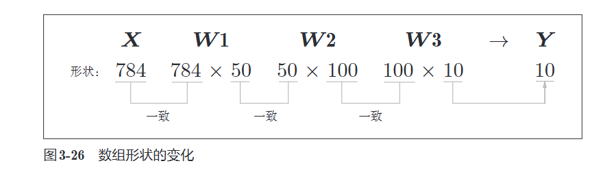</p>
<p>不过这里只是输入一张图片的情形，如果我们要用 <code>predict</code> 函数一次性打包处理100张图像。为此，我们可以将  的形状改为 100×784，将100张图像打包作为输入数据。用图表示的话，如下图所示</p>
<p>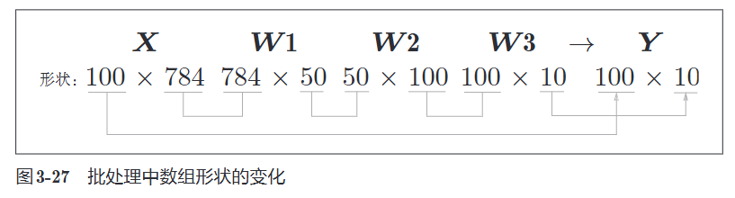</p>
<p>此时输入数据的形状是 100×784 ，输出数据额形状是 100×10。则表示输入的 100 张图像的结果被一次性输出了。比如 x[0] 和 y[0] 中保存了第0张图像及其推理结果， x[1] 和 y[1] 中保存了第1张图像及其推理结果等等。</p>
<p>这种打包式的输入数据称为<strong>批</strong>（batch）。批有”捆“的意思，图像就如同纸币一样扎成一捆。批处理可以答复缩短处理时间，因为批处理可以减轻数据总线的负荷（较少数据传送的时间）。</p>
<p>下面我们进行基于批处理的代码实现。</p>
<figure class="highlight python"><table><tr><td class="gutter"><pre><span class="line">1</span><br><span class="line">2</span><br><span class="line">3</span><br><span class="line">4</span><br><span class="line">5</span><br><span class="line">6</span><br><span class="line">7</span><br><span class="line">8</span><br><span class="line">9</span><br><span class="line">10</span><br><span class="line">11</span><br><span class="line">12</span><br><span class="line">13</span><br></pre></td><td class="code"><pre><span class="line">x,t = get_data()</span><br><span class="line">network = init_network()</span><br><span class="line"></span><br><span class="line">batch_size = <span class="number">100</span></span><br><span class="line">accuracy_cnt = <span class="number">0</span></span><br><span class="line"></span><br><span class="line"><span class="keyword">for</span> i <span class="keyword">in</span> <span class="built_in">range</span>(<span class="number">0</span>, <span class="built_in">len</span>(x), batch_size):</span><br><span class="line">    x_batch = x[i:i+batch_size]</span><br><span class="line">    y_batch = predict(network, x_batch)</span><br><span class="line">    p = np.argmax(y_batch, axis=<span class="number">1</span>) <span class="comment"># 获取概率最高的元素的索引</span></span><br><span class="line">    accuracy_cnt += np.<span class="built_in">sum</span>(p == t[i:i+batch_size])</span><br><span class="line"></span><br><span class="line"><span class="built_in">print</span>(<span class="string">&quot;Accuracy:&quot;</span> + <span class="built_in">str</span>(<span class="built_in">float</span>(accuracy_cnt)/<span class="built_in">len</span>(x)))</span><br></pre></td></tr></table></figure>
<h1>第4章 神经网络的学习</h1>
<p>本章的主题是神经网络的学习。这里所说的”学习“是指从训练数据中自动获取最优权重参数的过程。</p>
<h2 id="4-1-从数据中学习">4.1 从数据中学习</h2>
<h3 id="数据驱动">数据驱动</h3>
<p>数据是机器学习的核心，机器学习的方法避免人为介入，尝试从收集到的数据中发现答案。</p>
<p>现在我们考虑一个具体的问题，比如如何实现数字”5“的识别。输入数据是手写图像，我们的目标是实现能区别是否是5的程序。这个问题看起来很简单，但是如果让我们自己来设计一个能将5正确分类的程序，就会发现这是一个很难的问题。人可以简单地识别出5，但却很难明确说出是基于何种规律而识别出了5。此外，每个人都有不同的写字习惯，要发现其中的规律是一件非常难的工作。</p>
<p>因此，与其绞尽脑汁，从零开始想出一个可以识别5的算法，不如考虑通过有效利用数据来解决这个问题。一种方案是，先从图像中提取<strong>特征量</strong>，再用机器学习技术学习这些特征量的模式。这里所说的”特征量“是指可以从输入数据（输入图像）中准确地提取本质数据（重要的数据）的转换器。图像的特征量通常表示为向量的形式。在计算机视觉领域，常用的特征量包括SIFT，SURF和 HOG等。使用这些特征量将图像数据转换为向量，然后对转换后的向量使用机器学习中的 SVM ，KNN 等分类器进行学习。</p>
<p>机器学习的方法中，由机器从收集到的数据中找出规律性。与从零开始想出算法相比，这种方法可以更加高效地解决问题，也能减轻人的负担。但是需要注意的是，将图像转换为向量时使用的特征量仍是由人设计的。对于不同的问题，必须使用合适的特征量（必须设计专门的特征量），才能得到好的结果。比如，为了区分狗的脸部，人们需要考虑与用于识别5的特征量不同的其它特征量。也就是说，即使使用特征量和机器学习的方法，也需要针对不同的问题人工考虑合适的特征量。</p>
<p>到这里，我们介绍了2种针对机器学习任务的方法。将这两种方法用下图来表示，这里神经网络的方法不存在人为介入，神经网络直接学习图像本身。</p>
<p>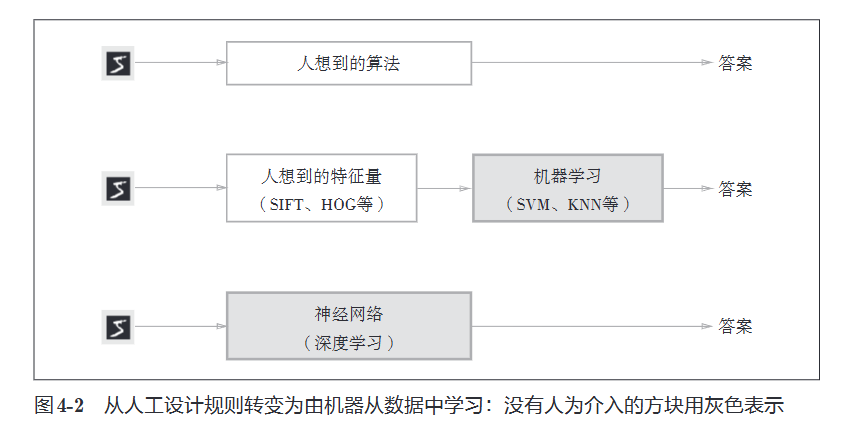</p>
<p>神经网络/深度学习有时也称为端对端机器学习（end-to-end machine learning），这里说的端对端是指从一端到另一端的意思，也就是说从原始数据（输入）中获得目标结果（输出）的意思。</p>
<h3 id="训练数据和测试数据">训练数据和测试数据</h3>
<p>机器学习一般将数据分为<strong>训练数据</strong>和<strong>测试数据</strong>两部分来进行学习和实验等。首先，使用训练数据进行学习，寻找最优的参数；然后，使用测试数据评价训练得到的模型的实际能力。为什么需要将数据分为训练数据和测试数据呢？因为我们追求的是模型的泛化能力。为了正确评价模型的<strong>泛化能力</strong>，就必须划分训练数据和测试数据。另外，训练数据也可以称为<strong>监督数据</strong>。</p>
<p>泛化能力是指处理未被观察过的数据的能力。获得泛化能力是机器学习的最终目标。</p>
<h2 id="4-2-损失函数">4.2 损失函数</h2>
<p>损失函数（loss function）可以使用任意函数，但是一般用均方误差和交叉熵误差等。</p>
<p>损失函数（loss function）是表示神经网络性能的”恶劣程度“的指标，即当前的神经网络对监督数据在多大程度上不拟合，在多大程度上不一致。</p>
<h3 id="均方误差">均方误差</h3>
<p>可以用作损失函数的函数有很多，其中最有名的是<strong>均方误差（mean squared error）</strong>。均方误差如下式所示：</p>
<p style=""></p><p>这里  是神经网络的输出， 是监督数据， 表示数据的维度。</p>
<p>例如在手写数字识别的例子中， 和  是由10个元素构成的数据（每个数字的概率）。</p>
<figure class="highlight python"><table><tr><td class="gutter"><pre><span class="line">1</span><br><span class="line">2</span><br></pre></td><td class="code"><pre><span class="line">y = [<span class="number">0.1</span>, <span class="number">0.05</span>, <span class="number">0.6</span>, <span class="number">0.0</span>, <span class="number">0.05</span>, <span class="number">0.1</span>, <span class="number">0.0</span>, <span class="number">0.1</span>, <span class="number">0.0</span>, <span class="number">0.0</span>]</span><br><span class="line">t = [<span class="number">0</span>, <span class="number">0</span>, <span class="number">1</span>, <span class="number">0</span>, <span class="number">0</span>, <span class="number">0</span>, <span class="number">0</span>, <span class="number">0</span>, <span class="number">0</span>, <span class="number">0</span>]</span><br></pre></td></tr></table></figure>
<p>这里神经网络的输出  是 softmax 函数的输出。这里正确解标签为1，其他标签为0的表示方式称为<strong>one-hot表示</strong>。</p>
<p>下面我们用python来时间计算均方误差的函数</p>
<figure class="highlight python"><table><tr><td class="gutter"><pre><span class="line">1</span><br><span class="line">2</span><br></pre></td><td class="code"><pre><span class="line"><span class="keyword">def</span> <span class="title function_">mean_squared_error</span>(<span class="params">y, t</span>):</span><br><span class="line">    <span class="keyword">return</span> <span class="number">0.5</span> * np.<span class="built_in">sum</span>((y-t)**<span class="number">2</span>)</span><br></pre></td></tr></table></figure>
<h3 id="交叉熵误差">交叉熵误差</h3>
<p>除了均方误差之外，<strong>交叉熵误差</strong>（cross entropy error）也进程用作损失函数。如下所示</p>
<p style=""></p><p>这里  表示以 e 为底数的自然对数。  是神经网络的输出， 是正确解标签。并且  中只有正确解标签的索引为 1，其它均为0。因此上式只会计算对应正确解的输出的自然对数。</p>
<p>当正确解输出值接近1时，交叉熵误差接近于0；当正确解输出值接近0时，交叉熵误差接近于正无穷。</p>
<p>下面我们用代码来实现交叉熵误差。</p>
<figure class="highlight python"><table><tr><td class="gutter"><pre><span class="line">1</span><br><span class="line">2</span><br><span class="line">3</span><br></pre></td><td class="code"><pre><span class="line"><span class="keyword">def</span> <span class="title function_">cross_entropy_error</span>(<span class="params">y, t</span>):</span><br><span class="line">    delta = <span class="number">1e-7</span></span><br><span class="line">    <span class="keyword">return</span> -nu.<span class="built_in">sum</span>(t * np.log(y + delta))</span><br></pre></td></tr></table></figure>
<p>这里加入一个微小的值 delta ，避免出现0的情况，导致无法计算。</p>
<h3 id="mini-batch-学习">mini-batch 学习</h3>
<p>机器学习使用训练数据进行学习，严格地说，就是针对训练数据计算损失函数的值，找出使得该值尽可能小的参数。因此，计算损失函数时必须将所有的训练数据作为对象。</p>
<p>前面介绍的损失函数的例子都时针对单个数据的损失函数。如果要求所有训练数据的损失函数的总和，以交叉熵误差为例，可以写成下面的式子</p>
<p style=""></p><p>这里假设数据有 N 个， 表示第  个数据的第  个元素的值。</p>
<p>这里是计算N份数据的平均值，得到一个平均损失函数。</p>
<p>另外，MNIST 数据集的训练数据有 6万个，如果以全部数据为对象求损失函数的和，则计算过程需要花费较长的时间。再者，如果遇到大数据，数据量会有上百万，上千万之多，这种情况下以全部数据为对象计算损失函数是不现实的。因此，我们可以从全部数据中选出一部分，作为全部数据的”近似“。神经网络的学习也是从训练数据中选处一批数据（称为 mini-batch ，小批量），然后对每个 mini-batch 进行学习。比如从6万个训练数据中随机选择100笔，再对这100笔数据进行学习。这种学习方式称为<strong>mini-batch学习</strong>。</p>
<p>下面我们来编写从训练数据中随机选择指定个数的数据的代码，以进行 mini-batch 学习。在这之前，先来看一下用于读入 MNIST 数据集的代码</p>
<figure class="highlight python"><table><tr><td class="gutter"><pre><span class="line">1</span><br><span class="line">2</span><br><span class="line">3</span><br><span class="line">4</span><br><span class="line">5</span><br><span class="line">6</span><br><span class="line">7</span><br><span class="line">8</span><br><span class="line">9</span><br><span class="line">10</span><br></pre></td><td class="code"><pre><span class="line"><span class="keyword">import</span> sys, os</span><br><span class="line">sys.path.append(os.pardir)</span><br><span class="line"><span class="keyword">import</span> numpy <span class="keyword">as</span> np</span><br><span class="line"><span class="keyword">from</span> dataset.mnist <span class="keyword">import</span> load_mnist</span><br><span class="line"></span><br><span class="line">(x_train, t_train), (x_test, t_test) = \</span><br><span class="line">	load_mnist(normalize=<span class="literal">True</span>, one_hot_label=<span class="literal">True</span>)</span><br><span class="line"></span><br><span class="line"><span class="built_in">print</span>(x_train.shape) <span class="comment"># (60000, 784)</span></span><br><span class="line"><span class="built_in">print</span>(t_train.shape) <span class="comment"># (60000, 10)</span></span><br></pre></td></tr></table></figure>
<p>这里通过设定参数<code>one_hot_label=True</code> ，得到 one-hot 表示。</p>
<p>那么，如何从这个训练数据中随机抽取10笔数据呢？我们可以使用 <code>np.random.choice()</code> 函数，写成如下形式。使用 <code>np.random.choice()</code> 函数可以得到随机数字，比如  <code>np.random.choice(100,10)</code>就会从 1-99 中随机选择10个数字。</p>
<figure class="highlight python"><table><tr><td class="gutter"><pre><span class="line">1</span><br><span class="line">2</span><br><span class="line">3</span><br><span class="line">4</span><br><span class="line">5</span><br></pre></td><td class="code"><pre><span class="line">train_size = x_train.shape[<span class="number">0</span>]</span><br><span class="line">batch_size = <span class="number">10</span></span><br><span class="line">batch_mask = np.random.choice(train_size, batch_size)</span><br><span class="line">x_batch = x_train[batch_mask]</span><br><span class="line">t_batch = t_train[batch_mask]</span><br></pre></td></tr></table></figure>
<p>之后，我们只需要利用这些随机选出的索引，取出 mini-batch ，然后使用这个 mini-batch 计算损失函数即可。</p>
<h3 id="mini-batch版交叉熵误差的实现">mini-batch版交叉熵误差的实现</h3>
<p>如何实现对应 mini-batch 的交叉熵误差呢？只要改良一下之前实现的对应单个数据的交叉熵误差就可以了。这里，我们来实现一个可以同时实现单个数据和批量数据两种情况的函数。</p>
<figure class="highlight python"><table><tr><td class="gutter"><pre><span class="line">1</span><br><span class="line">2</span><br><span class="line">3</span><br><span class="line">4</span><br><span class="line">5</span><br><span class="line">6</span><br><span class="line">7</span><br></pre></td><td class="code"><pre><span class="line"><span class="keyword">def</span> <span class="title function_">cross_entropy_error</span>(<span class="params">y, t</span>):</span><br><span class="line">    <span class="keyword">if</span> y.ndim == <span class="number">1</span>:</span><br><span class="line">        t = t.reshape(<span class="number">1</span>, t.size)</span><br><span class="line">        y = y.reshape(<span class="number">1</span>, y.size)</span><br><span class="line">    </span><br><span class="line">    batch_size = y.shape[<span class="number">0</span>]</span><br><span class="line">    <span class="keyword">return</span> -np.<span class="built_in">sum</span>(t * np.log(y + <span class="number">1e-7</span>)) / batch_size</span><br></pre></td></tr></table></figure>
<p>这里 ， 是神经网络的输出 ， 是监督数据。</p>
<p>当  的维度为1时，即求单个数据的交叉熵误差时，需要改变数据的形状。并且，当输入是 mini-batch 时，要用 batch 的个数进行正规化，计算单个数据的平均交叉熵误差。</p>
<p>此时，当监督数据是标签形式（非one-hot表示，而是像”2“ ”7“这样的标签）时，交叉熵误差可以通过如下代码实现：</p>
<figure class="highlight python"><table><tr><td class="gutter"><pre><span class="line">1</span><br><span class="line">2</span><br><span class="line">3</span><br><span class="line">4</span><br><span class="line">5</span><br><span class="line">6</span><br><span class="line">7</span><br></pre></td><td class="code"><pre><span class="line"><span class="keyword">def</span> <span class="title function_">cross_entropy_error</span>(<span class="params">y, t</span>):</span><br><span class="line">    <span class="keyword">if</span> y.ndim == <span class="number">1</span>:</span><br><span class="line">        t = t.reshape(<span class="number">1</span>, t.size)</span><br><span class="line">        y = y.reshape(<span class="number">1</span>, y.size)</span><br><span class="line">    </span><br><span class="line">    batch_size = y.shape[<span class="number">0</span>]</span><br><span class="line">    <span class="keyword">return</span> -np.<span class="built_in">sum</span>(np.log(y[np.arange(batch_size), t] + <span class="number">1e-7</span>)) / batch_size</span><br></pre></td></tr></table></figure>
<p>这里实现的要点在于只对正确解标签处的输出计算交叉熵误差。这里利用了 Numpy 花式索引的一个形状，当提供2个列表作为索引时，会返回两个列表的相应位置元素对组成的位置的元素，返回一个一个维数组。下例中，最终选出的是元素(1,0)、(5,3)、(7,1) 和 (2,2) 。</p>
<figure class="highlight python"><table><tr><td class="gutter"><pre><span class="line">1</span><br></pre></td><td class="code"><pre><span class="line">arr[[<span class="number">1</span>, <span class="number">5</span>, <span class="number">7</span>, <span class="number">2</span>], [<span class="number">0</span>, <span class="number">3</span>, <span class="number">1</span>, <span class="number">2</span>]]</span><br></pre></td></tr></table></figure>
<h3 id="为何要设定损失函数">为何要设定损失函数</h3>
<p>因为我们在寻找最优参数时，要寻找使损失函数的值尽可能小的参数。为了找到使损失函数的值尽可能小的地方，需要计算参数的导数（确切地说是梯度）。</p>
<p>假设有一个神经网络，现在我们来关注这个神经网络中的某一个权重参数。此时，对该权重参数的损失函数求导，表示的是”如果稍微改变这个权重参数的值，损失函数的值会如何变化“。如果导数的值为负，通过使该权重参数向正方向改变，可以减少损失函数的值；反过来，如果导数的值为正，则通过使该权重参数向负方向改变，可以减少损失函数的值。不过当导数的值为 0 时，无论权重参数向哪个方向变化，损失函数的值都不会改变，此时该权重参数的更新会停在此处。</p>
<p>之所以不能用识别精度作为指标，因为这样一来绝大多数地方的导数都会变成0，导致参数无法更新。</p>
<p>为什么使用识别精度作为指标，参数的导数在绝大多数地方都会变成0呢？为了回答这个问题，我们来思考一个具体例子。假设某个神经网络正确识别出了100笔训练数据中的32笔，此时识别精度为 32% 。如果以识别精度为指标，即使稍微改变权重参数的值，识别精度也仍将保持在 32%，不会出现变化。也就是说，仅仅微调参数，是无法改善识别精度的。即使识别精度有所改善，它的值也不会像 32.0123…% 这样连续变化，而是变成 33%、34% 这样的不连续的、离散的值。而如果把损失函数作为指标，稍微改变一下参数的值，会发生连续性的变化。</p>
<p>识别精度对微小的参数变化基本没有什么反应，即便有反应，它的值也是不连续地、突然地变化。作为激活函数的阶跃函数也有同样的情况。出于相同的原因，如果使用阶跃函数作为激活函数，神经网络的学习将无法进行。</p>
<p>阶跃函数就像”竹筒敲石“一样，只在某个瞬间发生改变。而 sigmoid 函数不仅输出值是连续变化的，曲线的斜率（导数）也是连续变化的。也就是说，sigmoid 函数的导数在任何地方都不为 0。这对神经网络的学习非常重要。得益于这个斜率不会为 0 的性质，神经网络的学习得以正确进行。</p>
<p>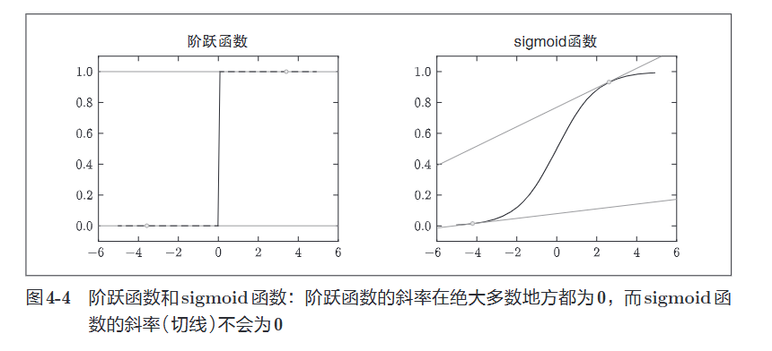</p>
<h2 id="4-3-数值微分">4.3 数值微分</h2>
<p>梯度法使用梯度的信息决定前进的方向。这里介绍梯度是什么，有什么性质。</p>
<h3 id="导数">导数</h3>
<p>导数就是表示某个瞬间的变化量。它可以定义成下面的式子。</p>
<p style=""></p><p>下面我们根据这个式子来实现求函数的导数的程序。</p>
<figure class="highlight python"><table><tr><td class="gutter"><pre><span class="line">1</span><br><span class="line">2</span><br><span class="line">3</span><br><span class="line">4</span><br></pre></td><td class="code"><pre><span class="line"><span class="comment"># 不好的导数实现示例</span></span><br><span class="line"><span class="keyword">def</span> <span class="title function_">numerical_diff</span>(<span class="params">f, x</span>):</span><br><span class="line">    h = <span class="number">1e-50</span></span><br><span class="line">    <span class="keyword">return</span> (f(x+h) - f(x)) / h</span><br></pre></td></tr></table></figure>
<p>这个程序名称来自于<strong>数值微分</strong>的英文 numerical differentiation （所谓数值微分就是用数值方法近似求解函数的导数的过程；而基于数学式的推导求导数的过程，则用”<strong>解析性</strong>“（analytic）一词，称为解析性求解或解析性求导）。这个函数有2个参数，即函数 f 和传给函数 f 的参数 x 。</p>
<p>在上面的函数中，h 采用了一个尽可能小的值，但是这样会产生<strong>舍入误差（rounding error）</strong>。所谓摄入误差，指因省略小数的精细部分的数值而造成的计算结果上的误差。这是第一个需要改变的地方，这里可以将 h 改为  。</p>
<p>第二个需要改进的地方于函数f的差分有关。虽然上述实现中计算了函数 f 在 x+h 和 x 之间的差分。但是必须注意到，这个计算从一开始就有误差。”真的导数“对应函数在 x 处的斜率（称为切线），但上述实现中计算的导数对应的是 (x+h) 和 x 之间的斜率。因此，真的导数于上述实现中得到的导数的值在严格意义上并不一致。这个差异的出现是因为 h 不可能无限接近 0 。</p>
<p>如下图所示，数值微分含有误差。为了减小这个误差，我们可以计算函数 f 在 (x+h) 和 (x-h) 之间的差分。因为这种计算方法以 x 为中心，计算它左右两边的差分，所以也称为<strong>中心差分</strong>（而 (x+h) 和 x 之间的差分称为<strong>前向差分</strong>）。</p>
<p>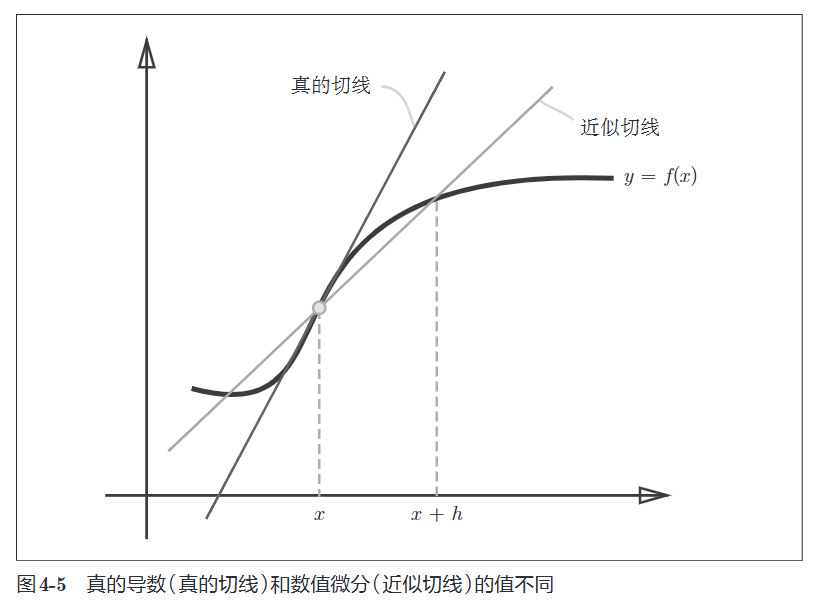</p>
<p>下面，我们基于上述2个要改进的点来实现数值微分。</p>
<figure class="highlight python"><table><tr><td class="gutter"><pre><span class="line">1</span><br><span class="line">2</span><br><span class="line">3</span><br></pre></td><td class="code"><pre><span class="line"><span class="keyword">def</span> <span class="title function_">numerical_diff</span>(<span class="params">f, x</span>):</span><br><span class="line">    h = <span class="number">1e-4</span></span><br><span class="line">    <span class="keyword">return</span> (f(x+h) - f(x-h)) / (<span class="number">2</span>*h)</span><br></pre></td></tr></table></figure>
<h3 id="数值微分的例子">数值微分的例子</h3>
<p>现在我们试着用上述的数值微分对简单函数进行求导。先看一个2次函数如下</p>
<p style=""></p><p>用 python 来实现如下</p>
<figure class="highlight python"><table><tr><td class="gutter"><pre><span class="line">1</span><br><span class="line">2</span><br></pre></td><td class="code"><pre><span class="line"><span class="keyword">def</span> <span class="title function_">function_1</span>(<span class="params">x</span>):</span><br><span class="line">    <span class="keyword">return</span> <span class="number">0.01</span>*(x**<span class="number">2</span>) + <span class="number">0.1</span>*x</span><br></pre></td></tr></table></figure>
<p>接下来，我们绘制这个函数的图像。代码如下</p>
<figure class="highlight python"><table><tr><td class="gutter"><pre><span class="line">1</span><br><span class="line">2</span><br><span class="line">3</span><br><span class="line">4</span><br><span class="line">5</span><br><span class="line">6</span><br><span class="line">7</span><br><span class="line">8</span><br><span class="line">9</span><br><span class="line">10</span><br></pre></td><td class="code"><pre><span class="line"><span class="keyword">import</span> numpy <span class="keyword">as</span> np</span><br><span class="line"><span class="keyword">import</span> matplotlib.pylab <span class="keyword">as</span> plt</span><br><span class="line"></span><br><span class="line">x = np.arange(<span class="number">0.0</span>, <span class="number">20.0</span>, <span class="number">0.1</span>) <span class="comment"># 以0.1为单位，从0到20的数组x</span></span><br><span class="line">y = function_1(x)</span><br><span class="line"></span><br><span class="line">plt.xlabel(<span class="string">&quot;x&quot;</span>)</span><br><span class="line">plt.ylabel(<span class="string">&quot;f(x)&quot;</span>)</span><br><span class="line">plt.plot(x, y)</span><br><span class="line">plt.show()</span><br></pre></td></tr></table></figure>
<p>我们来计算一下这个函数在 x=5 和 x=10 处的导数。可以看到和真实导数误差很小。</p>
<figure class="highlight python"><table><tr><td class="gutter"><pre><span class="line">1</span><br><span class="line">2</span><br></pre></td><td class="code"><pre><span class="line">numerical_diff(function_1, <span class="number">5</span>)</span><br><span class="line">numerical_diff(function_1, <span class="number">10</span>)</span><br></pre></td></tr></table></figure>
<h3 id="偏导数">偏导数</h3>
<p>接下来，我们看一下下面的函数。这里有2个变量。</p>
<p style=""></p><p>这个式子可以用 Python 来实现，如下所示</p>
<figure class="highlight python"><table><tr><td class="gutter"><pre><span class="line">1</span><br><span class="line">2</span><br><span class="line">3</span><br></pre></td><td class="code"><pre><span class="line"><span class="keyword">def</span> <span class="title function_">function_2</span>(<span class="params">x</span>):</span><br><span class="line">    <span class="keyword">return</span> x[<span class="number">0</span>]**<span class="number">2</span> + x[<span class="number">1</span>]**<span class="number">2</span></span><br><span class="line">    <span class="comment"># return np.sum(x**2)</span></span><br></pre></td></tr></table></figure>
<p>现在我们求该函数的导数。这里需要注意的是，这里有2个变量，我们需要区分对哪个变量求导。另外，我们把这里讨论的有多个变量的函数的导数称为<strong>偏导数</strong>，用数学式表达的话，可以写成  这种格式。</p>
<p>怎么求偏导数呢？我们先试着解一下下面2个关于偏导数的问题。</p>
<p>问题1：求  时，关于  的偏导数</p>
<figure class="highlight python"><table><tr><td class="gutter"><pre><span class="line">1</span><br><span class="line">2</span><br><span class="line">3</span><br><span class="line">4</span><br></pre></td><td class="code"><pre><span class="line"><span class="keyword">def</span> <span class="title function_">function_tmp1</span>(<span class="params">x0</span>):</span><br><span class="line">    <span class="keyword">return</span> x0**<span class="number">2</span> + <span class="number">4.0</span> ** <span class="number">2</span></span><br><span class="line">    </span><br><span class="line">numerical_diff(function_tmp1, <span class="number">3.0</span>)</span><br></pre></td></tr></table></figure>
<figure class="highlight python"><table><tr><td class="gutter"><pre><span class="line">1</span><br></pre></td><td class="code"><pre><span class="line"><span class="number">6.00000000000378</span></span><br></pre></td></tr></table></figure>
<p>问题1：求  时，关于  的偏导数</p>
<figure class="highlight python"><table><tr><td class="gutter"><pre><span class="line">1</span><br><span class="line">2</span><br><span class="line">3</span><br><span class="line">4</span><br></pre></td><td class="code"><pre><span class="line"><span class="keyword">def</span> <span class="title function_">function_tmp2</span>(<span class="params">x1</span>):</span><br><span class="line">    <span class="keyword">return</span> <span class="number">3.0</span>**<span class="number">2</span> + x1**<span class="number">2</span></span><br><span class="line">    </span><br><span class="line">numerical_diff(function_tmp2, <span class="number">4.0</span>)</span><br></pre></td></tr></table></figure>
<figure class="highlight python"><table><tr><td class="gutter"><pre><span class="line">1</span><br></pre></td><td class="code"><pre><span class="line"><span class="number">7.999999999999119</span></span><br></pre></td></tr></table></figure>
<p>在这些问题中，我们定义了一个只有一个变量的函数，并对这个函数进行求导，使用数值微分计算导数，结果和解析解的导数基本一致。</p>
<p>像这样，偏导数和单变量的导数一样，都是求某个地方的斜率。不过，偏导数需要将多个变量中的某一个变量定为目标变量，并将其它变量固定为某个值。</p>
<h2 id="4-4-梯度">4.4 梯度</h2>
<p>在刚才的例子，我们计算了两个变量的偏导数。现在我们希望一起计算  和  的偏导数。比如我们考虑  时  的偏导数   ，像这种由全部变量的偏导数汇总而成的向量称为<strong>梯度</strong> (gradient)。</p>
<p>梯度可以像下面这种来实现。这里上面的数值微分的实现基本相同，只是对每一个变量逐个求数值微分。</p>
<figure class="highlight python"><table><tr><td class="gutter"><pre><span class="line">1</span><br><span class="line">2</span><br><span class="line">3</span><br><span class="line">4</span><br><span class="line">5</span><br><span class="line">6</span><br><span class="line">7</span><br><span class="line">8</span><br><span class="line">9</span><br><span class="line">10</span><br><span class="line">11</span><br><span class="line">12</span><br><span class="line">13</span><br><span class="line">14</span><br><span class="line">15</span><br><span class="line">16</span><br><span class="line">17</span><br><span class="line">18</span><br><span class="line">19</span><br></pre></td><td class="code"><pre><span class="line"><span class="keyword">def</span> <span class="title function_">numerical_gradient</span>(<span class="params">f, x</span>):</span><br><span class="line">    h = <span class="number">1e-4</span></span><br><span class="line">    grad = np.zeros_like(x) <span class="comment"># 生成和 x 形状相同的数组</span></span><br><span class="line">    </span><br><span class="line">    <span class="keyword">for</span> idx <span class="keyword">in</span> <span class="built_in">range</span>(x.size):</span><br><span class="line">        tmp_val = x[idx]</span><br><span class="line">        </span><br><span class="line">        <span class="comment"># f(x+h)的计算 </span></span><br><span class="line">        x[idx] = tmp_val + h</span><br><span class="line">        fxh1 = f(x)</span><br><span class="line">        </span><br><span class="line">        <span class="comment"># f(x-h)的计算</span></span><br><span class="line">        x[idx] = tmp_val - h</span><br><span class="line">        fxh2 = f(x)</span><br><span class="line">        </span><br><span class="line">        grad[idx] = (fxh1 - fxh2) / (<span class="number">2</span>*h)</span><br><span class="line">        x[idx] = tmp_val <span class="comment"># 还原值</span></span><br><span class="line">    </span><br><span class="line">    <span class="keyword">return</span> grad</span><br></pre></td></tr></table></figure>
<p>举个例子看一下，没有问题，这里输出的是 [6., 8.] ，是因为输出 NumPy 数组时，数值会被改成“易读”的形式。</p>
<figure class="highlight python"><table><tr><td class="gutter"><pre><span class="line">1</span><br><span class="line">2</span><br></pre></td><td class="code"><pre><span class="line"><span class="keyword">import</span> numpy <span class="keyword">as</span> np</span><br><span class="line">numerical_gradient(function_2, np.array([<span class="number">3.0</span>, <span class="number">4.0</span>]))</span><br></pre></td></tr></table></figure>
<figure class="highlight plaintext"><table><tr><td class="gutter"><pre><span class="line">1</span><br></pre></td><td class="code"><pre><span class="line">array([6., 8.])</span><br></pre></td></tr></table></figure>
<p>为了更好的理解，我们把  的梯度画在图上。不过，这里我们画的<strong>负梯度</strong>的向量（因为负梯度方向才是梯度下降法中变量的更新方向）。</p>
<p>我们看所有梯度均指向函数的最小值，并且离“最低处”越远，箭头越大。</p>
<p>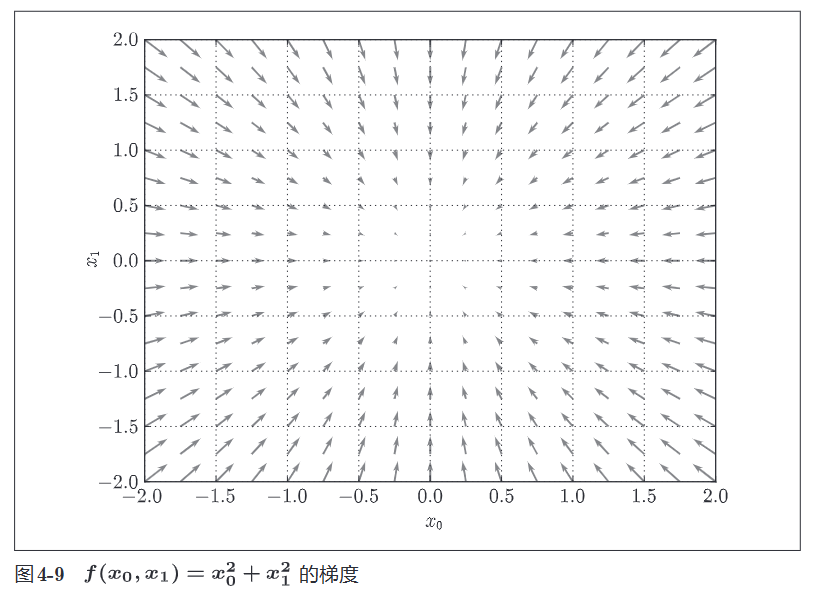</p>
<p>虽然图中的梯度指向了最低处，但并非任何时候都这样。实际上，梯度会指向各点处的函数值下降的方向。更严格地说，<strong>梯度指示的方向是各点处的函数值减少最多的方向</strong>，这是一个非常重要的性质。</p>
<h3 id="梯度法">梯度法</h3>
<p>神经网络中的最佳参数就是指<strong>损失函数取最小值的参数</strong>。但是，一般而言，损失函数很复杂，参数空间庞大，我们不知道它在何处能取得最小值。我们可以用梯度法来寻找函数最小值。</p>
<p>梯度表示的是各点处的函数值减少最多的方向。因此，无法保证梯度所指的方向就是函数的最小值或者真正应该前进的方向。实际上，在复杂的函数中，梯度指示的方向基本上都不是函数最小值。</p>
<p>虽然梯度的方向并不一定指向最小值，但沿着它的方向能够最大限度地减少函数中的值，可以决定前进的方向。在梯度法中，每次从当前位置沿着梯度方向前进一定距离，然后在新的地方重新求梯度，这种不断沿着梯度方向前进，逐渐减少函数值的过程就是<strong>梯度法</strong> (gradient method)。梯度法是解决机器学习中最优化问题的常用方法，特别是在神经网络的学习中经常被使用。根据目的是寻找最小值还是最大值，梯度法可以分为梯度下降法和梯度上升法，二者本质相同，一般来说，神经网络中梯度法主要是梯度下降法。</p>
<p>注：函数的极小值（局部最小值）、最小值以及<strong>鞍点</strong> (saddle point) 的地方，梯度为0。鞍点是从某个方向上看是极大值，从另一个方向上看则是极小值的点。<strong>因为梯度法是寻找梯度为 0 的地方，但那个地方不一定是最小值（也可能是极小值或鞍点）</strong>。此外，当函数很复杂且呈扁平状时，学习可能会进入一个（几乎）平坦的提取，陷入被称为“学习高原”的无法前进的停滞期。</p>
<p>现在，我们尝试用数学式来表示梯度法，如下式</p>
<p style=""></p><p>这里  表示更新量，在神经网络的学习中，称为<strong>学习率</strong> (learning rate)。学习率过大或过小，都无法抵达一个“好的位置”。在神经网络的学习中，一般会一边改变学习率的值，一边确认学习是否正确进行了。</p>
<p>下面我们用 Python 来实现梯度下降法。如下所示</p>
<figure class="highlight python"><table><tr><td class="gutter"><pre><span class="line">1</span><br><span class="line">2</span><br><span class="line">3</span><br><span class="line">4</span><br><span class="line">5</span><br><span class="line">6</span><br><span class="line">7</span><br><span class="line">8</span><br></pre></td><td class="code"><pre><span class="line"><span class="keyword">def</span> <span class="title function_">gradient_descent</span>(<span class="params">f, init_x, lr=<span class="number">0.01</span>, step_num=<span class="number">100</span></span>):</span><br><span class="line">    x = init_x</span><br><span class="line">    </span><br><span class="line">    <span class="keyword">for</span> i <span class="keyword">in</span> <span class="built_in">range</span>(step_num):</span><br><span class="line">        grad = numerical_gradient(f, x)</span><br><span class="line">        x -= lr * grad</span><br><span class="line">        </span><br><span class="line">    <span class="keyword">return</span> x</span><br></pre></td></tr></table></figure>
<p>这里参数 f 是要进行最优化的函数，init_x 是初始值， lr 是学习率， step_num 是梯度法的重复次数。</p>
<p>使用这个函数可以求函数的极小值，顺利的话，还可以求函数的最小值。下面，我们来尝试解决这个问题，求解    的最小值的位置。可以看到结果非常接近 (0,0) 。</p>
<figure class="highlight python"><table><tr><td class="gutter"><pre><span class="line">1</span><br><span class="line">2</span><br><span class="line">3</span><br><span class="line">4</span><br><span class="line">5</span><br><span class="line">6</span><br></pre></td><td class="code"><pre><span class="line"><span class="keyword">def</span> <span class="title function_">function_2</span>(<span class="params">x</span>):</span><br><span class="line">    <span class="keyword">return</span> x[<span class="number">0</span>]**<span class="number">2</span> + x[<span class="number">1</span>]**<span class="number">2</span></span><br><span class="line">    <span class="comment"># return np.sum(x**2)</span></span><br><span class="line"></span><br><span class="line">init_x = np.array([-<span class="number">3.0</span>, <span class="number">4.0</span>])</span><br><span class="line">gradient_descent(f=function_2, init_x=init_x, lr=<span class="number">0.1</span>, step_num=<span class="number">100</span>)</span><br></pre></td></tr></table></figure>
<figure class="highlight python"><table><tr><td class="gutter"><pre><span class="line">1</span><br></pre></td><td class="code"><pre><span class="line">array([-<span class="number">6.11110793e-10</span>,  <span class="number">8.14814391e-10</span>])</span><br></pre></td></tr></table></figure>
<p>前面说过，学习率过大或过小都无法得到好的结果。我们来做个实验验证一下。</p>
<p>这里有一个小细节，<code>init_x</code> 传入函数后，<code>x=init_x</code> 只是建立一个新标签，因此运行完函数后，同样会修改<code>init_x</code> 的内容。再次运行函数前，需要还原 <code>init_x</code>  的内容。</p>
<figure class="highlight python"><table><tr><td class="gutter"><pre><span class="line">1</span><br><span class="line">2</span><br><span class="line">3</span><br></pre></td><td class="code"><pre><span class="line"><span class="comment"># 学习率过大的例子</span></span><br><span class="line">init_x = np.array([-<span class="number">3.0</span>, <span class="number">4.0</span>])</span><br><span class="line">gradient_descent(f=function_2, init_x=init_x, lr=<span class="number">10.0</span>, step_num=<span class="number">100</span>)</span><br></pre></td></tr></table></figure>
<figure class="highlight python"><table><tr><td class="gutter"><pre><span class="line">1</span><br></pre></td><td class="code"><pre><span class="line">array([-<span class="number">2.58983747e+13</span>, -<span class="number">1.29524862e+12</span>])</span><br></pre></td></tr></table></figure>
<figure class="highlight python"><table><tr><td class="gutter"><pre><span class="line">1</span><br><span class="line">2</span><br><span class="line">3</span><br></pre></td><td class="code"><pre><span class="line"><span class="comment"># 学习率过小的例子</span></span><br><span class="line">init_x = np.array([-<span class="number">3.0</span>, <span class="number">4.0</span>])</span><br><span class="line">gradient_descent(f=function_2, init_x=init_x, lr=<span class="number">1e-10</span>, step_num=<span class="number">100</span>)</span><br></pre></td></tr></table></figure>
<figure class="highlight python"><table><tr><td class="gutter"><pre><span class="line">1</span><br></pre></td><td class="code"><pre><span class="line">array([-<span class="number">2.99999994</span>,  <span class="number">3.99999992</span>])</span><br></pre></td></tr></table></figure>
<p>实验结果表明，学习率过大的话，会发散成一个很大的值；反过来，学习率很小的话，基本上没怎么更新就结束了。也就是说，设定合适的学习率是一个很重要的问题。</p>
<p>注：像学习率这样的参数称为<strong>超参数</strong>。这种一种和神经网络的参数（权重和偏置）性质不同的参数。神经网络的权重参数是通过数据和学习算法自动获得的，但学习率这样的超参数则是人工设定的。一般来说，超参数需要尝试多个值，以便找到一种可以使学习顺利进行的设定。</p>
<h3 id="神经网络的梯度">神经网络的梯度</h3>
<p>神经网络的学习也要求梯度。这里所说的梯度是指损失函数关于权重参数的梯度。比如，有一个形状为 2 × 3的权重  的神经网络，损失函数用  表示。此时梯度可以用  表示。用数学表达式的话，如下所示。</p>
<p style=""></p><p style=""></p><p> 的元素由各个元素关于  的偏导数构成，并且    和   的形状相同。</p>
<p>下面我们以一个简单的神经网络为例，来实现求梯度的代码。为此，我们要实现一个名为 simpleNet 的类。</p>
<figure class="highlight python"><table><tr><td class="gutter"><pre><span class="line">1</span><br><span class="line">2</span><br><span class="line">3</span><br><span class="line">4</span><br><span class="line">5</span><br><span class="line">6</span><br><span class="line">7</span><br><span class="line">8</span><br><span class="line">9</span><br><span class="line">10</span><br><span class="line">11</span><br><span class="line">12</span><br><span class="line">13</span><br><span class="line">14</span><br><span class="line">15</span><br><span class="line">16</span><br><span class="line">17</span><br><span class="line">18</span><br><span class="line">19</span><br></pre></td><td class="code"><pre><span class="line"><span class="keyword">import</span> sys, os</span><br><span class="line">sys.path.append(os.pardir)  <span class="comment"># 为了导入父目录中的文件而进行的设定</span></span><br><span class="line"><span class="keyword">import</span> numpy <span class="keyword">as</span> np</span><br><span class="line"><span class="keyword">from</span> common.functions <span class="keyword">import</span> softmax, cross_entropy_error</span><br><span class="line"><span class="keyword">from</span> common.gradient <span class="keyword">import</span> numerical_gradient</span><br><span class="line"></span><br><span class="line"><span class="keyword">class</span> <span class="title class_">SimpleNet</span>:</span><br><span class="line">    <span class="keyword">def</span> <span class="title function_">__init__</span>(<span class="params">self</span>):</span><br><span class="line">        self.W = np.random.randn(<span class="number">2</span>,<span class="number">3</span>) <span class="comment"># 用正态分布进行初始化</span></span><br><span class="line">        </span><br><span class="line">    <span class="keyword">def</span> <span class="title function_">predict</span>(<span class="params">self, x</span>):</span><br><span class="line">        <span class="keyword">return</span> np.dot(x, self.W)</span><br><span class="line">    </span><br><span class="line">    <span class="keyword">def</span> <span class="title function_">loss</span>(<span class="params">self, x, t</span>):</span><br><span class="line">        z = self.predict(x)</span><br><span class="line">        y = softmax(z)</span><br><span class="line">        loss = cross_entropy_error(y, t)</span><br><span class="line">        </span><br><span class="line">        <span class="keyword">return</span> loss</span><br></pre></td></tr></table></figure>
<p>simpleNet 类只有一个实例变量，即形状为 2×3 的权重参数。它由2个方法，一个方法用于预测，另一个用于计算损失函数值。这里参数x 为输入数据，参数t接收正确解标签。</p>
<p>现在我们试着用一下这个 simpleNet 。</p>
<figure class="highlight python"><table><tr><td class="gutter"><pre><span class="line">1</span><br><span class="line">2</span><br></pre></td><td class="code"><pre><span class="line">net = SimpleNet()</span><br><span class="line"><span class="built_in">print</span>(net.W)</span><br></pre></td></tr></table></figure>
<figure class="highlight python"><table><tr><td class="gutter"><pre><span class="line">1</span><br><span class="line">2</span><br></pre></td><td class="code"><pre><span class="line">[[ <span class="number">1.40827669</span>  <span class="number">0.87703568</span> -<span class="number">0.01796102</span>]</span><br><span class="line"> [ <span class="number">0.91787831</span> -<span class="number">0.37446688</span>  <span class="number">0.54339771</span>]]</span><br></pre></td></tr></table></figure>
<figure class="highlight python"><table><tr><td class="gutter"><pre><span class="line">1</span><br><span class="line">2</span><br><span class="line">3</span><br><span class="line">4</span><br><span class="line">5</span><br><span class="line">6</span><br><span class="line">7</span><br><span class="line">8</span><br></pre></td><td class="code"><pre><span class="line">x = np.array([<span class="number">0.6</span>, <span class="number">0.9</span>])</span><br><span class="line">p = net.predict(x)</span><br><span class="line"><span class="built_in">print</span>(p)</span><br><span class="line"></span><br><span class="line">np.argmax(p) <span class="comment"># 最大值的索引</span></span><br><span class="line"></span><br><span class="line">t = np.array([<span class="number">0</span>,<span class="number">0</span>,<span class="number">1</span>])</span><br><span class="line">net.loss(x, t)</span><br></pre></td></tr></table></figure>
<p>接下来求梯度。和前面一样，我们使用 numerical_gradient(f, x) 求梯度（这里使用的函数内容来自于 common/gradient.py ，和前面同函数内容略有不同，因为之前函数 x 只支持一维数组 ）。</p>
<p>这里定义的函数 <code>f(W)</code> 中的参数 W 是一个伪参数，因为 <code>numerical_gradient(f, net.W)</code> 会在内部执行 f(x) ，为了与之兼容而定义了f(W) 。</p>
<figure class="highlight python"><table><tr><td class="gutter"><pre><span class="line">1</span><br><span class="line">2</span><br><span class="line">3</span><br><span class="line">4</span><br><span class="line">5</span><br></pre></td><td class="code"><pre><span class="line"><span class="keyword">def</span> <span class="title function_">f</span>(<span class="params">W</span>):</span><br><span class="line">    <span class="keyword">return</span> net.loss(x, t)</span><br><span class="line"></span><br><span class="line">dW = numerical_gradient(f, net.W)</span><br><span class="line"><span class="built_in">print</span>(dW)</span><br></pre></td></tr></table></figure>
<figure class="highlight python"><table><tr><td class="gutter"><pre><span class="line">1</span><br><span class="line">2</span><br></pre></td><td class="code"><pre><span class="line">[[ <span class="number">0.3920045</span>   <span class="number">0.0890696</span>  -<span class="number">0.48107409</span>]</span><br><span class="line"> [ <span class="number">0.58800674</span>  <span class="number">0.13360439</span> -<span class="number">0.72161114</span>]]</span><br></pre></td></tr></table></figure>
<p>这里返回结果 dW 就是梯度矩阵，其形状也是 2×3。</p>
<p>另外，在上面的代码中，定义新函数时使用了 <code>def f(x):</code> 的形式。实际上，Python 中如果定义的时简单的函数，可以使用 lambda 表示法。使用 lambda 的情况下，上述代码可以如下实现。</p>
<figure class="highlight python"><table><tr><td class="gutter"><pre><span class="line">1</span><br><span class="line">2</span><br><span class="line">3</span><br></pre></td><td class="code"><pre><span class="line">f = <span class="keyword">lambda</span> W: net.loss(x, t)</span><br><span class="line">dW = numerical_gradient(f, net.W)</span><br><span class="line"><span class="built_in">print</span>(dW)</span><br></pre></td></tr></table></figure>
<p>求出神经网络的梯度后，接下来只需根据梯度法，更新权重参数即可。</p>
<h2 id="4-5-学习算法的实现">4.5 学习算法的实现</h2>
<p>关于神经网络学习的基础知识，到这里就全部介绍完了。接下来我们确认一下神经网络的学习步骤，如下所示：</p>
<ul>
<li>前提：调整权重和偏置以便拟合训练数据过程称为“学习”，分为以下步骤。</li>
<li>步骤1（mini-batch）：从训练数据中随机选出一部分数据，称为 mini-batch 。我们的目标时减少 mini-batch 的损失函数的值。</li>
<li>步骤2（计算梯度）：计算出各个权重参数的梯度。</li>
<li>步骤3（更新参数）：将权重参数沿梯度方向进行微小更新。</li>
<li>步骤4（重复）：重复步骤1-3</li>
</ul>
<p>由于这里使用的数据是随机选择的 mini batch 数据，因此称为<strong>随机梯度下降法</strong>（stochastic gradient descent）。“随机”指的是“随机选择的”意思，因此随机梯度下降法是“对随机选择的数据进行的梯度下降法”。在深度学习的很多框架中，随机梯度下降法一般由一个名为 <strong>SGD</strong> 的函数来实现，即该方法的首字母。</p>
<p>下面，我们来实现手写数字识别的神经网络。这里以2层神经网络（隐藏层为1层的网络）为对象，使用 MNIST 数据集进行学习。</p>
<h3 id="2层神经网络的类">2层神经网络的类</h3>
<p>首先，我们将这个2层神经网络实现一个名为 TwoLayerNet 的类，实现过程如下。</p>
<figure class="highlight python"><table><tr><td class="gutter"><pre><span class="line">1</span><br><span class="line">2</span><br><span class="line">3</span><br><span class="line">4</span><br><span class="line">5</span><br><span class="line">6</span><br><span class="line">7</span><br><span class="line">8</span><br><span class="line">9</span><br><span class="line">10</span><br><span class="line">11</span><br><span class="line">12</span><br><span class="line">13</span><br><span class="line">14</span><br><span class="line">15</span><br><span class="line">16</span><br><span class="line">17</span><br><span class="line">18</span><br><span class="line">19</span><br><span class="line">20</span><br><span class="line">21</span><br><span class="line">22</span><br><span class="line">23</span><br><span class="line">24</span><br><span class="line">25</span><br><span class="line">26</span><br><span class="line">27</span><br><span class="line">28</span><br><span class="line">29</span><br><span class="line">30</span><br><span class="line">31</span><br><span class="line">32</span><br><span class="line">33</span><br><span class="line">34</span><br><span class="line">35</span><br><span class="line">36</span><br><span class="line">37</span><br><span class="line">38</span><br><span class="line">39</span><br><span class="line">40</span><br><span class="line">41</span><br><span class="line">42</span><br><span class="line">43</span><br><span class="line">44</span><br><span class="line">45</span><br><span class="line">46</span><br><span class="line">47</span><br><span class="line">48</span><br><span class="line">49</span><br><span class="line">50</span><br><span class="line">51</span><br><span class="line">52</span><br><span class="line">53</span><br><span class="line">54</span><br><span class="line">55</span><br><span class="line">56</span><br><span class="line">57</span><br><span class="line">58</span><br><span class="line">59</span><br><span class="line">60</span><br><span class="line">61</span><br><span class="line">62</span><br><span class="line">63</span><br><span class="line">64</span><br><span class="line">65</span><br><span class="line">66</span><br><span class="line">67</span><br><span class="line">68</span><br><span class="line">69</span><br><span class="line">70</span><br><span class="line">71</span><br><span class="line">72</span><br><span class="line">73</span><br><span class="line">74</span><br><span class="line">75</span><br><span class="line">76</span><br><span class="line">77</span><br><span class="line">78</span><br></pre></td><td class="code"><pre><span class="line"><span class="comment"># coding: utf-8</span></span><br><span class="line"><span class="keyword">import</span> sys, os</span><br><span class="line">sys.path.append(os.pardir)  <span class="comment"># 为了导入父目录的文件而进行的设定</span></span><br><span class="line"><span class="keyword">from</span> common.functions <span class="keyword">import</span> *</span><br><span class="line"><span class="keyword">from</span> common.gradient <span class="keyword">import</span> numerical_gradient</span><br><span class="line"></span><br><span class="line"></span><br><span class="line"><span class="keyword">class</span> <span class="title class_">TwoLayerNet</span>:</span><br><span class="line"></span><br><span class="line">    <span class="keyword">def</span> <span class="title function_">__init__</span>(<span class="params">self, input_size, hidden_size, output_size, weight_init_std=<span class="number">0.01</span></span>):</span><br><span class="line">        <span class="comment"># 初始化权重</span></span><br><span class="line">        self.params = &#123;&#125;</span><br><span class="line">        self.params[<span class="string">&#x27;W1&#x27;</span>] = weight_init_std * np.random.randn(input_size, hidden_size)</span><br><span class="line">        self.params[<span class="string">&#x27;b1&#x27;</span>] = np.zeros(hidden_size)</span><br><span class="line">        self.params[<span class="string">&#x27;W2&#x27;</span>] = weight_init_std * np.random.randn(hidden_size, output_size)</span><br><span class="line">        self.params[<span class="string">&#x27;b2&#x27;</span>] = np.zeros(output_size)</span><br><span class="line"></span><br><span class="line">    <span class="keyword">def</span> <span class="title function_">predict</span>(<span class="params">self, x</span>):</span><br><span class="line">        W1, W2 = self.params[<span class="string">&#x27;W1&#x27;</span>], self.params[<span class="string">&#x27;W2&#x27;</span>]</span><br><span class="line">        b1, b2 = self.params[<span class="string">&#x27;b1&#x27;</span>], self.params[<span class="string">&#x27;b2&#x27;</span>]</span><br><span class="line">    </span><br><span class="line">        a1 = np.dot(x, W1) + b1</span><br><span class="line">        z1 = sigmoid(a1)</span><br><span class="line">        a2 = np.dot(z1, W2) + b2</span><br><span class="line">        y = softmax(a2)</span><br><span class="line">        </span><br><span class="line">        <span class="keyword">return</span> y</span><br><span class="line">        </span><br><span class="line">    <span class="comment"># x:输入数据, t:监督数据</span></span><br><span class="line">    <span class="keyword">def</span> <span class="title function_">loss</span>(<span class="params">self, x, t</span>):</span><br><span class="line">        y = self.predict(x)</span><br><span class="line">        </span><br><span class="line">        <span class="keyword">return</span> cross_entropy_error(y, t)</span><br><span class="line">    </span><br><span class="line">    <span class="keyword">def</span> <span class="title function_">accuracy</span>(<span class="params">self, x, t</span>):</span><br><span class="line">        y = self.predict(x)</span><br><span class="line">        y = np.argmax(y, axis=<span class="number">1</span>)</span><br><span class="line">        t = np.argmax(t, axis=<span class="number">1</span>)</span><br><span class="line">        </span><br><span class="line">        accuracy = np.<span class="built_in">sum</span>(y == t) / <span class="built_in">float</span>(x.shape[<span class="number">0</span>])</span><br><span class="line">        <span class="keyword">return</span> accuracy</span><br><span class="line">        </span><br><span class="line">    <span class="comment"># x:输入数据, t:监督数据</span></span><br><span class="line">    <span class="keyword">def</span> <span class="title function_">numerical_gradient</span>(<span class="params">self, x, t</span>):</span><br><span class="line">        loss_W = <span class="keyword">lambda</span> W: self.loss(x, t)</span><br><span class="line">        </span><br><span class="line">        grads = &#123;&#125;</span><br><span class="line">        grads[<span class="string">&#x27;W1&#x27;</span>] = numerical_gradient(loss_W, self.params[<span class="string">&#x27;W1&#x27;</span>])</span><br><span class="line">        grads[<span class="string">&#x27;b1&#x27;</span>] = numerical_gradient(loss_W, self.params[<span class="string">&#x27;b1&#x27;</span>])</span><br><span class="line">        grads[<span class="string">&#x27;W2&#x27;</span>] = numerical_gradient(loss_W, self.params[<span class="string">&#x27;W2&#x27;</span>])</span><br><span class="line">        grads[<span class="string">&#x27;b2&#x27;</span>] = numerical_gradient(loss_W, self.params[<span class="string">&#x27;b2&#x27;</span>])</span><br><span class="line">        </span><br><span class="line">        <span class="keyword">return</span> grads</span><br><span class="line">        </span><br><span class="line">    <span class="keyword">def</span> <span class="title function_">gradient</span>(<span class="params">self, x, t</span>):</span><br><span class="line">        W1, W2 = self.params[<span class="string">&#x27;W1&#x27;</span>], self.params[<span class="string">&#x27;W2&#x27;</span>]</span><br><span class="line">        b1, b2 = self.params[<span class="string">&#x27;b1&#x27;</span>], self.params[<span class="string">&#x27;b2&#x27;</span>]</span><br><span class="line">        grads = &#123;&#125;</span><br><span class="line">        </span><br><span class="line">        batch_num = x.shape[<span class="number">0</span>]</span><br><span class="line">        </span><br><span class="line">        <span class="comment"># forward</span></span><br><span class="line">        a1 = np.dot(x, W1) + b1</span><br><span class="line">        z1 = sigmoid(a1)</span><br><span class="line">        a2 = np.dot(z1, W2) + b2</span><br><span class="line">        y = softmax(a2)</span><br><span class="line">        </span><br><span class="line">        <span class="comment"># backward</span></span><br><span class="line">        dy = (y - t) / batch_num</span><br><span class="line">        grads[<span class="string">&#x27;W2&#x27;</span>] = np.dot(z1.T, dy)</span><br><span class="line">        grads[<span class="string">&#x27;b2&#x27;</span>] = np.<span class="built_in">sum</span>(dy, axis=<span class="number">0</span>)</span><br><span class="line">        </span><br><span class="line">        da1 = np.dot(dy, W2.T)</span><br><span class="line">        dz1 = sigmoid_grad(a1) * da1</span><br><span class="line">        grads[<span class="string">&#x27;W1&#x27;</span>] = np.dot(x.T, dz1)</span><br><span class="line">        grads[<span class="string">&#x27;b1&#x27;</span>] = np.<span class="built_in">sum</span>(dz1, axis=<span class="number">0</span>)</span><br><span class="line"></span><br><span class="line">        <span class="keyword">return</span> grads</span><br></pre></td></tr></table></figure>
<p>虽然这个类的实现稍微有点长，但是因为和上一章的神经网络的前向处理的实现有很多共通之处，所以没有太多新东西。我们把这个类中用到的变量和方法整理一下。这里只罗列了重要的变量。</p>
<p>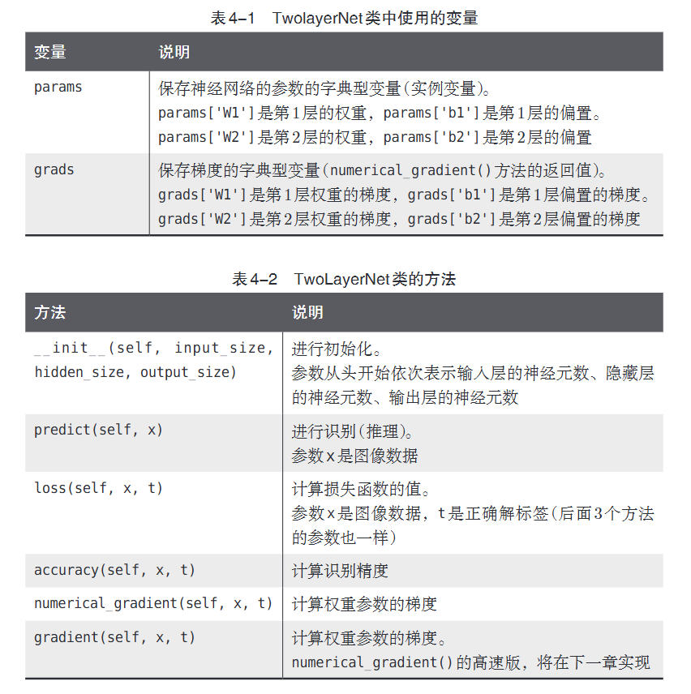</p>
<p>这里有 params 和 grads 两个字典型实例变量。params 变量中保存了权重参数。</p>
<p>这里来看一个例子</p>
<figure class="highlight python"><table><tr><td class="gutter"><pre><span class="line">1</span><br><span class="line">2</span><br><span class="line">3</span><br><span class="line">4</span><br><span class="line">5</span><br><span class="line">6</span><br></pre></td><td class="code"><pre><span class="line">net = TwoLayerNet(input_size=<span class="number">784</span>, hidden_size=<span class="number">100</span>, output_size=<span class="number">10</span>)</span><br><span class="line"></span><br><span class="line">net.params[<span class="string">&#x27;W1&#x27;</span>].shape <span class="comment"># (784, 100)</span></span><br><span class="line">net.params[<span class="string">&#x27;b1&#x27;</span>].shape <span class="comment"># (100,)</span></span><br><span class="line">net.params[<span class="string">&#x27;W2&#x27;</span>].shape <span class="comment"># (100, 10)</span></span><br><span class="line">net.params[<span class="string">&#x27;b2&#x27;</span>].shape <span class="comment"># (10,)</span></span><br></pre></td></tr></table></figure>
<p>如上所示，params 变量中保存了该神经网络所需的全部参数。并且，params 变量中保存的权重参数会用在推理处理（前向处理）中。顺便说一下，推断处理的实现如下所示</p>
<figure class="highlight python"><table><tr><td class="gutter"><pre><span class="line">1</span><br><span class="line">2</span><br></pre></td><td class="code"><pre><span class="line">x = np.random.rand(<span class="number">100</span>, <span class="number">784</span>) <span class="comment"># 伪输入数据（100笔）</span></span><br><span class="line">y = net.predict(x)</span><br></pre></td></tr></table></figure>
<p>此外，与 params 变量对应，grads 变量中保存了各个参数的梯度。如下所示，使用 <code>numerical_gradient()</code> 方法计算梯度后，梯度的信息将保存在 grads 变量中。实例如下。</p>
<figure class="highlight python"><table><tr><td class="gutter"><pre><span class="line">1</span><br><span class="line">2</span><br><span class="line">3</span><br><span class="line">4</span><br><span class="line">5</span><br><span class="line">6</span><br><span class="line">7</span><br><span class="line">8</span><br><span class="line">9</span><br></pre></td><td class="code"><pre><span class="line">x = np.random.rand(<span class="number">100</span>, <span class="number">784</span>) <span class="comment"># 伪输入数据（100笔）</span></span><br><span class="line">t = np.random.rand(<span class="number">100</span>, <span class="number">10</span>)  <span class="comment"># 伪正确解标签（100笔）</span></span><br><span class="line"></span><br><span class="line">grads = net.numerical_gradient(x, t)  <span class="comment"># 计算梯度</span></span><br><span class="line"></span><br><span class="line">grads[<span class="string">&#x27;W1&#x27;</span>].shape  <span class="comment"># (784, 100)</span></span><br><span class="line">grads[<span class="string">&#x27;b1&#x27;</span>].shape  <span class="comment"># (100,)</span></span><br><span class="line">grads[<span class="string">&#x27;W2&#x27;</span>].shape  <span class="comment"># (100, 10)</span></span><br><span class="line">grads[<span class="string">&#x27;b2&#x27;</span>].shape  <span class="comment"># (10,)</span></span><br></pre></td></tr></table></figure>
<p>接着我们看一下 TwoLayerNet 的方法的实现。首先是 <code>__init__()</code> 方法，它是类的初始化方法（生成 TwoLayerNet 实例时被调用的方法）。从第1个参数开始，依次表示输入层的神经元数，隐藏层的神经元数、输出层的神经元数。 在进行手写数字识别时，输入层大小是 784，输出为 10， 至于隐藏层设置为一个合适的值即可。</p>
<p>此外，这个初始化方法会对权重参数进行初始化。如何设置权重参数的初始值这个问题是关系到神经网络能否成功学习的重要问题。后面会详细讨论权重参数的初始化，这里只需要知道，权重使用符合高斯分布的随机数进行初始化，偏置使用0进行初始化。predict(self, x) 和 accuracy(self, x, t) 的实现和上一章的神经网络的推理处理基本一样。loss(self, x, t) 会基于 predict() 函数的结果计算交叉熵误差。</p>
<p>剩下的 numerical_gradient(self, x, t) 方法会计算各个参数的梯度。其会根据数值微分，计算每个参数相对于损失函数的梯度。另外，gradient(self, x, t) 是下一章要实现的方法，该方法使用误差反向传播法高效地计算梯度。</p>
<h3 id="mini-batch的实现">mini-batch的实现</h3>
<p>神经网络的学习的实现使用的是前面介绍过的 mini-batch 学习。所谓 mini-batch 学习，就是从训练数据中随机选择一部分数据（称为 mini-batch），再以这些 mini-batch 为对象，使用梯度法更新参数的过程。下面，我们就以 TwoLayerNet 类为对象，使用 MNIST 数据集进行学习。</p>
<figure class="highlight python"><table><tr><td class="gutter"><pre><span class="line">1</span><br><span class="line">2</span><br><span class="line">3</span><br><span class="line">4</span><br><span class="line">5</span><br><span class="line">6</span><br><span class="line">7</span><br><span class="line">8</span><br><span class="line">9</span><br><span class="line">10</span><br><span class="line">11</span><br><span class="line">12</span><br><span class="line">13</span><br><span class="line">14</span><br><span class="line">15</span><br><span class="line">16</span><br><span class="line">17</span><br><span class="line">18</span><br><span class="line">19</span><br><span class="line">20</span><br><span class="line">21</span><br><span class="line">22</span><br><span class="line">23</span><br><span class="line">24</span><br><span class="line">25</span><br><span class="line">26</span><br><span class="line">27</span><br><span class="line">28</span><br><span class="line">29</span><br><span class="line">30</span><br><span class="line">31</span><br><span class="line">32</span><br><span class="line">33</span><br><span class="line">34</span><br><span class="line">35</span><br><span class="line">36</span><br><span class="line">37</span><br><span class="line">38</span><br><span class="line">39</span><br><span class="line">40</span><br><span class="line">41</span><br><span class="line">42</span><br><span class="line">43</span><br><span class="line">44</span><br><span class="line">45</span><br><span class="line">46</span><br><span class="line">47</span><br><span class="line">48</span><br><span class="line">49</span><br><span class="line">50</span><br><span class="line">51</span><br><span class="line">52</span><br><span class="line">53</span><br><span class="line">54</span><br><span class="line">55</span><br><span class="line">56</span><br><span class="line">57</span><br></pre></td><td class="code"><pre><span class="line"><span class="comment"># coding: utf-8</span></span><br><span class="line"><span class="keyword">import</span> sys, os</span><br><span class="line">sys.path.append(os.pardir)  <span class="comment"># 为了导入父目录的文件而进行的设定</span></span><br><span class="line"><span class="keyword">import</span> numpy <span class="keyword">as</span> np</span><br><span class="line"><span class="keyword">import</span> matplotlib.pyplot <span class="keyword">as</span> plt</span><br><span class="line"><span class="keyword">from</span> dataset.mnist <span class="keyword">import</span> load_mnist</span><br><span class="line"><span class="keyword">from</span> two_layer_net <span class="keyword">import</span> TwoLayerNet</span><br><span class="line"></span><br><span class="line"><span class="comment"># 读入数据</span></span><br><span class="line">(x_train, t_train), (x_test, t_test) = load_mnist(normalize=<span class="literal">True</span>, one_hot_label=<span class="literal">True</span>)</span><br><span class="line"></span><br><span class="line">network = TwoLayerNet(input_size=<span class="number">784</span>, hidden_size=<span class="number">50</span>, output_size=<span class="number">10</span>)</span><br><span class="line"></span><br><span class="line">iters_num = <span class="number">10000</span>  <span class="comment"># 适当设定循环的次数</span></span><br><span class="line">train_size = x_train.shape[<span class="number">0</span>]</span><br><span class="line">batch_size = <span class="number">100</span></span><br><span class="line">learning_rate = <span class="number">0.1</span></span><br><span class="line"></span><br><span class="line">train_loss_list = []</span><br><span class="line">train_acc_list = []</span><br><span class="line">test_acc_list = []</span><br><span class="line"></span><br><span class="line">iter_per_epoch = <span class="built_in">max</span>(train_size / batch_size, <span class="number">1</span>)</span><br><span class="line"></span><br><span class="line"><span class="keyword">for</span> i <span class="keyword">in</span> <span class="built_in">range</span>(iters_num):</span><br><span class="line">    batch_mask = np.random.choice(train_size, batch_size)</span><br><span class="line">    x_batch = x_train[batch_mask]</span><br><span class="line">    t_batch = t_train[batch_mask]</span><br><span class="line">    </span><br><span class="line">    <span class="comment"># 计算梯度</span></span><br><span class="line">    <span class="comment">#grad = network.numerical_gradient(x_batch, t_batch)</span></span><br><span class="line">    grad = network.gradient(x_batch, t_batch)</span><br><span class="line">    </span><br><span class="line">    <span class="comment"># 更新参数</span></span><br><span class="line">    <span class="keyword">for</span> key <span class="keyword">in</span> (<span class="string">&#x27;W1&#x27;</span>, <span class="string">&#x27;b1&#x27;</span>, <span class="string">&#x27;W2&#x27;</span>, <span class="string">&#x27;b2&#x27;</span>):</span><br><span class="line">        network.params[key] -= learning_rate * grad[key]</span><br><span class="line">    </span><br><span class="line">    loss = network.loss(x_batch, t_batch)</span><br><span class="line">    train_loss_list.append(loss)</span><br><span class="line">    </span><br><span class="line">    <span class="keyword">if</span> i % iter_per_epoch == <span class="number">0</span>:</span><br><span class="line">        train_acc = network.accuracy(x_train, t_train)</span><br><span class="line">        test_acc = network.accuracy(x_test, t_test)</span><br><span class="line">        train_acc_list.append(train_acc)</span><br><span class="line">        test_acc_list.append(test_acc)</span><br><span class="line">        <span class="built_in">print</span>(<span class="string">&quot;train acc, test acc | &quot;</span> + <span class="built_in">str</span>(train_acc) + <span class="string">&quot;, &quot;</span> + <span class="built_in">str</span>(test_acc))</span><br><span class="line"></span><br><span class="line"><span class="comment"># 绘制图形</span></span><br><span class="line">markers = &#123;<span class="string">&#x27;train&#x27;</span>: <span class="string">&#x27;o&#x27;</span>, <span class="string">&#x27;test&#x27;</span>: <span class="string">&#x27;s&#x27;</span>&#125;</span><br><span class="line">x = np.arange(<span class="built_in">len</span>(train_acc_list))</span><br><span class="line">plt.plot(x, train_acc_list, label=<span class="string">&#x27;train acc&#x27;</span>)</span><br><span class="line">plt.plot(x, test_acc_list, label=<span class="string">&#x27;test acc&#x27;</span>, linestyle=<span class="string">&#x27;--&#x27;</span>)</span><br><span class="line">plt.xlabel(<span class="string">&quot;epochs&quot;</span>)</span><br><span class="line">plt.ylabel(<span class="string">&quot;accuracy&quot;</span>)</span><br><span class="line">plt.ylim(<span class="number">0</span>, <span class="number">1.0</span>)</span><br><span class="line">plt.legend(loc=<span class="string">&#x27;lower right&#x27;</span>)</span><br><span class="line">plt.show()</span><br></pre></td></tr></table></figure>
<p>这里 mini-batch 的大小为 100， 需要每次从 60000 个训练数据中随机取出 100 个数据（图像数据和正确解标签数据）。然后，对这个包含100笔数据的 mini-batch 求梯度，使用随机梯度下降法（SGD）更新参数。这里，梯度法的更新次数（循环的次数）为10000。每更新一次，都对训练数据计算损失函数的值（这里是先更新参数，再用更新后的参数计算损失函数），并把该值添加到数组中，用图像来表示这个损失函数的值的推移，如下图所示（代码没有这个画图的过程）</p>
<p>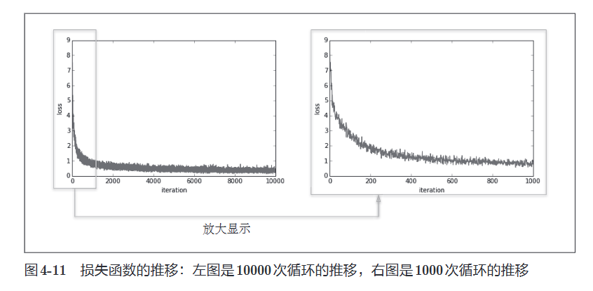</p>
<p>从这个图可以发现，随着学习的进行，损失函数的值在不断减小。这表示神经网络通过反复学习，正在逐渐向最优参数靠近。</p>
<h3 id="基于测试数据的评价">基于测试数据的评价</h3>
<p>基于图 4-11 呈现的结果，我们确认了通过反复学习可以使损失函数的值逐渐减小这一事实。不过这个损失函数的值，严格地说是“对训练数据的某个 mini-batch 的损失函数”的值。训练数据的损失函数值减小，虽说是神经网络的学习正常进行的一个信号，但光看这个结果还不能说明该神经网络在其它数据集上也一定能有同等程度的表型。</p>
<p>神经网络的学习中，必须确认是否能够正确识别训练数据以外的其他数据，即确认是否会发生<strong>过拟合</strong>。</p>
<p>神经网络学习的最初目标是掌握泛化能力，因此，要评价神经网络的泛化能力，就必须使用不包含在训练数据中的数据。下面的代码在进行学习的过程中，会定期地对训练数据和测试数据记录识别精度。这里，每经过一个 <strong>epoch</strong> （epoch是一个单位，表示学习中所有训练数据均被使用过），我们都会记录下训练数据和测试数据的识别精度。</p>
<p><strong>epoch</strong> 举例：对于1万笔训练数据，用大小为 100笔数据的 mini-batch 进行学习时，重复随机梯度下降法 100 次，所有训练数据就都被“看过”。此时 100 次就是一个 epoch 。实际上，一般做法时先将训练数据随机打乱，然后按指定的批次大小，按序生成 mini-batch 。这样每个 mini-batch 均有一个索引号，比如 0,1,2,…,99 ，然后用索引号可以遍历所有的 mini-batch ，这里遍历一次所有数据，就称为一个 epoch 。请注意，本书中的 mini-batch 每次都是随机选择的，所以不一定每个数据都会被“看到”。</p>
<p>因此，这里我们每经过一个 epoch ，就对所有的训练数据和测试数据计算识别精度，并记录结果。之所以要计算每一个 epoch 的识别精度，是因为如果在每一次重复随机梯度下降法中均计算识别精度，会花费太多时间，而且也没有必要那么频繁地记录识别精度（只要从大方向上大致把握识别精度的变化就可以了）。因此，我们才会每经过一个 epoch 就记录一次训练数据的识别精度。</p>
<p>把上面的代码中得到的结果用图表示，如下图所示，这说明，随着 epoch 的前进，我们发现使用训练数据和测试数据评价的识别精度都提高了，并且<strong>二者基本没有差异，这说明这次的学习中没有发生过拟合的现象</strong>（反过来说，如果训练数据和测试数据的识别精度差别很大，那就是存在过拟合了）。</p>
<p>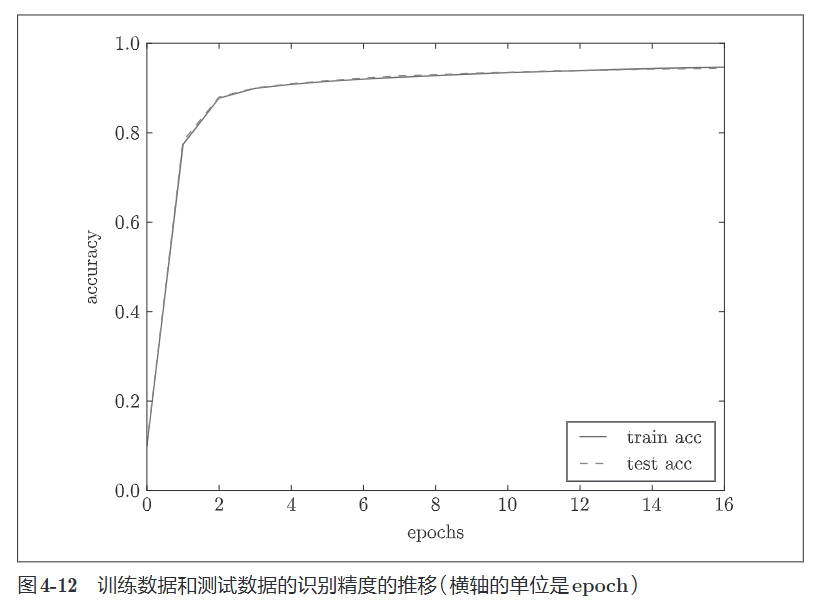</p>
<h1>第5章 误差反向传播法</h1>
<p>上一章中介绍了通过数值微分计算神经网络的权重参数的梯度（严格来说，是损失函数关于权重参数的梯度）。数值微分虽然简单，也容易实现，但缺点是计算上比较费时间。本章我们将学习一个能够高效计算权重参数的梯度的方法 —— 误差反向传播法。</p>
<p>要正确理解误差反向传播法，有两种方法：一种是基于数学式；另一种是基于<strong>计算图</strong>（computational graph）。前者是比较常用的方法，因为数学式严密且简洁，但是一上来就围绕数学式进行探讨，会忽略一些根本的东西，止步于式子的罗列。因此，本章希望通过计算图，可以直观地理解误差反向传播法。</p>
<h2 id="5-1-计算图">5.1 计算图</h2>
<p>计算图将计算过程用图形表示出来。这里说的图形是数据结构图，通过多个节点和边表示（连接节点的直线称为“边”）。为了让大家熟悉计算图，本节先用计算图解决一些简单的问题，然后逐步深入。</p>
<h3 id="用计算图求解">用计算图求解</h3>
<p>现在，我们用计算图解决简单问题。</p>
<blockquote>
<p>问题1：太郎在超市买了2个100日元一个的苹果，消费税是10%，请计算支付金额。</p>
</blockquote>
<p>计算图通过节点和箭头表示计算过程，节点用⚪表示，⚪中式计算的内容。将计算的中间结果写在箭头的上方，表示各个节点的计算结果从左向右传递。用计算图解问题1，求解过程如下图所示</p>
<p>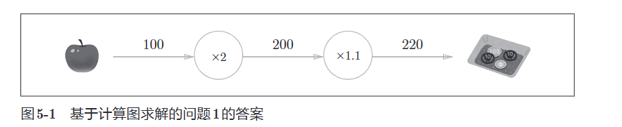</p>
<p>如图所示，开始时，苹果的100日元流到 “×2” 节点，变成 200 日元，然后传递给下一个节点。接着，这个200日元流向“×1.1”节点，变成220日元。因此，最终答案是220日元。</p>
<p>虽然图中的  “×2”  “×1.1” 等作为一个运算整体用⚪括起来了，不过只用⚪表示乘法运算“×”也是可行的。此时，如图所示，可以将“2”和“1.1”分别作为变量“苹果的个数”和“消费税”标记在⚪外面。</p>
<p>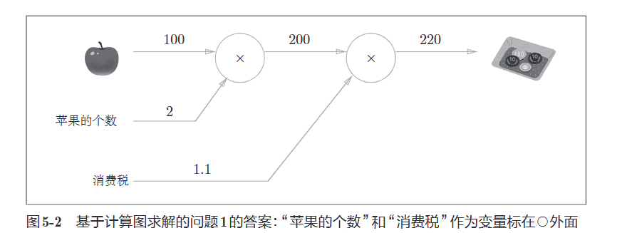</p>
<p>再看下一题</p>
<blockquote>
<p>问题2： 太郎在超市买了2个苹果、3个橘子。其中，苹果每个100日元，<br>
橘子每个150日元。消费税是10%，请计算支付金额。</p>
</blockquote>
<p>同问题1，我们用计算图来求解，如下图所示</p>
<p>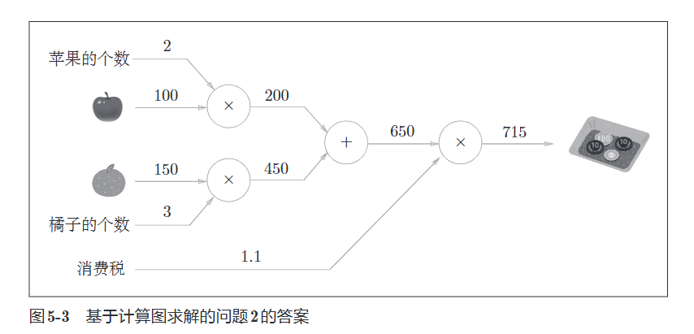</p>
<p>这个问题中新增了加法节点 “+” ，用于合计苹果和橘子的金额。构建了计算图后，从左向右进行计算。就像电路中的电流流动一样，计算结果从左向右传递。到达最右边的计算结果后，计算过程就结束了。</p>
<p>综上，用计算图解题的情况下，需要按如下流程进行</p>
<ol>
<li>构建计算图</li>
<li>在计算图上，从左向右进行计算</li>
</ol>
<p>这里的第2步“从左向右进行计算”是一种正方向上的传播，简称为<strong>正向传播</strong> (forward propagation)。正向传播是从计算图出发点到结束点的传播。既然有正向传播这个名称， 当然也可以考虑反向的传播，即<strong>反向传播</strong>（backward propagation）。</p>
<h3 id="局部计算">局部计算</h3>
<p>计算图的特征是可以通过传递“局部计算”获得最终结果。“局部”这个词的意思是“与自己相关的某个小范围”。局部计算是指，无论全局发生了什么，都能只根据自己相关的信息输出接下来的结果。</p>
<p>我们用一个具体的例子来说明局部计算。比如，在超市买了2个苹果和其他很多东西。此时，可以画出下图所示的计算图。</p>
<p>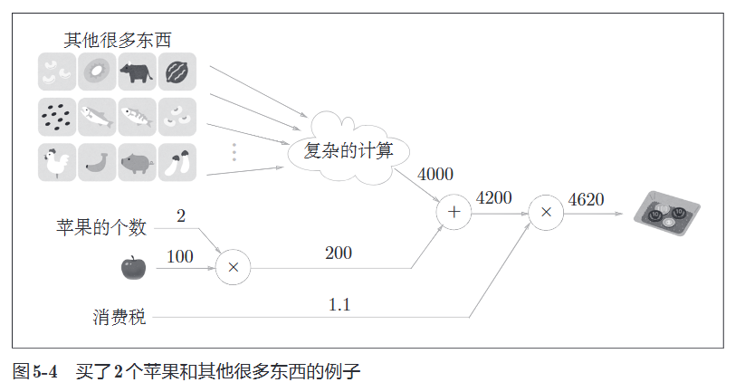</p>
<p>如图所示，假设（经过复杂的计算）购买的其他很多东西总共花费 4000 日元。这里的重点是，各个节点处的计算都是局部计算。这意味着，例如苹果和其他很多东西的求和运算，并不关心 4000 这个数字是如何计算而来的，只要把两个数字相加就可以了。换言之，各个节点只需进行与自己有关的计算（这里是对两个数字进行加法运算），不用考虑全局。</p>
<p>综上，计算图可以集中精力于局部计算。无论全局计算有多么复杂，各个步骤要做的就是对象节点的局部计算。虽然局部计算非常简单，但是通过传递它的计算结果，可以获得全局的复杂计算的结果。</p>
<p>比如，组装汽车是一个复杂的工作，通过需要进行“流水线”作业。每个工人（机器）所承担的都是被简化了的工作，这个工作的成果会传递给下一个工人，直至汽车组装完成。计算图将复杂的计算分隔成简单的局部计算，和流水线作业一样，将局部计算的结果传递给下一个节点。在复杂的计算分解成简单的计算这一点上与汽车的组装有相似之处。</p>
<h3 id="为何用计算图解题">为何用计算图解题</h3>
<p>前面我们用计算图解答了两个问题，那么计算图到底有什么优点呢？一个优点就在于前面所说的局部计算。无论全局是多么复杂的计算，都可以通过局部计算使各个节点致力于简单的计算，从而简化问题。另一个优点是，利用计算图可以将中间的计算结果全部保存起来。但是只有这些理由可能还无法令人信服。实际上，使用计算图最大的原因是，可以通过反向传播高效计算导数。</p>
<p>在介绍计算图的反向传播时，我们再来思考一下问题1。问题1中，我们计算了购买2个苹果时加上消费税最终需要支付的金额。这里，假设我们想知道苹果价格的上涨会在多大程度上影响最终的支付金额，即求“支付金额关于苹果的价格的导数”。设苹果的价格为  ，支付金额为  ，求相当于求  。这个导数的值表示当苹果的价格稍微上涨时，支付金额会增加多少。</p>
<p>如前所述，“支付金额关于苹果的价格的导数”的值可以通过计算图的反向传播求出来。先来看一下结果，如下图所示，可以通过计算图的反向传播求导数。</p>
<p>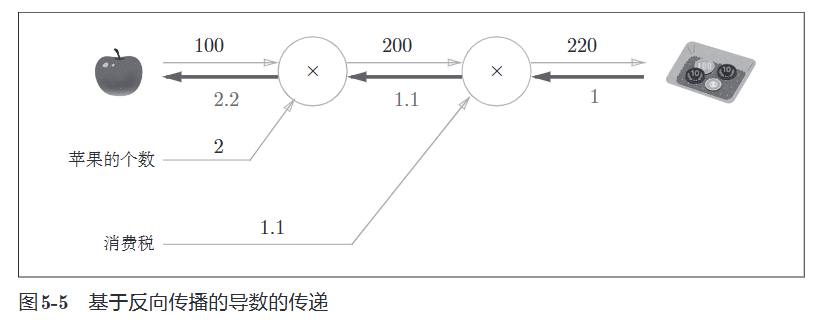</p>
<p>如图所示，反向传播使用与正方向相反的箭头（粗线）表示。反向传播传递“局部导数”，将导数的值写在箭头的下方。在本例中，反向传播从右到左传递导数的值（1 → 1.1 → 2.2）。从这个结果中，“支付金额关于苹果的价格的导数”的值是 2.2 。这意味着，如果苹果的价格上涨1日元，最终的支付金额会增加 2.2 日元（严格地说，如果苹果的价格增加某个微小值，则最终的支付金额将增加那个微小值的2.2倍）。</p>
<p>这里只求了关于苹果的价格的导数，不过“支付金额关于消费税的导数”，“支付金额关于苹果的个数的导数”等也都可以用同样的方式算出来。并且，计算中途求得的导数的结果（中间传递的导数）可以被共享，从而可以高效地计算多个导数。综上，计算图的优点是，可以通过正向传播和反向传播高效地计算各个变量的导数值。</p>
<h2 id="5-2-链式法则">5.2 链式法则</h2>
<p>前面介绍的计算图的正向传播将计算结果正向传递，其计算过程是我们日常接触的计算过程，所以感觉上可能比较自然。而反向传播将局部导数向正方向的反方向（从右向左）传递，一开始可能会让人感到困惑。传递这个局部导数的原理，是基于<strong>链式法则</strong> (chain rule) 的。下面将介绍链式法则，以及它是如何对应计算图上的反向传播的。</p>
<h3 id="计算图的方向传播">计算图的方向传播</h3>
<p>话不多说，让我们先来看一个使用计算图的反向传播的例子。假设存在  的计算，这个计算的反向传播如下图所示。</p>
<p>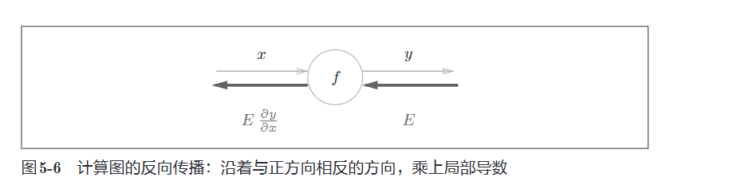</p>
<p>如图所示，反向传播的计算顺序是，将信号E乘以节点的局部导数 (  ) ，然后将结果传递给下一个节点。这里所说的局部导数是指正向传播中  的导数，也就是 y 关于 x 的导数，例如   ，则局部导数为   。把这个局部导数乘以上游传递过来的值（本例中为 E ）。然后传递给前面的节点。</p>
<p>这就是反向传播的计算顺序。通过这样的计算，可以高效地求出导数的值，这是反向传播的要点。那么这是如何实现的呢？我们可以从链式法则的原理进行解释。下面我们就来介绍链式法则。</p>
<h3 id="什么是链式法则">什么是链式法则</h3>
<p>介绍链式法则时，我们需要先从<strong>复合函数</strong>说起。复合函数是由多个函数构成的函数。比如  是由下面的两个式子构成的</p>
<p style=""></p><p>链式法则是关于复合函数的导数的性质，定义如下。</p>
<blockquote>
<p>如果某个函数由复合函数表示，则该复合函数的导数可以用构成复合函数的各个函数的导数的乘积表示。</p>
</blockquote>
<p>这就是链式法则的原理，乍一看可能比较难理解，但实际上它是一个非常简单的性质。数学式如下</p>
<p style=""></p><p>式子中的  正好可以像下面这样“互相抵消”，所以记起来很简单。</p>
<p>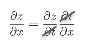</p>
<p>现在我们使用链式法则，试着求  , 为此，我们要先求局部导数。</p>
<p style=""></p><p>然后我们由导数的乘积计算出来 </p>
<p style=""></p><h3 id="链式法则和计算图">链式法则和计算图</h3>
<p>现在我们尝试用链式法则的计算用计算图表示出来。如果用 “**2” 表示平方运行的话，则计算图如下所示</p>
<p>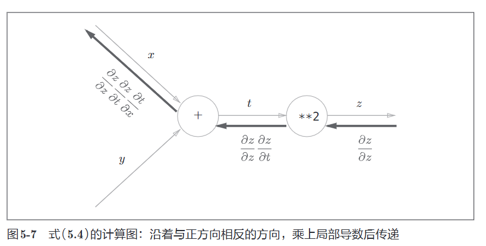</p>
<p>如图所示，计算图的反向传播从右到左传播信号。反向传播的计算顺序是，先将节点的输入信号乘以节点的局部导数（偏导数），然后再传递给下一个节点。比如，反向传播是，“**2” 节点的输入是   ，将其乘以局部导数   (因为正向传播时输入是 t ，输出是 z ，所以这个节点的局部导数是    ) ，然后传递给下一个节点。另外，图中最开始的信号     在前面的数学式中没有出现，这是因为   ，所以在刚才的式子中被省略了。</p>
<p>图中需要注意的是最左边的反向传播的结果。根据链式法则，  ，对应 “z 关于 x 的导数”。也就是说，反向传播是基于链式法则的。</p>
<p>将上面式子的结果带入到图中，结果如下图所示，得到   的结果为  。</p>
<p>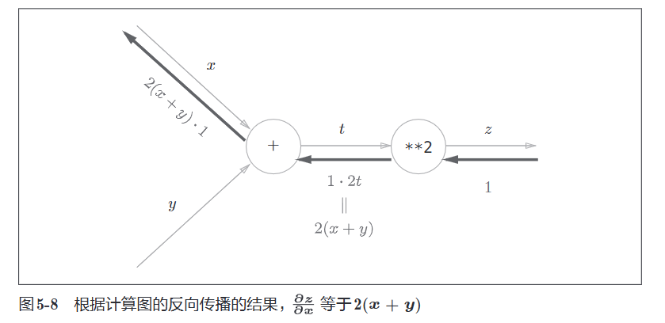</p>
<h2 id="5-3-反向传播">5.3 反向传播</h2>
<p>上一节介绍了计算图的反向传播是基于链式法则成立的。本节将以 “+” 和 “×” 等运算为例，介绍反向传播的结构。</p>
<h3 id="加法节点的反向传播">加法节点的反向传播</h3>
<p>首先来考虑加法节点的反向传播。这里以  为对象，观察它的反向传播。  的导数可由下式（解析性地）计算出来</p>
<p style=""></p><p>可以看到，两个变量的偏导数均为1。因此，用计算图表示的话，如下图所示。加法节点的反向传播只乘以1，所以输入的值会原封不动地流向下一个节点。</p>
<p>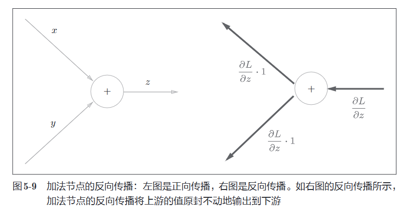</p>
<p>另外，本例中把上游传过来的导数的值设为  。这是因为，如图所示，我们假定了一个一个最终输出值为  的大型计算图。 的计算位于这个大型计算图的某个地方，从上游会传来   的值，并向下游传递   和   。</p>
<p>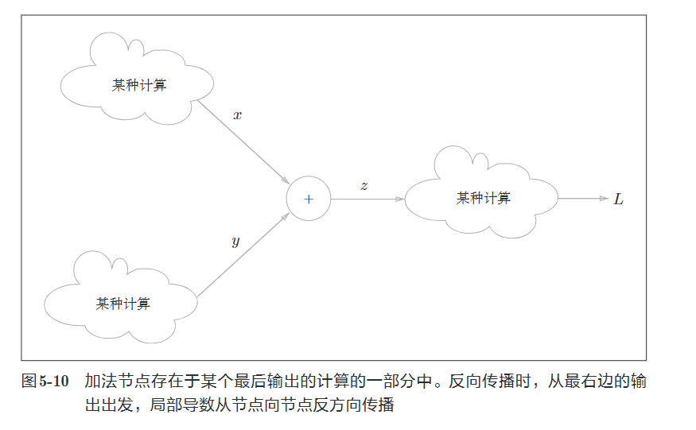</p>
<p>现在来看一个加法的反向传播的具体例子。假设有 “10+5=15”这一计算，反向传播时，从上游会传来值 1.3 。用计算图来表示的话，如下图所示</p>
<p>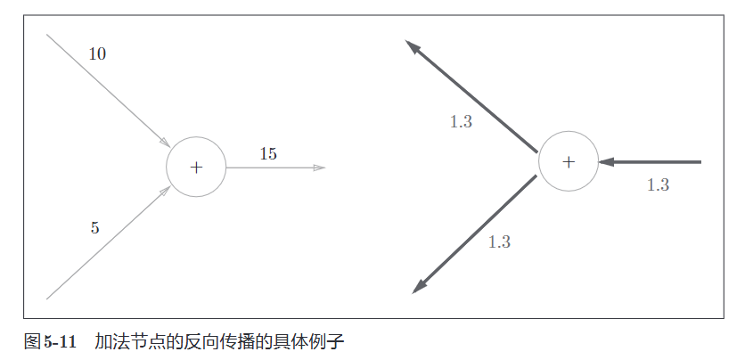</p>
<p>因为加法节点的反向传播只是将输入信号输出到下一个节点，所以如图所示，反向传播将 1.3 向下一个节点传递。</p>
<h3 id="乘法节点的反向传播">乘法节点的反向传播</h3>
<p>接下来，我们看一下乘法节点的反向传播。这里我们考虑  。这个式子的导数用下式表示</p>
<p style=""></p><p>因此我们可以得到下面的计算图和例子。乘法的反向传播会将上游的值乘以正向传播时的输入信号的“翻转值”后传递给下游。翻转值表示一种翻转关系，输入是  ，反向传播则是  。</p>
<p>在具体例子中，假设有 “10 × 5 = 50” 这一计算，反向传播时，从上游会传来值 1.3 ，此时按照反向传播，所以各自得到 “1.3×5=6.5，1.3×10=13” 计算。由于实现乘法节点的反向传播需要正向传播时的输入信号值，因此需要保存正向传播时的输入信号。</p>
<p>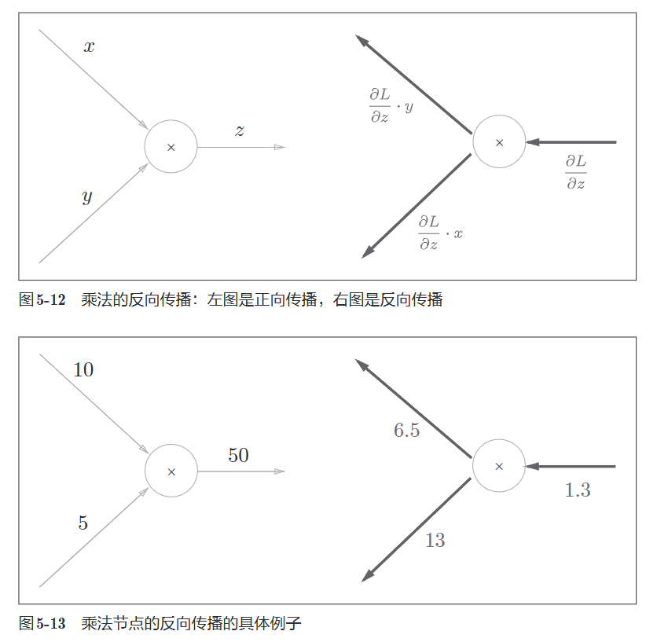</p>
<h3 id="苹果的例子">苹果的例子</h3>
<p>再来思考一下一开始买苹果的例子，这里要解的问题是苹果的价格、苹果的个数、消费税这3个变量各自如何影响最终支付的金额。这个问题相当于求“支付金额关于苹果的价格的导数”，“支付金额关于苹果的个数的导数” “支付金额关于消费税的导数”。用计算图的反向传播来解的话，求解过程如下所示</p>
<p>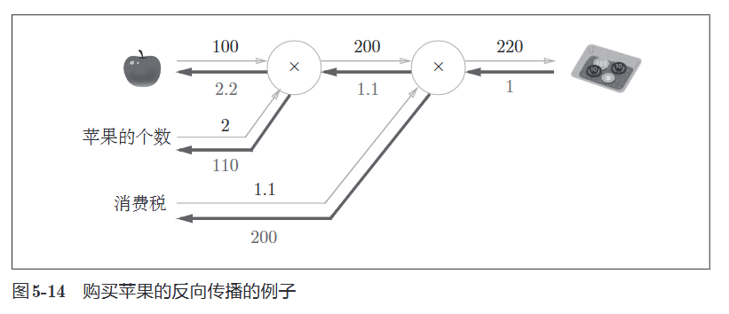</p>
<p>如前所述，乘法节点的反向传播会见输入信号翻转后传给下游。因此从上图的结果可知，苹果的价格的导数是 2.2 ，苹果的个数的导数是 110，消费税的导数是 200 。这可以解释为，如果消费税和苹果的价格增加相同的值，则消费税将对最终价格产生 200 倍的影响，苹果的价格将产生 2.2 倍大小的影响。不过，因为这个例子中消费税和苹果的价格的量纲不同，所以才形成了这样的结果（消费税的 1 是100% ，苹果的价格的1是1日元）。</p>
<h2 id="5-4-简单层的实现">5.4 简单层的实现</h2>
<p>本节将用 Python 实现前面的购买苹果的例子。这里，我们将要实现的计算图的乘法节点成为“乘法层”（MulLayer），加法节点称为“加法层”（AddLayer）。这里的“层”在神经网络中是功能的单位，如 sigmoid 函数，负责矩阵乘积的 Affine 等，都以层为单位进行实现。</p>
<h3 id="乘法层的实现">乘法层的实现</h3>
<p>层的实现中有两个共通的方法（接口）<code>forward()</code> 和 <code>backward()</code> 。<code>forward()</code> 对应正向传播，<code>backward()</code> 对应反向传播。</p>
<p>现在来实现乘法层。乘法层作为 MulLayer 类，其实现过程如下（问了 DS ，一般而言，值固定不变的变量放在 <code>__init__()</code>函数的输入参数中，值可能改变的参数则放在 <code>__init__()</code>函数的正文中，所有需要存储的属性均要在 <code>__init__()</code>函数中定义 ）</p>
<figure class="highlight python"><table><tr><td class="gutter"><pre><span class="line">1</span><br><span class="line">2</span><br><span class="line">3</span><br><span class="line">4</span><br><span class="line">5</span><br><span class="line">6</span><br><span class="line">7</span><br><span class="line">8</span><br><span class="line">9</span><br><span class="line">10</span><br><span class="line">11</span><br><span class="line">12</span><br><span class="line">13</span><br><span class="line">14</span><br><span class="line">15</span><br><span class="line">16</span><br><span class="line">17</span><br></pre></td><td class="code"><pre><span class="line"><span class="keyword">class</span> <span class="title class_">MulLayer</span>:</span><br><span class="line">    <span class="keyword">def</span> <span class="title function_">__init__</span>(<span class="params">self</span>):</span><br><span class="line">        self.x = <span class="literal">None</span></span><br><span class="line">        self.y = <span class="literal">None</span></span><br><span class="line"></span><br><span class="line">    <span class="keyword">def</span> <span class="title function_">forward</span>(<span class="params">self, x, y</span>):</span><br><span class="line">        self.x = x</span><br><span class="line">        self.y = y                </span><br><span class="line">        out = x * y</span><br><span class="line"></span><br><span class="line">        <span class="keyword">return</span> out</span><br><span class="line"></span><br><span class="line">    <span class="keyword">def</span> <span class="title function_">backward</span>(<span class="params">self, dout</span>):</span><br><span class="line">        dx = dout * self.y</span><br><span class="line">        dy = dout * self.x</span><br><span class="line"></span><br><span class="line">        <span class="keyword">return</span> dx, dy</span><br></pre></td></tr></table></figure>
<p><code>__init__()</code> 会初始化实例变量 x 和 y ，它们用于保存正向传播时的输入值。<code>froward()</code> 接收 x 和 y 两个参数，将它们相乘后输出。<code>backward()</code> 将上游传来的导数（<code>dout</code>）乘以正向传播的翻转值，然后传给下游。</p>
<p>上面就是 MulLayer 的实现。现在我们使用 MulLayer  实现前面的购买评估的例子（2个苹果和消费税）。上一节中我们使用计算图的正向传播和反向传播，如下图。</p>
<p></p>
<p>使用这个乘法层的话，那个例子的正向传播可以像下面这样实现。</p>
<figure class="highlight python"><table><tr><td class="gutter"><pre><span class="line">1</span><br><span class="line">2</span><br><span class="line">3</span><br><span class="line">4</span><br><span class="line">5</span><br><span class="line">6</span><br><span class="line">7</span><br><span class="line">8</span><br><span class="line">9</span><br><span class="line">10</span><br><span class="line">11</span><br><span class="line">12</span><br><span class="line">13</span><br></pre></td><td class="code"><pre><span class="line">apple = <span class="number">100</span></span><br><span class="line">apple_num = <span class="number">2</span></span><br><span class="line">tax = <span class="number">1.1</span></span><br><span class="line"></span><br><span class="line"><span class="comment"># layer</span></span><br><span class="line">mul_apple_layer = MulLayer()</span><br><span class="line">mul_tax_layer = MulLayer()</span><br><span class="line"></span><br><span class="line"><span class="comment"># forward</span></span><br><span class="line">apple_price = mul_apple_layer.forward(apple, apple_num)</span><br><span class="line">price = mul_tax_layer.forward(apple_price, tax)</span><br><span class="line"></span><br><span class="line"><span class="built_in">print</span>(price)</span><br></pre></td></tr></table></figure>
<figure class="highlight python"><table><tr><td class="gutter"><pre><span class="line">1</span><br></pre></td><td class="code"><pre><span class="line"><span class="number">220.00000000000003</span></span><br></pre></td></tr></table></figure>
<p>关于各个变量的导数可由 backward() 求出。</p>
<figure class="highlight python"><table><tr><td class="gutter"><pre><span class="line">1</span><br><span class="line">2</span><br><span class="line">3</span><br><span class="line">4</span><br><span class="line">5</span><br></pre></td><td class="code"><pre><span class="line"><span class="comment"># 反向传播</span></span><br><span class="line">dprice=<span class="number">1</span></span><br><span class="line">dapple_price, dtax = mul_tax_layer.backward(dprice)</span><br><span class="line">dapple, dapple_num = mul_apple_layer.backward(dapple_price)</span><br><span class="line"><span class="built_in">print</span>(dapple, dapple_num, dtax) <span class="comment"># 2.2 110 20</span></span><br></pre></td></tr></table></figure>
<p>这里，这里调用 backward() 的顺序与调用 forward() 的顺序相反。此外，要注意 backward()  的参数中需要输入“关于正向传播时的输出变量的导数”。比如，<code>mul_apple_layer()</code> 乘法层在正向传播时会输出 apple_price ， 在反向传播时，则会将 apple_price 的导数 dapple_price 设为参数。</p>
<h3 id="加法层的实现">加法层的实现</h3>
<p>类似地，我们实现加法节点的加法层，如下所示</p>
<figure class="highlight python"><table><tr><td class="gutter"><pre><span class="line">1</span><br><span class="line">2</span><br><span class="line">3</span><br><span class="line">4</span><br><span class="line">5</span><br><span class="line">6</span><br><span class="line">7</span><br><span class="line">8</span><br><span class="line">9</span><br><span class="line">10</span><br><span class="line">11</span><br><span class="line">12</span><br><span class="line">13</span><br><span class="line">14</span><br></pre></td><td class="code"><pre><span class="line"><span class="keyword">class</span> <span class="title class_">AddLayer</span>:</span><br><span class="line">    <span class="keyword">def</span> <span class="title function_">__init__</span>(<span class="params">self</span>):</span><br><span class="line">        <span class="keyword">pass</span></span><br><span class="line"></span><br><span class="line">    <span class="keyword">def</span> <span class="title function_">forward</span>(<span class="params">self, x, y</span>):</span><br><span class="line">        out = x + y</span><br><span class="line"></span><br><span class="line">        <span class="keyword">return</span> out</span><br><span class="line"></span><br><span class="line">    <span class="keyword">def</span> <span class="title function_">backward</span>(<span class="params">self, dout</span>):</span><br><span class="line">        dx = dout * <span class="number">1</span></span><br><span class="line">        dy = dout * <span class="number">1</span></span><br><span class="line"></span><br><span class="line">        <span class="keyword">return</span> dx, dy</span><br></pre></td></tr></table></figure>
<p>加法层不需要特意进行初始化，所以 <code>__init__()</code> 中什么也不运行（因为不需要保留 x 和 y，反向传播用不上）。</p>
<p>现在我们用加法层和乘法层，实现上面购买2个苹果和3个橘子的例子。</p>
<p>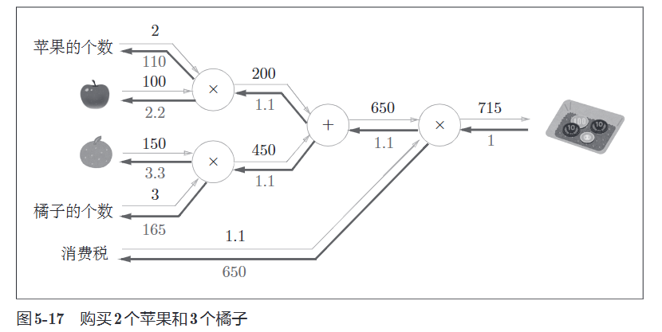</p>
<p>实现代码如下</p>
<figure class="highlight python"><table><tr><td class="gutter"><pre><span class="line">1</span><br><span class="line">2</span><br><span class="line">3</span><br><span class="line">4</span><br><span class="line">5</span><br><span class="line">6</span><br><span class="line">7</span><br><span class="line">8</span><br><span class="line">9</span><br><span class="line">10</span><br><span class="line">11</span><br><span class="line">12</span><br><span class="line">13</span><br><span class="line">14</span><br><span class="line">15</span><br><span class="line">16</span><br><span class="line">17</span><br><span class="line">18</span><br><span class="line">19</span><br><span class="line">20</span><br><span class="line">21</span><br><span class="line">22</span><br><span class="line">23</span><br><span class="line">24</span><br><span class="line">25</span><br><span class="line">26</span><br><span class="line">27</span><br><span class="line">28</span><br><span class="line">29</span><br><span class="line">30</span><br><span class="line">31</span><br><span class="line">32</span><br><span class="line">33</span><br><span class="line">34</span><br></pre></td><td class="code"><pre><span class="line"><span class="comment"># coding: utf-8</span></span><br><span class="line"><span class="keyword">from</span> layer_naive <span class="keyword">import</span> *</span><br><span class="line"></span><br><span class="line">apple = <span class="number">100</span></span><br><span class="line">apple_num = <span class="number">2</span></span><br><span class="line">orange = <span class="number">150</span></span><br><span class="line">orange_num = <span class="number">3</span></span><br><span class="line">tax = <span class="number">1.1</span></span><br><span class="line"></span><br><span class="line"><span class="comment"># layer</span></span><br><span class="line">mul_apple_layer = MulLayer()</span><br><span class="line">mul_orange_layer = MulLayer()</span><br><span class="line">add_apple_orange_layer = AddLayer()</span><br><span class="line">mul_tax_layer = MulLayer()</span><br><span class="line"></span><br><span class="line"><span class="comment"># forward</span></span><br><span class="line">apple_price = mul_apple_layer.forward(apple, apple_num)  <span class="comment"># (1)</span></span><br><span class="line">orange_price = mul_orange_layer.forward(orange, orange_num)  <span class="comment"># (2)</span></span><br><span class="line">all_price = add_apple_orange_layer.forward(apple_price, orange_price)  <span class="comment"># (3)</span></span><br><span class="line">price = mul_tax_layer.forward(all_price, tax)  <span class="comment"># (4)</span></span><br><span class="line"></span><br><span class="line"><span class="comment"># backward</span></span><br><span class="line">dprice = <span class="number">1</span></span><br><span class="line">dall_price, dtax = mul_tax_layer.backward(dprice)  <span class="comment"># (4)</span></span><br><span class="line">dapple_price, dorange_price = add_apple_orange_layer.backward(dall_price)  <span class="comment"># (3)</span></span><br><span class="line">dorange, dorange_num = mul_orange_layer.backward(dorange_price)  <span class="comment"># (2)</span></span><br><span class="line">dapple, dapple_num = mul_apple_layer.backward(dapple_price)  <span class="comment"># (1)</span></span><br><span class="line"></span><br><span class="line"><span class="built_in">print</span>(<span class="string">&quot;price:&quot;</span>, <span class="built_in">int</span>(price))</span><br><span class="line"><span class="built_in">print</span>(<span class="string">&quot;dApple:&quot;</span>, dapple)</span><br><span class="line"><span class="built_in">print</span>(<span class="string">&quot;dApple_num:&quot;</span>, <span class="built_in">int</span>(dapple_num))</span><br><span class="line"><span class="built_in">print</span>(<span class="string">&quot;dOrange:&quot;</span>, dorange)</span><br><span class="line"><span class="built_in">print</span>(<span class="string">&quot;dOrange_num:&quot;</span>, <span class="built_in">int</span>(dorange_num))</span><br><span class="line"><span class="built_in">print</span>(<span class="string">&quot;dTax:&quot;</span>, dtax)</span><br></pre></td></tr></table></figure>
<p>这个实现稍微有点参，但是每一条命令都很简单。首先，生成必要的层，以合适的顺序调用正向传播的 forward() 方法。然后，与正向传播相反的顺序调用反向传播的 backward() 方法，就可以求出想要的导数。</p>
<p>综上，计算图中层的实现（这里是加法层和乘法层）非常简单，使用这些层可以进行复杂的导数计算。下面，我们来实现神经网络中使用的层。</p>
<h2 id="5-5-激活函数层的实现">5.5 激活函数层的实现</h2>
<p>现在，我们将计算图的思路应用到神经网络中。这里，我们把构成神经网络的层实现一个类。先来实现激活函数的 ReLU 层和 Sigmoid 层。</p>
<h3 id="ReLU-层">ReLU 层</h3>
<p>激活函数 ReLU 函数，其式子如下</p>
<p style=""></p><p>其导数如下</p>
<p style=""></p><p>在这个式子中，如果正向传播的输入  大于0，则反向传播会将上游的值原封不动地传给下游。反过来，如果正向传播时的  小于等于0，则反向传播中传给下游的信号将停在此处。用计算图表示的话，如下图所示。</p>
<p>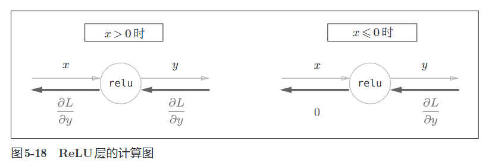</p>
<p>现在我们来实现 ReLU 层，在神经网络的层的实现中，一般假定 forward() 和 backward() 的参数是 NumPy 数组。</p>
<figure class="highlight python"><table><tr><td class="gutter"><pre><span class="line">1</span><br><span class="line">2</span><br><span class="line">3</span><br><span class="line">4</span><br><span class="line">5</span><br><span class="line">6</span><br><span class="line">7</span><br><span class="line">8</span><br><span class="line">9</span><br><span class="line">10</span><br><span class="line">11</span><br><span class="line">12</span><br><span class="line">13</span><br><span class="line">14</span><br><span class="line">15</span><br><span class="line">16</span><br></pre></td><td class="code"><pre><span class="line"><span class="keyword">class</span> <span class="title class_">Relu</span>:</span><br><span class="line">    <span class="keyword">def</span> <span class="title function_">__init__</span>(<span class="params">self</span>):</span><br><span class="line">        self.mask = <span class="literal">None</span></span><br><span class="line"></span><br><span class="line">    <span class="keyword">def</span> <span class="title function_">forward</span>(<span class="params">self, x</span>):</span><br><span class="line">        self.mask = (x &lt;= <span class="number">0</span>)</span><br><span class="line">        out = x.copy()</span><br><span class="line">        out[self.mask] = <span class="number">0</span></span><br><span class="line"></span><br><span class="line">        <span class="keyword">return</span> out</span><br><span class="line"></span><br><span class="line">    <span class="keyword">def</span> <span class="title function_">backward</span>(<span class="params">self, dout</span>):</span><br><span class="line">        dout[self.mask] = <span class="number">0</span></span><br><span class="line">        dx = dout</span><br><span class="line"></span><br><span class="line">        <span class="keyword">return</span> dx</span><br></pre></td></tr></table></figure>
<p>Relu 类有实例变量 mask 。这个变量 mask 是由 True/False 构成的 NumPy 数组，它把正向传播时的输入 x 的变量中小于等于0的地方保存为 True ，其他地方保存为 False 。如下例所示，mask 变量保存了由 True/False 构成的 NumPy 数组。</p>
<p>Relu 层的作用就像电路中的开关一样。正向传播时，有电流通过的话，就将开关设为 ON ；没有电流通过的话，就将开关设为 OFF。反向传播时，开关为 ON 的时候，电流会直接通过；开关为 OFF 的话，则不会有电流通过。</p>
<h3 id="Sigmoid-层">Sigmoid 层</h3>
<p>接下来，我们来实现 sigmoid 函数。sigmoid 函数由下式表示：</p>
<p style=""></p><p>用计算图来表示的话，如下图所示</p>
<p>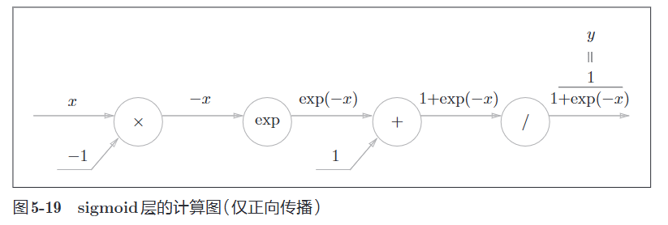</p>
<p>这里除了 “×” 和 “+” 节点外，还出现了新的 “exp” 和 “/” 节点。“exp” 节点会进行  的计算，“/” 节点会进行  的计算。</p>
<p>这里我们进行计算图的反向传播，如下图所示（具体步骤我省略了）</p>
<p>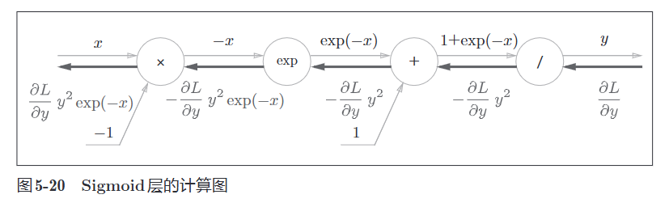</p>
<p>简化一下，就可以得到简洁版的 “sigmoid” 节点。</p>
<p></p>
<p>并且其反向传播公式可以进一步整理如下</p>
<p style=""></p><p>因此，其实 Sigmoid 的反向传播，只根据正向传播的输出就能计算出来。</p>
<p></p>
<p>现在，我们用 Python 实现 Sigmoid 层，如下，这里将正向传播时的输出值保存为实例变量 out 。</p>
<figure class="highlight python"><table><tr><td class="gutter"><pre><span class="line">1</span><br><span class="line">2</span><br><span class="line">3</span><br><span class="line">4</span><br><span class="line">5</span><br><span class="line">6</span><br><span class="line">7</span><br><span class="line">8</span><br><span class="line">9</span><br><span class="line">10</span><br><span class="line">11</span><br><span class="line">12</span><br><span class="line">13</span><br></pre></td><td class="code"><pre><span class="line"><span class="keyword">class</span> <span class="title class_">Sigmoid</span>:</span><br><span class="line">    <span class="keyword">def</span> <span class="title function_">__init__</span>(<span class="params">self</span>):</span><br><span class="line">        self.out = <span class="literal">None</span></span><br><span class="line"></span><br><span class="line">    <span class="keyword">def</span> <span class="title function_">forward</span>(<span class="params">self, x</span>):</span><br><span class="line">        out = sigmoid(x)</span><br><span class="line">        self.out = out</span><br><span class="line">        <span class="keyword">return</span> out</span><br><span class="line"></span><br><span class="line">    <span class="keyword">def</span> <span class="title function_">backward</span>(<span class="params">self, dout</span>):</span><br><span class="line">        dx = dout * (<span class="number">1.0</span> - self.out) * self.out</span><br><span class="line"></span><br><span class="line">        <span class="keyword">return</span> dx</span><br></pre></td></tr></table></figure>
<h2 id="5-6-Affine-Softmax-层的实现">5.6 Affine/Softmax 层的实现</h2>
<h3 id="Affine-层">Affine 层</h3>
<p>神经网络的正向传播中，为了计算矩阵的乘积运算。而这种  的计算在几何学领域被称为“仿射变换”（仿射变换包括一次线性变换和一次平移，分别对应着神经网络中的加权和加偏置运算），因此这里将进行仿射变换的处理实现为 “Affine层”。</p>
<p>采用计算图的方式描述如下图，不过这里各个节点传播的是矩阵。</p>
<p>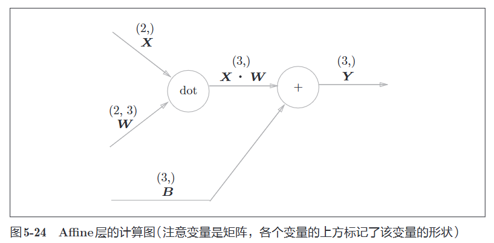</p>
<p>现在我们来考虑其反向传播。以矩阵为对象的反向传播，按矩阵的各个元素进行计算时，步骤和以标量为对象的计算图相同。实际写一下的话，可以得到下式（缺证明过程）</p>
<p style=""></p><p>这里式子中的 T 表示转置，举例如下</p>
<p style=""></p><p>现在，我们根据上面的式子，尝试写出计算图的反向传播，如下所示</p>
<p>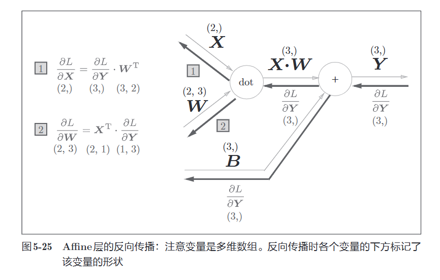</p>
<p>我们来看各个变量的形状。要注意， 和  形状相同， 和  形状相同。从下面的数学式可以明确地看出  和  形状相同。</p>
<p style=""></p><p>为什么要注意矩阵的形状呢？因为矩阵的乘积运算要求对应维度的元素个数保持一致。</p>
<h3 id="批版本的-Affine-层">批版本的 Affine 层</h3>
<p>前面介绍的 Affine 层的输入  是以单个数据为对象的。现在我们考虑  个数据一起进行正向传播的情况，也就是批版本的 Affine 层，如下图所示</p>
<p>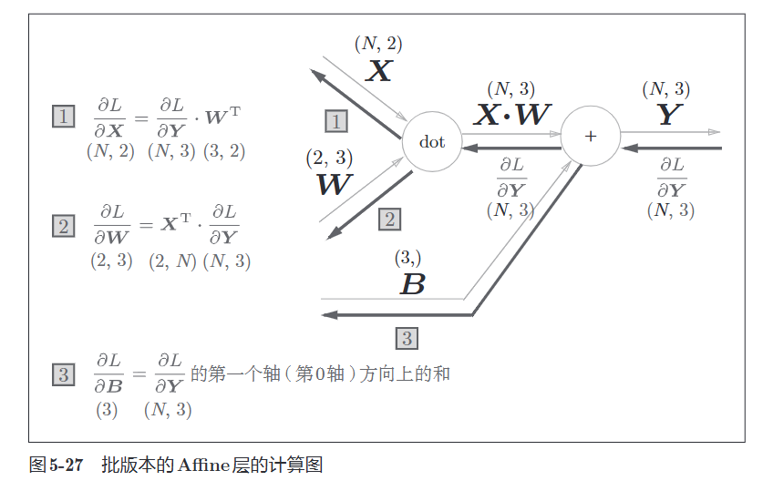</p>
<p>与刚刚不同的是，现在输入  的形状是  。之后就和前面一样，在计算图上进行单纯的矩阵计算。</p>
<p>加上偏置时，需要特别注意。正向传播时，偏置被加到  的各个数据上。比如， (数据为 2个)时，偏置会被分别加到这 2 个数据（各自的计算结果）上，具体的例子如下所示</p>
<figure class="highlight python"><table><tr><td class="gutter"><pre><span class="line">1</span><br><span class="line">2</span><br><span class="line">3</span><br><span class="line">4</span><br><span class="line">5</span><br></pre></td><td class="code"><pre><span class="line">X_dot_W = np.array([[<span class="number">0</span>, <span class="number">0</span>, <span class="number">0</span>], [<span class="number">10</span>, <span class="number">10</span>, <span class="number">10</span>]])</span><br><span class="line">B = np.array([<span class="number">1</span>, <span class="number">2</span>, <span class="number">3</span>])</span><br><span class="line"></span><br><span class="line">X_dot_W</span><br><span class="line">X_dot_W + B</span><br></pre></td></tr></table></figure>
<figure class="highlight python"><table><tr><td class="gutter"><pre><span class="line">1</span><br><span class="line">2</span><br><span class="line">3</span><br><span class="line">4</span><br><span class="line">5</span><br></pre></td><td class="code"><pre><span class="line">array([[ <span class="number">0</span>,  <span class="number">0</span>,  <span class="number">0</span>],</span><br><span class="line">       [<span class="number">10</span>, <span class="number">10</span>, <span class="number">10</span>]])</span><br><span class="line"></span><br><span class="line">array([[ <span class="number">1</span>,  <span class="number">2</span>,  <span class="number">3</span>],</span><br><span class="line">       [<span class="number">11</span>, <span class="number">12</span>, <span class="number">13</span>]])</span><br></pre></td></tr></table></figure>
<p>正向传播时，偏置会被加到每一个数据（第1个，第2个…）上。因此，反向传播时，各个数据的反向传播的值需要汇总为偏置的元素 (缺证明过程)。用代码表示如下</p>
<figure class="highlight python"><table><tr><td class="gutter"><pre><span class="line">1</span><br><span class="line">2</span><br><span class="line">3</span><br><span class="line">4</span><br><span class="line">5</span><br></pre></td><td class="code"><pre><span class="line">dY = np.array([[<span class="number">1</span>, <span class="number">2</span>, <span class="number">3</span>,], [<span class="number">4</span>, <span class="number">5</span>, <span class="number">6</span>]])</span><br><span class="line">dY</span><br><span class="line"></span><br><span class="line">dB = np.<span class="built_in">sum</span>(dY, axis=<span class="number">0</span>)</span><br><span class="line">dB</span><br></pre></td></tr></table></figure>
<figure class="highlight python"><table><tr><td class="gutter"><pre><span class="line">1</span><br><span class="line">2</span><br><span class="line">3</span><br><span class="line">4</span><br></pre></td><td class="code"><pre><span class="line">array([[<span class="number">1</span>, <span class="number">2</span>, <span class="number">3</span>],</span><br><span class="line">       [<span class="number">4</span>, <span class="number">5</span>, <span class="number">6</span>]])</span><br><span class="line"></span><br><span class="line">array([<span class="number">5</span>, <span class="number">7</span>, <span class="number">9</span>])</span><br></pre></td></tr></table></figure>
<p>这个例子中，假定数据有 2 个 （N=2）。偏置的反向传播会对这2个数据的导数按元素进行求和。因此这里使用了 <code>np.sum()</code> 对第0轴（以数据为单位的轴）方向上的元素进行求和。</p>
<p>综上所述，Affine 的实现如下所示。（common/layers.py 中的 Affine 的实现考虑了输入数据为张量的情况，即四维数据，与这里稍有差别）</p>
<figure class="highlight python"><table><tr><td class="gutter"><pre><span class="line">1</span><br><span class="line">2</span><br><span class="line">3</span><br><span class="line">4</span><br><span class="line">5</span><br><span class="line">6</span><br><span class="line">7</span><br><span class="line">8</span><br><span class="line">9</span><br><span class="line">10</span><br><span class="line">11</span><br><span class="line">12</span><br><span class="line">13</span><br><span class="line">14</span><br><span class="line">15</span><br><span class="line">16</span><br><span class="line">17</span><br><span class="line">18</span><br></pre></td><td class="code"><pre><span class="line"><span class="keyword">class</span> <span class="title class_">Affine</span>:</span><br><span class="line">    <span class="keyword">def</span> <span class="title function_">__init__</span>(<span class="params">self, W, b</span>):</span><br><span class="line">        self.W = W</span><br><span class="line">        self.b = b</span><br><span class="line">        self.x = <span class="literal">None</span></span><br><span class="line">        self.dW = <span class="literal">None</span></span><br><span class="line">        self.db = <span class="literal">None</span></span><br><span class="line">        </span><br><span class="line">    <span class="keyword">def</span> <span class="title function_">forward</span>(<span class="params">self, x</span>):</span><br><span class="line">        self.x = x</span><br><span class="line">        out = np.dot(x, self.W) + self.b</span><br><span class="line">        <span class="keyword">return</span> out</span><br><span class="line"></span><br><span class="line">    <span class="keyword">def</span> <span class="title function_">backward</span>(<span class="params">self, dout</span>):</span><br><span class="line">        dx = np.dot(dout, self.W.T)</span><br><span class="line">        self.dW = np.dot(self.x.T, dout)</span><br><span class="line">        self.db = np.<span class="built_in">sum</span>(dout, axis=<span class="number">0</span>)</span><br><span class="line">        <span class="keyword">return</span> dx</span><br></pre></td></tr></table></figure>
<h3 id="Softmax-with-Loss-层">Softmax-with-Loss 层</h3>
<p>最后介绍一下输出层的 softmax 函数。softmax 函数会将输入值正规化之后再输出。比如手写数字识别时，softmax 层的输出如下所示</p>
<p>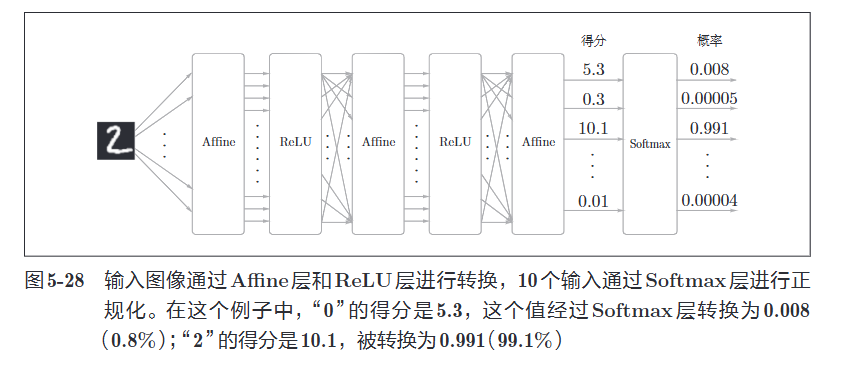</p>
<p>图中，softmax 层将输入值正规化（将输出值的和调整为1）之后再输出。另外，因为手写数字识别要进行10类分类，所以向 softmax 层的输入也有 10 个。</p>
<p>下面来实现 softmax 层，考虑到这里也包含作为损失函数的交叉熵误差，所以称为 “softmax-with-loss层”。softmax-with-loss 层的计算图如下所示</p>
<p>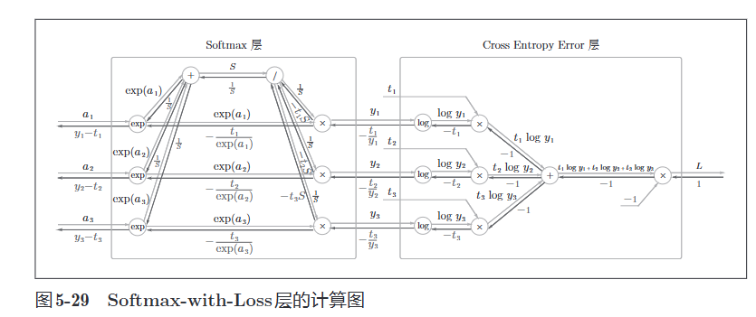</p>
<p>可以看到，softmax-with-loss 层有些复杂。这里只给出了最终结果，对 Softmax-with-Loss 层的导出过程感兴趣的读者，请参照附录A。</p>
<p>其计算图可以简化成下图</p>
<p>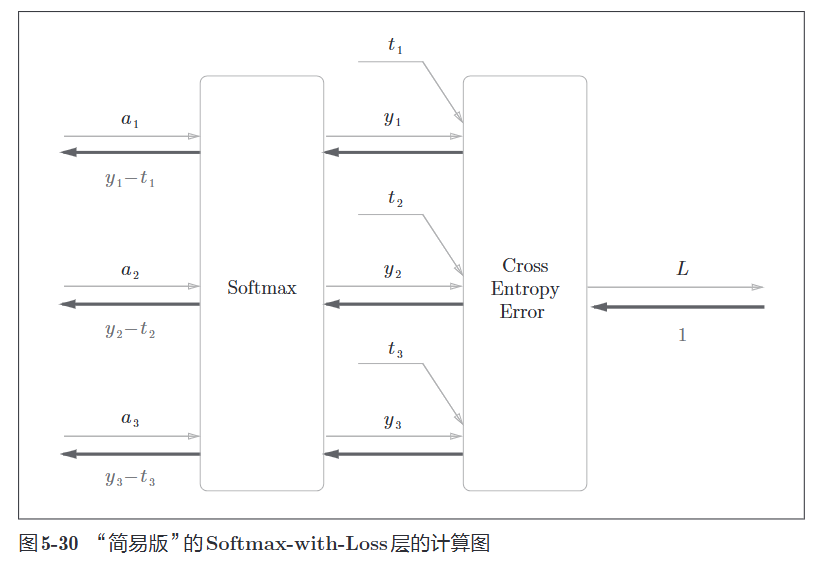</p>
<p>这里要注意的是反向传播的结果。softmax 层得到了  这样“漂亮”的结果，这是神经网络学习中的重要性质（实际上，这样“漂亮”的结果并不是偶然的，而是为了得到这样的结果，特意设计了交叉熵误差函数。回归问题中输出层中使用“恒等函数”，损失函数使用“平方和误差”，也是出于同样的理由）。</p>
<p>神经网路学习的目的就是通过调整权重参数，使神经网络的输出（softmax的输出）接近标签。因此，必须将神经网络的输出与训练标签的误差高效地传递给前面的层。刚刚的    正是 softmax 层的输出与教师标签的差，直截了当地表示了当前神经网路的输出与训练标签的误差。</p>
<p>如果神经网路的输出结果与训练标签相差很大，那么反向传播会传递一个很大的误差，因此下次学习会从这个误差中学习到较“大”的内容。反过来如果神经网路的输出结果与训练标签相差很小，那么反向传播会传递一个很小的误差，因此下次学习会从这个误差中学习到较“小”的内容。</p>
<p>现在来进行 softmax 层的实现，如下</p>
<figure class="highlight python"><table><tr><td class="gutter"><pre><span class="line">1</span><br><span class="line">2</span><br><span class="line">3</span><br><span class="line">4</span><br><span class="line">5</span><br><span class="line">6</span><br><span class="line">7</span><br><span class="line">8</span><br><span class="line">9</span><br><span class="line">10</span><br><span class="line">11</span><br><span class="line">12</span><br><span class="line">13</span><br><span class="line">14</span><br><span class="line">15</span><br><span class="line">16</span><br></pre></td><td class="code"><pre><span class="line"><span class="keyword">class</span> <span class="title class_">SoftmaxWithLoss</span>:</span><br><span class="line">    <span class="keyword">def</span> <span class="title function_">__init__</span>(<span class="params">self</span>):</span><br><span class="line">        self.loss = <span class="literal">None</span> <span class="comment"># 损失</span></span><br><span class="line">        self.y = <span class="literal">None</span>    <span class="comment"># softmax的输出</span></span><br><span class="line">        self.t = <span class="literal">None</span>    <span class="comment"># 监督数据（one-hot vector）</span></span><br><span class="line">        </span><br><span class="line">    <span class="keyword">def</span> <span class="title function_">forward</span>(<span class="params">self, x, t</span>):</span><br><span class="line">        self.t = t</span><br><span class="line">        self.y = softmax(x)</span><br><span class="line">        self.loss = cross_entropy_error(self.y, self.t)</span><br><span class="line">        <span class="keyword">return</span> self.loss</span><br><span class="line"></span><br><span class="line">    <span class="keyword">def</span> <span class="title function_">backward</span>(<span class="params">self, dout=<span class="number">1</span></span>):</span><br><span class="line">        batch_size = self.t.shape[<span class="number">0</span>]</span><br><span class="line">        dx = (self.y - self.t) / batch_size</span><br><span class="line">        <span class="keyword">return</span> dx</span><br></pre></td></tr></table></figure>
<p>注意这里反向传播时，将要传播的值除以批的大小（batch_size）后，传递给前面的层的是单个数据的误差。</p>
<h4 id="为什么要除以-batch-size">为什么要除以 batch_size</h4>
<p>之前的推导是基于单个样本，但是批处理的损失函数是所有样本的平均误差，因此要除以  ，其公式如下</p>
<p style=""></p><p>其中：</p>
<ul>
<li>：batch_size（批量大小）</li>
<li>：分类类别数</li>
<li>：第i个样本第k类的真实标签（one-hot）</li>
<li>：第i个样本第k类的预测概率</li>
</ul>
<p>因此批处理和单个样本损失函数就差在在  上了，批处理的梯度如下：</p>
<p>对输入<code>x</code>求偏导可得梯度：</p>
<p style=""></p><ul>
<li>：损失对第i个样本第j类输入的梯度</li>
</ul>
<h2 id="误差反向传播法的实现">误差反向传播法的实现</h2>
<p>通过像组装乐高积木一样组装上一节中实现的层，可以构建神经网络。本节我们将通过组装已经实现的层来构建神经网络。</p>
<h3 id="神经网络学习的全貌图">神经网络学习的全貌图</h3>
<p>在进行具体的实现之前，我们再来确认一下神经网络学习的全貌图。步骤如下</p>
<p>前提：神经网络中有合适的权重和偏置，调整权重和偏置以便拟合训练数据的过程称为学习。神经网络的学习分为以下4个步骤。</p>
<ol>
<li>mini-batch : 从训练数据中随机选择一部分数据。</li>
<li>计算梯度： 计算损失函数关于各个权重参数的梯度。</li>
<li>更新参数：将权重参数沿着梯度方向进行微小的更新。</li>
<li>重复：重复步骤1-3。</li>
</ol>
<p>之前介绍的误差方向传播法会在步骤2中出现。上一章中，我们利用数值微分求得了这个梯度。数值微分虽然实现简单，但是计算要耗费较多的时间，与之相比，误差反向传播法可以快速高效地计算梯度。</p>
<h3 id="对应误差反向传播法地神经网络的实现">对应误差反向传播法地神经网络的实现</h3>
<p>现在来进行神经网络的实现。这里我们把 2 层神经网络实现为 TwoLayerNet 。首先，把这个类的实例变量和方法整理成下面2个表。</p>
<p></p>
<p>具体代码如下，这里和 4.5 节的学习算法的实现有很多共通的部分，不同点主要在于这里使用了层。通过使用层，获得识别结果的处理 （predict()） 和计算梯度的处理（gradient()）只需通过层之间的传递就能完成（？）。</p>
<figure class="highlight python"><table><tr><td class="gutter"><pre><span class="line">1</span><br><span class="line">2</span><br><span class="line">3</span><br><span class="line">4</span><br><span class="line">5</span><br><span class="line">6</span><br><span class="line">7</span><br><span class="line">8</span><br><span class="line">9</span><br><span class="line">10</span><br><span class="line">11</span><br><span class="line">12</span><br><span class="line">13</span><br><span class="line">14</span><br><span class="line">15</span><br><span class="line">16</span><br><span class="line">17</span><br><span class="line">18</span><br><span class="line">19</span><br><span class="line">20</span><br><span class="line">21</span><br><span class="line">22</span><br><span class="line">23</span><br><span class="line">24</span><br><span class="line">25</span><br><span class="line">26</span><br><span class="line">27</span><br><span class="line">28</span><br><span class="line">29</span><br><span class="line">30</span><br><span class="line">31</span><br><span class="line">32</span><br><span class="line">33</span><br><span class="line">34</span><br><span class="line">35</span><br><span class="line">36</span><br><span class="line">37</span><br><span class="line">38</span><br><span class="line">39</span><br><span class="line">40</span><br><span class="line">41</span><br><span class="line">42</span><br><span class="line">43</span><br><span class="line">44</span><br><span class="line">45</span><br><span class="line">46</span><br><span class="line">47</span><br><span class="line">48</span><br><span class="line">49</span><br><span class="line">50</span><br><span class="line">51</span><br><span class="line">52</span><br><span class="line">53</span><br><span class="line">54</span><br><span class="line">55</span><br><span class="line">56</span><br><span class="line">57</span><br><span class="line">58</span><br><span class="line">59</span><br><span class="line">60</span><br><span class="line">61</span><br><span class="line">62</span><br><span class="line">63</span><br><span class="line">64</span><br><span class="line">65</span><br><span class="line">66</span><br><span class="line">67</span><br><span class="line">68</span><br><span class="line">69</span><br><span class="line">70</span><br><span class="line">71</span><br><span class="line">72</span><br><span class="line">73</span><br><span class="line">74</span><br><span class="line">75</span><br><span class="line">76</span><br><span class="line">77</span><br></pre></td><td class="code"><pre><span class="line"><span class="comment"># coding: utf-8</span></span><br><span class="line"><span class="keyword">import</span> sys, os</span><br><span class="line">sys.path.append(os.pardir)  <span class="comment"># 为了导入父目录的文件而进行的设定</span></span><br><span class="line"><span class="keyword">import</span> numpy <span class="keyword">as</span> np</span><br><span class="line"><span class="keyword">from</span> common.layers <span class="keyword">import</span> *</span><br><span class="line"><span class="keyword">from</span> common.gradient <span class="keyword">import</span> numerical_gradient</span><br><span class="line"><span class="keyword">from</span> collections <span class="keyword">import</span> OrderedDict</span><br><span class="line"></span><br><span class="line"></span><br><span class="line"><span class="keyword">class</span> <span class="title class_">TwoLayerNet</span>:</span><br><span class="line"></span><br><span class="line">    <span class="keyword">def</span> <span class="title function_">__init__</span>(<span class="params">self, input_size, hidden_size, output_size, weight_init_std = <span class="number">0.01</span></span>):</span><br><span class="line">        <span class="comment"># 初始化权重</span></span><br><span class="line">        self.params = &#123;&#125;</span><br><span class="line">        self.params[<span class="string">&#x27;W1&#x27;</span>] = weight_init_std * np.random.randn(input_size, hidden_size)</span><br><span class="line">        self.params[<span class="string">&#x27;b1&#x27;</span>] = np.zeros(hidden_size)</span><br><span class="line">        self.params[<span class="string">&#x27;W2&#x27;</span>] = weight_init_std * np.random.randn(hidden_size, output_size) </span><br><span class="line">        self.params[<span class="string">&#x27;b2&#x27;</span>] = np.zeros(output_size)</span><br><span class="line"></span><br><span class="line">        <span class="comment"># 生成层</span></span><br><span class="line">        self.layers = OrderedDict()</span><br><span class="line">        self.layers[<span class="string">&#x27;Affine1&#x27;</span>] = Affine(self.params[<span class="string">&#x27;W1&#x27;</span>], self.params[<span class="string">&#x27;b1&#x27;</span>])</span><br><span class="line">        self.layers[<span class="string">&#x27;Relu1&#x27;</span>] = Relu()</span><br><span class="line">        self.layers[<span class="string">&#x27;Affine2&#x27;</span>] = Affine(self.params[<span class="string">&#x27;W2&#x27;</span>], self.params[<span class="string">&#x27;b2&#x27;</span>])</span><br><span class="line"></span><br><span class="line">        self.lastLayer = SoftmaxWithLoss()</span><br><span class="line">        </span><br><span class="line">    <span class="keyword">def</span> <span class="title function_">predict</span>(<span class="params">self, x</span>):</span><br><span class="line">        <span class="keyword">for</span> layer <span class="keyword">in</span> self.layers.values():</span><br><span class="line">            x = layer.forward(x)</span><br><span class="line">        </span><br><span class="line">        <span class="keyword">return</span> x</span><br><span class="line">        </span><br><span class="line">    <span class="comment"># x:输入数据, t:监督数据</span></span><br><span class="line">    <span class="keyword">def</span> <span class="title function_">loss</span>(<span class="params">self, x, t</span>):</span><br><span class="line">        y = self.predict(x)</span><br><span class="line">        <span class="keyword">return</span> self.lastLayer.forward(y, t)</span><br><span class="line">    </span><br><span class="line">    <span class="keyword">def</span> <span class="title function_">accuracy</span>(<span class="params">self, x, t</span>):</span><br><span class="line">        y = self.predict(x)</span><br><span class="line">        y = np.argmax(y, axis=<span class="number">1</span>)</span><br><span class="line">        <span class="keyword">if</span> t.ndim != <span class="number">1</span> : t = np.argmax(t, axis=<span class="number">1</span>)</span><br><span class="line">        </span><br><span class="line">        accuracy = np.<span class="built_in">sum</span>(y == t) / <span class="built_in">float</span>(x.shape[<span class="number">0</span>])</span><br><span class="line">        <span class="keyword">return</span> accuracy</span><br><span class="line">        </span><br><span class="line">    <span class="comment"># x:输入数据, t:监督数据</span></span><br><span class="line">    <span class="keyword">def</span> <span class="title function_">numerical_gradient</span>(<span class="params">self, x, t</span>):</span><br><span class="line">        loss_W = <span class="keyword">lambda</span> W: self.loss(x, t)</span><br><span class="line">        </span><br><span class="line">        grads = &#123;&#125;</span><br><span class="line">        grads[<span class="string">&#x27;W1&#x27;</span>] = numerical_gradient(loss_W, self.params[<span class="string">&#x27;W1&#x27;</span>])</span><br><span class="line">        grads[<span class="string">&#x27;b1&#x27;</span>] = numerical_gradient(loss_W, self.params[<span class="string">&#x27;b1&#x27;</span>])</span><br><span class="line">        grads[<span class="string">&#x27;W2&#x27;</span>] = numerical_gradient(loss_W, self.params[<span class="string">&#x27;W2&#x27;</span>])</span><br><span class="line">        grads[<span class="string">&#x27;b2&#x27;</span>] = numerical_gradient(loss_W, self.params[<span class="string">&#x27;b2&#x27;</span>])</span><br><span class="line">        </span><br><span class="line">        <span class="keyword">return</span> grads</span><br><span class="line">        </span><br><span class="line">    <span class="keyword">def</span> <span class="title function_">gradient</span>(<span class="params">self, x, t</span>):</span><br><span class="line">        <span class="comment"># forward</span></span><br><span class="line">        self.loss(x, t)</span><br><span class="line"></span><br><span class="line">        <span class="comment"># backward</span></span><br><span class="line">        dout = <span class="number">1</span></span><br><span class="line">        dout = self.lastLayer.backward(dout)</span><br><span class="line">        </span><br><span class="line">        layers = <span class="built_in">list</span>(self.layers.values())</span><br><span class="line">        layers.reverse()</span><br><span class="line">        <span class="keyword">for</span> layer <span class="keyword">in</span> layers:</span><br><span class="line">            dout = layer.backward(dout)</span><br><span class="line"></span><br><span class="line">        <span class="comment"># 设定</span></span><br><span class="line">        grads = &#123;&#125;</span><br><span class="line">        grads[<span class="string">&#x27;W1&#x27;</span>], grads[<span class="string">&#x27;b1&#x27;</span>] = self.layers[<span class="string">&#x27;Affine1&#x27;</span>].dW, self.layers[<span class="string">&#x27;Affine1&#x27;</span>].db</span><br><span class="line">        grads[<span class="string">&#x27;W2&#x27;</span>], grads[<span class="string">&#x27;b2&#x27;</span>] = self.layers[<span class="string">&#x27;Affine2&#x27;</span>].dW, self.layers[<span class="string">&#x27;Affine2&#x27;</span>].db</span><br><span class="line"></span><br><span class="line">        <span class="keyword">return</span> grads</span><br></pre></td></tr></table></figure>
<p>注意这里 gradient() 函数中的实现部分，尤其是将神经网络的层保存位  OrderDict 这一点非常重要，因为其是有序字典，可以记住往字典中添加元素的顺序。因此，神经网络的正向传播中只需按照添加元素的顺序调用各层的 forward() 方法就可以完成处理，而反向传播只需要按照相反的顺序调用各层即可。因为 Affine 层 和 ReLU 层的内部会正确处理正向和反向传播，所以这里要做的事情仅仅是以正确的顺序连接各层，再按顺序（或者逆序）调用各层。</p>
<p>像这样通过将神经网络的组成元素以层的方式实现，可以轻松地构建神经网络。这个用层进行模块化的实现具有很大优点。因为想另外构建一个神经网络（比如5层、10层、20层…大的神经网络）时，只需像组装乐高积木那样添加必要的层就可以了。之后通过各个层内部实现的正向传播和反向传播，就可以正确计算进行识别处理或学习所需的梯度。</p>
<h4 id="具体解释一下-gradient-函数部分">具体解释一下 gradient() 函数部分</h4>
<ol>
<li>核心作用</li>
</ol>
<figure class="highlight plaintext"><table><tr><td class="gutter"><pre><span class="line">1</span><br></pre></td><td class="code"><pre><span class="line">def gradient(self, x, t):</span><br></pre></td></tr></table></figure>
<p>这个函数实现<strong>反向传播算法</strong>，高效计算所有权重参数(W1, b1, W2, b2)关于损失函数的梯度</p>
<ol start="2">
<li>前向传播阶段</li>
</ol>
<figure class="highlight plaintext"><table><tr><td class="gutter"><pre><span class="line">1</span><br><span class="line">2</span><br></pre></td><td class="code"><pre><span class="line"># forward</span><br><span class="line">self.loss(x, t)</span><br></pre></td></tr></table></figure>
<p>首先执行前向传播：</p>
<ul>
<li>数据通过网络各层传递</li>
<li>计算最终损失值</li>
<li><strong>关键作用</strong>：在传递过程中，每一层都保存了反向传播所需的中间结果</li>
</ul>
<ol start="3">
<li>反向传播启动</li>
</ol>
<figure class="highlight plaintext"><table><tr><td class="gutter"><pre><span class="line">1</span><br><span class="line">2</span><br><span class="line">3</span><br></pre></td><td class="code"><pre><span class="line"># backward</span><br><span class="line">dout = 1</span><br><span class="line">dout = self.lastLayer.backward(dout)</span><br></pre></td></tr></table></figure>
<ul>
<li>
<p><code>dout = 1</code>：从损失函数开始反向传播，导数初始化为1（损失函数对自身偏导为1）</p>
</li>
<li>
<p>调用</p>
<figure class="highlight plaintext"><table><tr><td class="gutter"><pre><span class="line">1</span><br></pre></td><td class="code"><pre><span class="line">SoftmaxWithLoss.backward()</span><br></pre></td></tr></table></figure>
<p>：计算损失层关于输入的梯度</p>
<ul>
<li>如前所述，这会返回 <code>(y - t)/batch_size</code></li>
<li>这个梯度将作为反向传播的起始点</li>
</ul>
</li>
</ul>
<ol start="4">
<li>逐层反向传播</li>
</ol>
<figure class="highlight plaintext"><table><tr><td class="gutter"><pre><span class="line">1</span><br><span class="line">2</span><br><span class="line">3</span><br><span class="line">4</span><br></pre></td><td class="code"><pre><span class="line">layers = list(self.layers.values())</span><br><span class="line">layers.reverse()</span><br><span class="line">for layer in layers:</span><br><span class="line">    dout = layer.backward(dout)</span><br></pre></td></tr></table></figure>
<p>这是反向传播的核心：</p>
<ol>
<li>
<p>获取所有网络层(从输入到输出)：</p>
<figure class="highlight plaintext"><table><tr><td class="gutter"><pre><span class="line">1</span><br><span class="line">2</span><br><span class="line">3</span><br><span class="line">4</span><br><span class="line">5</span><br></pre></td><td class="code"><pre><span class="line">self.layers = OrderedDict([</span><br><span class="line">    &#x27;Affine1&#x27;: Affine(...),</span><br><span class="line">    &#x27;Relu1&#x27;: Relu(...),</span><br><span class="line">    &#x27;Affine2&#x27;: Affine(...)</span><br><span class="line">])</span><br></pre></td></tr></table></figure>
</li>
<li>
<p>反转网络层顺序（从输出到输入）：</p>
<figure class="highlight plaintext"><table><tr><td class="gutter"><pre><span class="line">1</span><br></pre></td><td class="code"><pre><span class="line">[&#x27;Affine2&#x27;, &#x27;Relu1&#x27;, &#x27;Affine1&#x27;]  # 反向传播顺序</span><br></pre></td></tr></table></figure>
</li>
<li>
<p>逐层计算梯度：</p>
<figure class="highlight plaintext"><table><tr><td class="gutter"><pre><span class="line">1</span><br><span class="line">2</span><br></pre></td><td class="code"><pre><span class="line">for layer in reversed_layers:</span><br><span class="line">    dout = layer.backward(dout)</span><br></pre></td></tr></table></figure>
<ul>
<li>每次<code>backward()</code>接收上层回传的梯度<code>dout</code></li>
<li>计算当前层参数的梯度</li>
<li>返回对输入的梯度，作为下层<code>backward()</code>的输入</li>
</ul>
</li>
<li>
<p>反向传播过程详解</p>
</li>
</ol>
<p>以下表格展示反向传播在神经网络中的流动过程：</p>
<table>
<thead>
<tr>
<th>传播顺序</th>
<th>层类型</th>
<th>反向传播计算</th>
<th>输出梯度</th>
</tr>
</thead>
<tbody>
<tr>
<td>1</td>
<td>SoftmaxWithLoss</td>
<td><code>dx = (y - t)/batch_size</code></td>
<td>损失对Affine2输出的梯度</td>
</tr>
<tr>
<td>2</td>
<td>Affine2 (全连接)</td>
<td><code>dW = dout · x^T</code><br><code>db = sum(dout)</code><br><code>dx = W^T · dout</code></td>
<td>损失对ReLu1输出的梯度</td>
</tr>
<tr>
<td>3</td>
<td>ReLu1 (激活函数)</td>
<td><code>dx = dout * mask</code><br>(mask是前向传播的&quot;开关&quot;)</td>
<td>损失对Affine1输出的梯度</td>
</tr>
<tr>
<td>4</td>
<td>Affine1 (全连接)</td>
<td><code>dW = dout · x^T</code><br><code>db = sum(dout)</code><br><code>dx = W^T · dout</code></td>
<td>损失对网络输入的梯度(不需要)</td>
</tr>
</tbody>
</table>
<ol start="6">
<li>提取梯度结果</li>
</ol>
<figure class="highlight plaintext"><table><tr><td class="gutter"><pre><span class="line">1</span><br><span class="line">2</span><br><span class="line">3</span><br></pre></td><td class="code"><pre><span class="line">grads = &#123;&#125;</span><br><span class="line">grads[&#x27;W1&#x27;], grads[&#x27;b1&#x27;] = self.layers[&#x27;Affine1&#x27;].dW, self.layers[&#x27;Affine1&#x27;].db</span><br><span class="line">grads[&#x27;W2&#x27;], grads[&#x27;b2&#x27;] = self.layers[&#x27;Affine2&#x27;].dW, self.layers[&#x27;Affine2&#x27;].db</span><br></pre></td></tr></table></figure>
<ul>
<li>
<p>从每个Affine层获取计算好的梯度</p>
</li>
<li>
<p>组织成字典形式返回：</p>
<figure class="highlight plaintext"><table><tr><td class="gutter"><pre><span class="line">1</span><br><span class="line">2</span><br><span class="line">3</span><br><span class="line">4</span><br><span class="line">5</span><br><span class="line">6</span><br></pre></td><td class="code"><pre><span class="line">grads = &#123;</span><br><span class="line">    &#x27;W1&#x27;: Affine1的权重梯度,</span><br><span class="line">    &#x27;b1&#x27;: Affine1的偏置梯度,</span><br><span class="line">    &#x27;W2&#x27;: Affine2的权重梯度,</span><br><span class="line">    &#x27;b2&#x27;: Affine2的偏置梯度</span><br><span class="line">&#125;</span><br></pre></td></tr></table></figure>
</li>
</ul>
<h3 id="梯度反向传播法的梯度确认">梯度反向传播法的梯度确认</h3>
<p>到目前为止，我们介绍了两种求梯度的方法。一种是基于数值微分的方法，另一种是解析性地求解数学式的方法。后一种方法通过使用误差反向传播法，即使存在大量的参数，也可以高效地计算梯度。因此，后文将不再使用耗费时间的数值微分，而是使用误差反向传播法求梯度。</p>
<p>数值微分的计算很耗费时间，而且如果有误差反向传播法的（正确的）实现的话，就没有必要使用数值微分的实现了。那么数值微分有什么用呢？实际上，在确认误差反向传播法的实现是否正确时，是需要用到数值微分的。</p>
<p>数值微分的优点是实现简单，因此，一般情况下不太容易出错。而误差反向传播法的实现很复杂，容易出错。所以，经常会比较数值微分的结果和误差反向传播法的结果，以确认误差反向传播法求出的结果是否一致（严格地讲，是非常相近）的操作称为梯度确认（gradient check）。梯度确认的代码实现如下所示</p>
<figure class="highlight python"><table><tr><td class="gutter"><pre><span class="line">1</span><br><span class="line">2</span><br><span class="line">3</span><br><span class="line">4</span><br><span class="line">5</span><br><span class="line">6</span><br><span class="line">7</span><br><span class="line">8</span><br><span class="line">9</span><br><span class="line">10</span><br><span class="line">11</span><br><span class="line">12</span><br><span class="line">13</span><br><span class="line">14</span><br><span class="line">15</span><br><span class="line">16</span><br><span class="line">17</span><br><span class="line">18</span><br><span class="line">19</span><br><span class="line">20</span><br><span class="line">21</span><br></pre></td><td class="code"><pre><span class="line"><span class="comment"># coding: utf-8</span></span><br><span class="line"><span class="keyword">import</span> sys, os</span><br><span class="line">sys.path.append(os.pardir)  <span class="comment"># 为了导入父目录的文件而进行的设定</span></span><br><span class="line"><span class="keyword">import</span> numpy <span class="keyword">as</span> np</span><br><span class="line"><span class="keyword">from</span> dataset.mnist <span class="keyword">import</span> load_mnist</span><br><span class="line"><span class="keyword">from</span> two_layer_net <span class="keyword">import</span> TwoLayerNet</span><br><span class="line"></span><br><span class="line"><span class="comment"># 读入数据</span></span><br><span class="line">(x_train, t_train), (x_test, t_test) = load_mnist(normalize=<span class="literal">True</span>, one_hot_label=<span class="literal">True</span>)</span><br><span class="line"></span><br><span class="line">network = TwoLayerNet(input_size=<span class="number">784</span>, hidden_size=<span class="number">50</span>, output_size=<span class="number">10</span>)</span><br><span class="line"></span><br><span class="line">x_batch = x_train[:<span class="number">3</span>]</span><br><span class="line">t_batch = t_train[:<span class="number">3</span>]</span><br><span class="line"></span><br><span class="line">grad_numerical = network.numerical_gradient(x_batch, t_batch)</span><br><span class="line">grad_backprop = network.gradient(x_batch, t_batch)</span><br><span class="line"></span><br><span class="line"><span class="keyword">for</span> key <span class="keyword">in</span> grad_numerical.keys():</span><br><span class="line">    diff = np.average( np.<span class="built_in">abs</span>(grad_backprop[key] - grad_numerical[key]) )</span><br><span class="line">    <span class="built_in">print</span>(key + <span class="string">&quot;:&quot;</span> + <span class="built_in">str</span>(diff))</span><br></pre></td></tr></table></figure>
<p>这里以以前一样，读入 MNIST 数据集。然后，使用训练数据的一部分（这里只用了3个样本），确认数值微分求出的梯度和误差反向传播法求出的梯度的误差。这里误差的计算方法是求各个权重参数中对应元素的差的绝对值，并计算其平均值，得到以下结果</p>
<figure class="highlight python"><table><tr><td class="gutter"><pre><span class="line">1</span><br><span class="line">2</span><br><span class="line">3</span><br><span class="line">4</span><br></pre></td><td class="code"><pre><span class="line">W1:<span class="number">3.391634193486504e-10</span></span><br><span class="line">b1:<span class="number">2.055832223869726e-09</span></span><br><span class="line">W2:<span class="number">5.087280809061959e-09</span></span><br><span class="line">b2:<span class="number">1.4000537296027237e-07</span></span><br></pre></td></tr></table></figure>
<p>从这个结果可以看出，通过数值微分和误差反向传播法求出的梯度的差非常小，这样一来，我们就知道了通过误差反向传播法求出的梯度是正确的，误差反向传播法的实现没有错误。</p>
<h3 id="使用误差反向传播法的学习">使用误差反向传播法的学习</h3>
<p>最后我们来看一下使用误差反向传播法的神经网络的学习的实现。和之前的实现相比，不同之处仅在于通过误差反向传播法求梯度这一点。这里只列出了代码，省略了说明</p>
<figure class="highlight python"><table><tr><td class="gutter"><pre><span class="line">1</span><br><span class="line">2</span><br><span class="line">3</span><br><span class="line">4</span><br><span class="line">5</span><br><span class="line">6</span><br><span class="line">7</span><br><span class="line">8</span><br><span class="line">9</span><br><span class="line">10</span><br><span class="line">11</span><br><span class="line">12</span><br><span class="line">13</span><br><span class="line">14</span><br><span class="line">15</span><br><span class="line">16</span><br><span class="line">17</span><br><span class="line">18</span><br><span class="line">19</span><br><span class="line">20</span><br><span class="line">21</span><br><span class="line">22</span><br><span class="line">23</span><br><span class="line">24</span><br><span class="line">25</span><br><span class="line">26</span><br><span class="line">27</span><br><span class="line">28</span><br><span class="line">29</span><br><span class="line">30</span><br><span class="line">31</span><br><span class="line">32</span><br><span class="line">33</span><br><span class="line">34</span><br><span class="line">35</span><br><span class="line">36</span><br><span class="line">37</span><br><span class="line">38</span><br><span class="line">39</span><br><span class="line">40</span><br><span class="line">41</span><br><span class="line">42</span><br><span class="line">43</span><br><span class="line">44</span><br><span class="line">45</span><br><span class="line">46</span><br></pre></td><td class="code"><pre><span class="line"><span class="comment"># coding: utf-8</span></span><br><span class="line"><span class="keyword">import</span> sys, os</span><br><span class="line">sys.path.append(os.pardir)</span><br><span class="line"></span><br><span class="line"><span class="keyword">import</span> numpy <span class="keyword">as</span> np</span><br><span class="line"><span class="keyword">from</span> dataset.mnist <span class="keyword">import</span> load_mnist</span><br><span class="line"><span class="keyword">from</span> two_layer_net <span class="keyword">import</span> TwoLayerNet</span><br><span class="line"></span><br><span class="line"><span class="comment"># 读入数据</span></span><br><span class="line">(x_train, t_train), (x_test, t_test) = load_mnist(normalize=<span class="literal">True</span>, one_hot_label=<span class="literal">True</span>)</span><br><span class="line"></span><br><span class="line">network = TwoLayerNet(input_size=<span class="number">784</span>, hidden_size=<span class="number">50</span>, output_size=<span class="number">10</span>)</span><br><span class="line"></span><br><span class="line">iters_num = <span class="number">10000</span></span><br><span class="line">train_size = x_train.shape[<span class="number">0</span>]</span><br><span class="line">batch_size = <span class="number">100</span></span><br><span class="line">learning_rate = <span class="number">0.1</span></span><br><span class="line"></span><br><span class="line">train_loss_list = []</span><br><span class="line">train_acc_list = []</span><br><span class="line">test_acc_list = []</span><br><span class="line"></span><br><span class="line">iter_per_epoch = <span class="built_in">max</span>(train_size / batch_size, <span class="number">1</span>)</span><br><span class="line"></span><br><span class="line"><span class="keyword">for</span> i <span class="keyword">in</span> <span class="built_in">range</span>(iters_num):</span><br><span class="line">    batch_mask = np.random.choice(train_size, batch_size)</span><br><span class="line">    x_batch = x_train[batch_mask]</span><br><span class="line">    t_batch = t_train[batch_mask]</span><br><span class="line">    </span><br><span class="line">    <span class="comment"># 梯度</span></span><br><span class="line">    <span class="comment">#grad = network.numerical_gradient(x_batch, t_batch)</span></span><br><span class="line">    grad = network.gradient(x_batch, t_batch)</span><br><span class="line">    </span><br><span class="line">    <span class="comment"># 更新</span></span><br><span class="line">    <span class="keyword">for</span> key <span class="keyword">in</span> (<span class="string">&#x27;W1&#x27;</span>, <span class="string">&#x27;b1&#x27;</span>, <span class="string">&#x27;W2&#x27;</span>, <span class="string">&#x27;b2&#x27;</span>):</span><br><span class="line">        network.params[key] -= learning_rate * grad[key]</span><br><span class="line">    </span><br><span class="line">    loss = network.loss(x_batch, t_batch)</span><br><span class="line">    train_loss_list.append(loss)</span><br><span class="line">    </span><br><span class="line">    <span class="keyword">if</span> i % iter_per_epoch == <span class="number">0</span>:</span><br><span class="line">        train_acc = network.accuracy(x_train, t_train)</span><br><span class="line">        test_acc = network.accuracy(x_test, t_test)</span><br><span class="line">        train_acc_list.append(train_acc)</span><br><span class="line">        test_acc_list.append(test_acc)</span><br><span class="line">        <span class="built_in">print</span>(train_acc, test_acc)</span><br></pre></td></tr></table></figure>
<h2 id="5-8-小结">5.8 小结</h2>
<p>本章我们介绍了将计算过程可视化的计算图，并使用计算图，介绍了神经网络中的误差反向传播法，并以层为单位实现了神经网络中的处理。我们学过的层有 ReLU 层，Softmax-with-Loss 层，Affine 层，Softmax 层等，这些层中实现了 forward 和 backward 方法，通过将数据正向和反向地传播，可以高效地计算权重参数的梯度。通过使用层进行模块化，神经网络中可以自由地组装层，轻松地构建出自己喜欢的网络。</p>
<h1>第6章 与学习相关的技巧</h1>
<p>本章将介绍神经网络的学习中的一些重要观点，主题设计寻找最优权重参数的最优化方法、权重参数的初始值、超参数的设定方法等。此外，为了应对过拟合，本章还将介绍权值衰减、Dropout 等正则化方法，并进行实现。最后对近年来众多研究中使用的 Batch Normalization 方法进行简单的介绍。使用本章介绍的方法，可以高效地进行神经网络的学习，提高识别精度。</p>
<h2 id="6-1-参数的更新">6.1 参数的更新</h2>
<p>神经网络的学习的目的是找到使损失函数的值尽可能小的参数。这是寻找最优参数的问题，解决这个问题的过程称为<strong>最优化</strong> (optimization) 。遗憾的是，神经网络的最优化问题非常难。这是因为参数空间非常复杂，无法轻易找到最优解（无法使用那种通过数学式一下子就求得最小值的方法）。而且，在深度神经网络中，参数的数量非常庞大，导致最优化问题更加复杂。</p>
<p>在前几章中，为了找到最优参数，我们将参数的梯度（导数）作为了线索。使用参数的梯度，沿着梯度方向更新参数，并重复这个步骤多次，从而逐渐靠近最优参数，这个过程称为<strong>随机梯度下降法</strong>，简称<strong>SGD</strong> 。SGD 是一个简单的方法，不过比起胡乱地搜索参数空间，也算是“聪明”的方法。但是，根据不同的问题，也存在比 SGD 更加聪明的方法。本节中，我们将指出SGD的缺点，并介绍 SGD 以外的其他最优化方法。</p>
<h3 id="探险家的故事">探险家的故事</h3>
<p>进入正题前，我们先打一个比方，来说明关于最优化我们所处的状况。</p>
<blockquote>
<p>有一个性情古怪的探险家。他在广袤的干旱地带旅行，坚持寻找幽深的山谷。他的目标是要到达最深的谷底（他称之为“至深之地”）。这也是他旅行的目的。并且，他给自己制定了两个严格的“规定”：一个是不看地图；另一个是把眼睛蒙上。因此，他并不知道最深的谷底在这个广袤的大地的何处，而且什么也看不见。在这么严苛的条件下，这位探险家如何前往“至深之地”呢？他要如何迈步，才能迅速找到“至深之地”呢？</p>
</blockquote>
<p>寻找最优参数时，我们所处的状况和这位探险家一样，是一个漆黑的世界。我们必须在没有地图、不能睁眼的情况下，在广袤、复杂的地形中寻找“至深之地”。大家可以想象这是一个多么难的问题。</p>
<p>在这么困难的状况下，地面的坡度显得尤为重要。探险家虽然看不到周围的情况，但是能够知道当前所在位置的坡度（通过脚底感受地面的倾斜状况）。于是，朝着当前所在位置的坡度最大的方向前进，就是 SGD 的策略。勇敢的探险家心里可能想着只要重复这一策略，总有一天可以达到“至深之地”。</p>
<h3 id="SGD">SGD</h3>
<p>让大家感受了最优化问题的难度之后，我们再来复习一下 SGD 。用数学式可以将 SGD 写成下式</p>
<p style=""></p><p>这里  表示学习率，实际上会取 0.01 或 0.001 这些事先决定好的值。</p>
<p>现在，我们将 SGD 实现为一个 Python 类</p>
<figure class="highlight python"><table><tr><td class="gutter"><pre><span class="line">1</span><br><span class="line">2</span><br><span class="line">3</span><br><span class="line">4</span><br><span class="line">5</span><br><span class="line">6</span><br><span class="line">7</span><br></pre></td><td class="code"><pre><span class="line"><span class="keyword">class</span> <span class="title class_">SGD</span>:</span><br><span class="line">    <span class="keyword">def</span> <span class="title function_">__init__</span>(<span class="params">self, lr=<span class="number">0.01</span></span>):</span><br><span class="line">        self.lr = lr</span><br><span class="line">        </span><br><span class="line">    <span class="keyword">def</span> <span class="title function_">update</span>(<span class="params">self, params, grads</span>):</span><br><span class="line">        <span class="keyword">for</span> key <span class="keyword">in</span> params.keys():</span><br><span class="line">            params[key] -= self.lr * grads[key]</span><br></pre></td></tr></table></figure>
<p>这里，进行初始化的参数 <code>lr</code> 表示学习率（learning rate）。这个学习率会保存为实例变量。此外，代码段中还定义了 <code>update()</code> 方法，这个方法在 SGD 中会被反复调用。参数 params 和 grads 是字典型变量，按照params[‘W1’]、grads[‘W1’]  的形式，分别保存了权重参数和它们的梯度。</p>
<p>使用这个 SGD 类，可以按如下方式进行神经网络的参数的更新（下面的代码是不能实际运行的伪代码）。</p>
<figure class="highlight python"><table><tr><td class="gutter"><pre><span class="line">1</span><br><span class="line">2</span><br><span class="line">3</span><br><span class="line">4</span><br><span class="line">5</span><br><span class="line">6</span><br><span class="line">7</span><br><span class="line">8</span><br><span class="line">9</span><br><span class="line">10</span><br></pre></td><td class="code"><pre><span class="line">network = TwoLayerNet(...)</span><br><span class="line">optimizer = SGD()</span><br><span class="line"></span><br><span class="line"><span class="keyword">for</span> i <span class="keyword">in</span> <span class="built_in">range</span>(<span class="number">10000</span>):</span><br><span class="line">    ...</span><br><span class="line">    x_batch, t_batch = get_mini_batch(...) <span class="comment"># mini-batch</span></span><br><span class="line">    grads = network.gradient(x_batch, t_batch)</span><br><span class="line">    params = network.params</span><br><span class="line">    optimizer.update(params, grads)</span><br><span class="line">    ...</span><br></pre></td></tr></table></figure>
<p>这里首次出现的变量名 optimizer 表示“进行最优化的人” 的意思，这里由 SGD 承担这个角色。参数的更新由 optimizer 负责完成。我们在这里需要做的只是将参数和梯度的信息传给 optimizer 。</p>
<p>像这样，通过单独实现进行最优化的类，功能的模块化变得更简单。比如，后面我们马上会实现另一个最优化方法 Momentum ，它同样会实现成拥有 <code>update(params, grads)</code> 这个共同方法的形式。这样一来，只需要将 <code>optimizer = SGD()</code> 这一语句改成 <code>optimizer = Momentum()</code> ，就可以从 SGD 切换成 Momentum 。</p>
<h3 id="SGD-的缺点">SGD 的缺点</h3>
<p>虽然 SGD 简单，并且容易实现，但是在解决某些问题时可能没有效率。这里，在指出SGD的缺点之际，我们来思考一下求下面这个函数的最小值的问题。</p>
<p style=""></p><p>如图所示，这个函数是向  轴方向延伸的“碗”状函数。实际上，这个函数的登高线呈向  轴方向延伸的椭圆状。</p>
<p></p>
<p>现在看一下这个函数的梯度。如果用图表示梯度的话，则如下图所示。这个梯度的特征是  轴方向上大， 轴方向上小。换句话说，就是  轴方向的梯度大，而  轴方向的梯度小。这里需要注意的是，虽然这个式子的最小值在  ，但是很多地方的梯度并没有指向   。</p>
<p></p>
<p>我们来尝试对这个函数应用SGD ，从  处（初始值）开始搜索，结果如下图所示。在图中，SGD 呈“之”字形移动。这是一个相当低效的路径。也就是说，SGD 的缺点是，如果函数的形状非均向（anisotropic），比如呈延伸状，搜索的路径就会非常低效。因此，我们需要比单纯朝梯度方向前进的SGD更聪明的方法。SGD低效的根本原因是，梯度的方向并没有指向最小值的方向。</p>
<p></p>
<p>为了改正 SGD 的缺点。下面我们将介绍 Momentum、AdaGrad、Adam这3种方法来取代 SGD 。我们会简单介绍各个方法，并用数学式和 Python 进行实现。</p>
<h3 id="Momentum">Momentum</h3>
<p>Momentum 是“动量”的意思，和物理有关。用数学式表示 Momentum 方法，如下所示</p>
<p style=""></p><p>和前面的 SGD 一样， 表示要更新的权重参数， 表示学习率。这里新出现了一个变量  ，对应物理上的速度。第一个式子表示了物体在梯度方向上受力，在这个力的作用下，物体的速度增加这一物理法则。如下图所示，Momentum 方法给人的感觉就像是小球在地面上滚动。</p>
<p></p>
<p>式中有  这一项。在物体不受任何力时，该项承担使物体逐渐减速的任务（ 设定为 0.9之类的值），对应物理上的地面摩擦或空气阻力。下面是 Momentum 的代码实现</p>
<figure class="highlight python"><table><tr><td class="gutter"><pre><span class="line">1</span><br><span class="line">2</span><br><span class="line">3</span><br><span class="line">4</span><br><span class="line">5</span><br><span class="line">6</span><br><span class="line">7</span><br><span class="line">8</span><br><span class="line">9</span><br><span class="line">10</span><br><span class="line">11</span><br><span class="line">12</span><br><span class="line">13</span><br><span class="line">14</span><br><span class="line">15</span><br><span class="line">16</span><br><span class="line">17</span><br><span class="line">18</span><br></pre></td><td class="code"><pre><span class="line"><span class="keyword">class</span> <span class="title class_">Momentum</span>:</span><br><span class="line"></span><br><span class="line">    <span class="string">&quot;&quot;&quot;Momentum SGD&quot;&quot;&quot;</span></span><br><span class="line"></span><br><span class="line">    <span class="keyword">def</span> <span class="title function_">__init__</span>(<span class="params">self, lr=<span class="number">0.01</span>, momentum=<span class="number">0.9</span></span>):</span><br><span class="line">        self.lr = lr</span><br><span class="line">        self.momentum = momentum</span><br><span class="line">        self.v = <span class="literal">None</span></span><br><span class="line">        </span><br><span class="line">    <span class="keyword">def</span> <span class="title function_">update</span>(<span class="params">self, params, grads</span>):</span><br><span class="line">        <span class="keyword">if</span> self.v <span class="keyword">is</span> <span class="literal">None</span>:</span><br><span class="line">            self.v = &#123;&#125;</span><br><span class="line">            <span class="keyword">for</span> key, val <span class="keyword">in</span> params.items():                                </span><br><span class="line">                self.v[key] = np.zeros_like(val)</span><br><span class="line">                </span><br><span class="line">        <span class="keyword">for</span> key <span class="keyword">in</span> params.keys():</span><br><span class="line">            self.v[key] = self.momentum*self.v[key] - self.lr*grads[key] </span><br><span class="line">            params[key] += self.v[key]</span><br></pre></td></tr></table></figure>
<p>这里实例变量  会保存物体的速度。初始化时， 中什么都不保存，但当第一次调用 update() 时， 会以字典型变量的形式保存与参数结构相同的数据。</p>
<p>现在尝试用 Momentum 解决示例函数的最优化问题，如下图所示。其中更新路径就像小球在碗中滚动一样。和 SGD 相比，我们发现“之”字形的“程度”减轻了。这是因为虽然  轴方向上受到的力非常小，但是一直在同一方向上受力，但是一直在同一方向上受力，所以朝同一个方向会有一定的加速。反过来，虽然  轴方向上受到的力很大，但是因为交互地受到正方向和反方向地力，它们会互相抵消，所以  轴方向上的速度不稳定。因此，和 SGD 时的情形相比，可以更快地朝  轴方向靠近，减弱“之”字形的变动程度。</p>
<p></p>
<h3 id="AdaGrad">AdaGrad</h3>
<p>在神经网络的学习中，学习率（ ）的值很重要。学习率过小，会导致学习花费过多时间；反过来，学习率过大，则会导致学习发散而不能正确进行。</p>
<p>在关于学习率的有效技巧中，有一种被称为<strong>学习率衰减</strong> (learning rate decay) 的方法，即随着学习的进行，使学习率逐渐减小。实际上，一开始“多“学，然后逐渐”少“学的方法，在神经网络的学习中经常被使用。</p>
<p>逐渐减小学习率的想法，相当于”全体“参数的学习率一起降低。而 AdaGrad 进一步发展了这个想法，针对”一个一个“的参数，赋予其”定制“的值。</p>
<p>AdaGrad 会为参数的每个元素适当地调整学习率，与此同时进行学习（其中地 Ada 来自英文单词 Adaptive ，即”适当的“的意思）。下面，我们用数学式来表示 AdaGrad 的更新方法。</p>
<p style=""></p><p>这里出现了新变量  ，它保存了以前的所有梯度值的平方和（式子中的  表示对应矩阵元素的乘法）。然后在更新参数时，通过乘以  ，就可以调整学习的尺度。这意味着，参数的元素变动较大（较大幅度更新）的元素的学习率将变化。也就是说，可以按参数的元素进行学习率衰减，使变动大的参数的学习率逐渐减小。</p>
<p>注意：AdaGrad 会记录过去所有梯度的平方和。因此，学习越深入，更新的幅度就越小。实际上，如果无止境地学习，更新量就会变成0，完全不再更新。为了改善这个问题，可以使用 RMSProp 方法。RMSProp 方法并不是将过去所有的梯度一视同仁地相加，而是逐渐地遗忘过去的梯度，在做加法运算时将新梯度的信息更多地反映出来。这种操作从专业上讲，称为”指数移动平均“，呈指数函数式地减小过去的梯度的尺度。</p>
<p>现在来实现 AdaGrad ，代码如下</p>
<figure class="highlight python"><table><tr><td class="gutter"><pre><span class="line">1</span><br><span class="line">2</span><br><span class="line">3</span><br><span class="line">4</span><br><span class="line">5</span><br><span class="line">6</span><br><span class="line">7</span><br><span class="line">8</span><br><span class="line">9</span><br><span class="line">10</span><br><span class="line">11</span><br><span class="line">12</span><br><span class="line">13</span><br><span class="line">14</span><br><span class="line">15</span><br><span class="line">16</span><br><span class="line">17</span><br></pre></td><td class="code"><pre><span class="line"><span class="keyword">class</span> <span class="title class_">AdaGrad</span>:</span><br><span class="line"></span><br><span class="line">    <span class="string">&quot;&quot;&quot;AdaGrad&quot;&quot;&quot;</span></span><br><span class="line"></span><br><span class="line">    <span class="keyword">def</span> <span class="title function_">__init__</span>(<span class="params">self, lr=<span class="number">0.01</span></span>):</span><br><span class="line">        self.lr = lr</span><br><span class="line">        self.h = <span class="literal">None</span></span><br><span class="line">        </span><br><span class="line">    <span class="keyword">def</span> <span class="title function_">update</span>(<span class="params">self, params, grads</span>):</span><br><span class="line">        <span class="keyword">if</span> self.h <span class="keyword">is</span> <span class="literal">None</span>:</span><br><span class="line">            self.h = &#123;&#125;</span><br><span class="line">            <span class="keyword">for</span> key, val <span class="keyword">in</span> params.items():</span><br><span class="line">                self.h[key] = np.zeros_like(val)</span><br><span class="line">            </span><br><span class="line">        <span class="keyword">for</span> key <span class="keyword">in</span> params.keys():</span><br><span class="line">            self.h[key] += grads[key] * grads[key]</span><br><span class="line">            params[key] -= self.lr * grads[key] / (np.sqrt(self.h[key]) + <span class="number">1e-7</span>)</span><br></pre></td></tr></table></figure>
<p>这里需要注意的是，最后一行加上了微小值 1e-7 。这是为了防止当0存在时，将0作为除数的情况。在很多深度学习的框架中，这个微小值也可以设定为参数，但这里我们用的是 1e-7 这个固定值。</p>
<p>现在，让我们试着使用 AdaGrad  来解决示例函数的最优化问题，结果如下图所示，这里可以看到，函数的取值高效地向着最小值移动。由于  轴方向上的梯度较大，因此刚开始变动较大，但是后面会根据这个较大的变动按比例调整，减小更新的步伐。因此， 轴方向上的更新程度被减弱，”之“字形的变动程度有所衰减。</p>
<p></p>
<h3 id="Adam">Adam</h3>
<p>Momentum参照小球在碗中滚动的物理规则进行移动，AdaGrad为参数的每个元素适当地调整更新步伐。如果将这两个方法融合在一起会怎么样呢？这就是 Adam 方法的基本思路。</p>
<p>其理论优点复杂，直观说就是通过组合前面两个方法的优点，有望实现高效搜索参数空间。此外，进行超参数的”偏置校正“也是 Adam 的特征。这里不再进行过多的说明，详细内容请参考原作者的论文。关于 Python 的实现，common/optimizer.y 中将其实现为了 Adam 类，可以参考。</p>
<figure class="highlight python"><table><tr><td class="gutter"><pre><span class="line">1</span><br><span class="line">2</span><br><span class="line">3</span><br><span class="line">4</span><br><span class="line">5</span><br><span class="line">6</span><br><span class="line">7</span><br><span class="line">8</span><br><span class="line">9</span><br><span class="line">10</span><br><span class="line">11</span><br><span class="line">12</span><br><span class="line">13</span><br><span class="line">14</span><br><span class="line">15</span><br><span class="line">16</span><br><span class="line">17</span><br><span class="line">18</span><br><span class="line">19</span><br><span class="line">20</span><br><span class="line">21</span><br><span class="line">22</span><br><span class="line">23</span><br><span class="line">24</span><br><span class="line">25</span><br><span class="line">26</span><br><span class="line">27</span><br><span class="line">28</span><br><span class="line">29</span><br><span class="line">30</span><br><span class="line">31</span><br><span class="line">32</span><br><span class="line">33</span><br><span class="line">34</span><br></pre></td><td class="code"><pre><span class="line"><span class="keyword">class</span> <span class="title class_">Adam</span>:</span><br><span class="line"></span><br><span class="line">    <span class="string">&quot;&quot;&quot;Adam (http://arxiv.org/abs/1412.6980v8)&quot;&quot;&quot;</span></span><br><span class="line"></span><br><span class="line">    <span class="keyword">def</span> <span class="title function_">__init__</span>(<span class="params">self, lr=<span class="number">0.001</span>, beta1=<span class="number">0.9</span>, beta2=<span class="number">0.999</span></span>):</span><br><span class="line">        self.lr = lr</span><br><span class="line">        self.beta1 = beta1</span><br><span class="line">        self.beta2 = beta2</span><br><span class="line">        self.<span class="built_in">iter</span> = <span class="number">0</span></span><br><span class="line">        self.m = <span class="literal">None</span></span><br><span class="line">        self.v = <span class="literal">None</span></span><br><span class="line">        </span><br><span class="line">    <span class="keyword">def</span> <span class="title function_">update</span>(<span class="params">self, params, grads</span>):</span><br><span class="line">        <span class="keyword">if</span> self.m <span class="keyword">is</span> <span class="literal">None</span>:</span><br><span class="line">            self.m, self.v = &#123;&#125;, &#123;&#125;</span><br><span class="line">            <span class="keyword">for</span> key, val <span class="keyword">in</span> params.items():</span><br><span class="line">                self.m[key] = np.zeros_like(val)</span><br><span class="line">                self.v[key] = np.zeros_like(val)</span><br><span class="line">        </span><br><span class="line">        self.<span class="built_in">iter</span> += <span class="number">1</span></span><br><span class="line">        lr_t  = self.lr * np.sqrt(<span class="number">1.0</span> - self.beta2**self.<span class="built_in">iter</span>) / (<span class="number">1.0</span> - self.beta1**self.<span class="built_in">iter</span>)         </span><br><span class="line">        </span><br><span class="line">        <span class="keyword">for</span> key <span class="keyword">in</span> params.keys():</span><br><span class="line">            <span class="comment">#self.m[key] = self.beta1*self.m[key] + (1-self.beta1)*grads[key]</span></span><br><span class="line">            <span class="comment">#self.v[key] = self.beta2*self.v[key] + (1-self.beta2)*(grads[key]**2)</span></span><br><span class="line">            self.m[key] += (<span class="number">1</span> - self.beta1) * (grads[key] - self.m[key])</span><br><span class="line">            self.v[key] += (<span class="number">1</span> - self.beta2) * (grads[key]**<span class="number">2</span> - self.v[key])</span><br><span class="line">            </span><br><span class="line">            params[key] -= lr_t * self.m[key] / (np.sqrt(self.v[key]) + <span class="number">1e-7</span>)</span><br><span class="line">            </span><br><span class="line">            <span class="comment">#unbias_m += (1 - self.beta1) * (grads[key] - self.m[key]) # correct bias</span></span><br><span class="line">            <span class="comment">#unbisa_b += (1 - self.beta2) * (grads[key]*grads[key] - self.v[key]) # correct bias</span></span><br><span class="line">            <span class="comment">#params[key] += self.lr * unbias_m / (np.sqrt(unbisa_b) + 1e-7)</span></span><br><span class="line"></span><br></pre></td></tr></table></figure>
<p>使用 Adam 方法解决示例函数的最优化问题，如下所示。可以看到基于 Adam 的更新过程就像小球在碗里滚动一样。相比于 Momentun ，Adam 的小球左右摇晃的程度有所减轻，这得益于学习的更新程度被适当地调整了。</p>
<p></p>
<p>Adam 会设置3个超参数，第一个是学习率 (论文中以  出现)，另外两个是一次momentum系数β1和二次momentum系数β2。根据论文，标准的设定值是β1为0.9，β2为0.999。设置了这些值后，大多数情<br>
况下都能顺利运行。</p>
<h3 id="使用哪种更新方法呢">使用哪种更新方法呢</h3>
<p>到目前为止，我们已经学习了4中更新参数的反复。这里我们来比较一下这 4 种反复。</p>
<p>如图所示，根据使用的方法不同，参数更新的路径也不同。只看这个图的话，AdaGard 似乎是最好的，不过也要注意，结果会根据要解决的问题而变。并且，很显然，超参数的设定值不同，结果也会发生变化。</p>
<p></p>
<p>目前并不存在能在所有问题中都表型良好的方法。这4中方法各有各的特点，都有各自擅长解决的问题和不擅长解决的问题。</p>
<p>很多研究中至今仍在使用SGD。Momentum 和 AdaGrad 也是值得一试的方法。最近，很多研究人员和技术人员都喜欢用Adam。本书将主要使用 SGD 或者 Adam，读者可以根据自己的喜好多多尝试。</p>
<h3 id="基于MNIST数据集的更新方法的比较">基于MNIST数据集的更新方法的比较</h3>
<p>我们以手写数字识别为例，比较前面的4种方法，并确认不同的方法在学习进展上有多大程度上的差异。先来看一下结果，如下图所示</p>
<p></p>
<p>这个实验以一个5层神经网络为对象，其中每层有 100 个神经元。激活函数使用的是 ReLU 。</p>
<p>从图中的结果可知，与SGD相比，其他3种方法学习得更快，而且速度基本相同，仔细看的话，AdaGrad 的学习进行得稍微快一点。这个实验需要注意的地方是，实验结果会随学习率等超参数、神经网络的结构（几层深等）的不同而发生变化。不过，一般而言，与SGD相比，其他3种方法可以学习得更快，有时最终的识别精度也更高。</p>
<h2 id="6-2-权重的初始值">6.2 权重的初始值</h2>
<p>在神经网络的学习中，权重的初始值特别重要。实际上，设定什么样的权重初始值，经常关系到神经网络的学习能否成功。本节将介绍权重初始值的推荐值，并通过实验确认神经网络的学习是否会快速进行。</p>
<h3 id="可以将权重初始值设为0吗">可以将权重初始值设为0吗</h3>
<p>后面我们会介绍抑制过拟合、提高泛化能力的技巧——权值衰减（weight decay）。简单地说，权值衰减就是一种以减小权重参数的值为目的进行学习的方法。通过减小权重参数的值来抑制过拟合的发生。</p>
<p>如果想减小权重的值，一开始就将初始值设为较小的值才是正途。实际中，在这之前的权重初始值都是像 <code>0.01 * np.random.randn(10, 100) </code> 服从标准差是 0.01 的高斯分布。</p>
<p>如果我们将权重初始值全部设为0以减小权重的值，会怎么样呢？从结论来看，将权重初始值设为0不是一个好主意。事实上，将权重初始值设为0的话，将无法正确进行学习。</p>
<p>为什么不能将权重初始值设为0呢？严格地说，为什么不能将权重初始值设为一样的值呢？这是因为在误差反向传播法中，所有的权重值都会进行相同的更新。比如，在2层神经网络中，假设第1层和第2层的权重为0。这样一来，正向传播时，因为输入层的权重为0，所以第2层的神经元全部会被传递相同的值。第2层的神经元中全部输入相同的值，这意味着反向传播时第2层的全部会进行相同的更新（回忆一下”乘法节点的反向传播“的内容）。因此，权重被更新为相同的值，并拥有了对称的值（重复的值）。这使得神经网络拥有许多不同的权重的意义丧失了。为了防止”权重均一化“（严格地说，是为了瓦解权重的对称结构），必须随机生成初始值。</p>
<h3 id="隐藏层的激活值的分布">隐藏层的激活值的分布</h3>
<p>观察激活层的激活值（激活函数的输出数据）的分布，可以获得很多启发。这里，我们来做一个简单的实验，观察权重初始值是如何影响隐藏层的激活值的分布的。这里，我们来做一个简单的实验，观察权重初始值是如何影响隐藏层的激活值的分布的。这里要做的实验是，向一个5层神经网络（激活函数使用 sigmoid 函数）传入随机生成的输入数据，用直方图绘制各层激活值的数据分布。</p>
<p>进行实验的源代码在ch06/weight_init_activation_histogram.py 中，下面展示部分代码。</p>
<figure class="highlight python"><table><tr><td class="gutter"><pre><span class="line">1</span><br><span class="line">2</span><br><span class="line">3</span><br><span class="line">4</span><br><span class="line">5</span><br><span class="line">6</span><br><span class="line">7</span><br><span class="line">8</span><br><span class="line">9</span><br><span class="line">10</span><br><span class="line">11</span><br><span class="line">12</span><br><span class="line">13</span><br><span class="line">14</span><br><span class="line">15</span><br><span class="line">16</span><br><span class="line">17</span><br><span class="line">18</span><br><span class="line">19</span><br><span class="line">20</span><br><span class="line">21</span><br><span class="line">22</span><br><span class="line">23</span><br><span class="line">24</span><br><span class="line">25</span><br><span class="line">26</span><br><span class="line">27</span><br></pre></td><td class="code"><pre><span class="line">input_data = np.random.randn(<span class="number">1000</span>, <span class="number">100</span>)  <span class="comment"># 1000个数据</span></span><br><span class="line">node_num = <span class="number">100</span>  <span class="comment"># 各隐藏层的节点（神经元）数</span></span><br><span class="line">hidden_layer_size = <span class="number">5</span>  <span class="comment"># 隐藏层有5层</span></span><br><span class="line">activations = &#123;&#125;  <span class="comment"># 激活值的结果保存在这里</span></span><br><span class="line"></span><br><span class="line">x = input_data</span><br><span class="line"></span><br><span class="line"><span class="keyword">for</span> i <span class="keyword">in</span> <span class="built_in">range</span>(hidden_layer_size):</span><br><span class="line">    <span class="keyword">if</span> i != <span class="number">0</span>:</span><br><span class="line">        x = activations[i-<span class="number">1</span>]</span><br><span class="line"></span><br><span class="line">    <span class="comment"># 改变初始值进行实验！</span></span><br><span class="line">    w = np.random.randn(node_num, node_num) * <span class="number">1</span></span><br><span class="line">    <span class="comment"># w = np.random.randn(node_num, node_num) * 0.01</span></span><br><span class="line">    <span class="comment"># w = np.random.randn(node_num, node_num) * np.sqrt(1.0 / node_num)</span></span><br><span class="line">    <span class="comment"># w = np.random.randn(node_num, node_num) * np.sqrt(2.0 / node_num)</span></span><br><span class="line"></span><br><span class="line"></span><br><span class="line">    a = np.dot(x, w)</span><br><span class="line"></span><br><span class="line"></span><br><span class="line">    <span class="comment"># 将激活函数的种类也改变，来进行实验！</span></span><br><span class="line">    z = sigmoid(a)</span><br><span class="line">    <span class="comment"># z = ReLU(a)</span></span><br><span class="line">    <span class="comment"># z = tanh(a)</span></span><br><span class="line"></span><br><span class="line">    activations[i] = z</span><br></pre></td></tr></table></figure>
<p>这里假设神经网络共有5层，每层有 100 个神经元。然后，用高斯分布随机生成 1000 个数据作为输入数据，并把它们传给5层神经网络。激活函数使用 sigmoid 函数，各层的激活值的结果保存在 activations 变量中。这个代码段中需要注意的是权重的尺度。虽然这次我们使用的标准差为1的高斯分布，但实验的目的是通过改变这个尺度（标准差），观察激活值的分布如何变化。现在，我们将保存在 activations 中的各层数据画成直方图。</p>
<figure class="highlight python"><table><tr><td class="gutter"><pre><span class="line">1</span><br><span class="line">2</span><br><span class="line">3</span><br><span class="line">4</span><br><span class="line">5</span><br><span class="line">6</span><br><span class="line">7</span><br><span class="line">8</span><br></pre></td><td class="code"><pre><span class="line"><span class="keyword">for</span> i, a <span class="keyword">in</span> activations.items():</span><br><span class="line">    plt.subplot(<span class="number">1</span>, <span class="built_in">len</span>(activations), i+<span class="number">1</span>)</span><br><span class="line">    plt.title(<span class="built_in">str</span>(i+<span class="number">1</span>) + <span class="string">&quot;-layer&quot;</span>)</span><br><span class="line">    <span class="keyword">if</span> i != <span class="number">0</span>: plt.yticks([], [])</span><br><span class="line">    <span class="comment"># plt.xlim(0.1, 1)</span></span><br><span class="line">    <span class="comment"># plt.ylim(0, 7000)</span></span><br><span class="line">    plt.hist(a.flatten(), <span class="number">30</span>, <span class="built_in">range</span>=(<span class="number">0</span>,<span class="number">1</span>))</span><br><span class="line">plt.show()</span><br></pre></td></tr></table></figure>
<p>运行这段代码后，可以得到下面的直方图</p>
<p></p>
<p>从图可知，各层的激活值呈偏向 0 和 1 的分布。这里使用的 sigmoid 函数是 S 型函数，随着输出不断地偏向0（或者靠近1），它的导数的值逐渐接近0。因此，偏向0和1的数据分布会造成反向传播中的梯度的值不断变小，最后完全消失。这个问题称为<strong>梯度消失</strong> (gradient vanishing) 。层次加深的深度学习中，梯度消失的问题可能会更加严重。</p>
<p>下面，将权重的标准差设为 0.01，进行相同的实验。实验的代码只需要把设定权重初始值的地方换成下面的代码即可。</p>
<figure class="highlight python"><table><tr><td class="gutter"><pre><span class="line">1</span><br><span class="line">2</span><br></pre></td><td class="code"><pre><span class="line"><span class="comment"># w = np.random.randn(node_num, node_num) * 1</span></span><br><span class="line">w = np.random.randn(node_num, node_num) * <span class="number">0.01</span></span><br></pre></td></tr></table></figure>
<p>来看一下结果。使用标准差为 0.01的高斯分布时，各层的激活值的分布如下所示</p>
<p></p>
<p>这次呈集中在 0.5 附近的分布。因为不像刚才的例子那样偏向0和1，所以不会发生梯度消失的问题。但是，激活值的分布有所偏向，说明在表现力上有很大的问题。为什么这么说呢个？因为如果有多个神经元都输出几乎相同的值，那它们就没有存在的意义了。比如，如果100个神经元都输出几乎相同的值，那么也可以由1个神经元来表达基本相同的事情。因此，激活值在分布上有所偏向会出现”表现力受限“的问题。</p>
<blockquote>
<p>各层的激活值的分布都要求有适当的广度。为什么呢？因为通过在各层间传递多样性的数据，神经网络可以进行高效的学习。反过来，如果传递的是有所偏向的数据，就会出现梯度消失或者“表现力受限”的问题，导致学习可能无法顺利进行。</p>
</blockquote>
<p>接着，我们尝试使用Xavier Glorot等人的论文中推荐的权重初始值（俗称“Xavier初始值”）。现在，在一般的深度学习框架中，Xavier 初始值已被作为标准使用。比如，Caffe框架中，通过在设定权重初始值时赋予xavier参数，就可以使用Xavier初始值。</p>
<p>（ Xavier的论文中提出的设定值，不仅考虑了前一层的输入节点数量，还考虑了下一层的输出节点数量。但是，Caffe等框架的实现中进行了简化，只使用了这里所说的前一层的输入节点进行计算。）</p>
<p>Xavier 的论文中，为了使各层的激活值呈现处具有相同广度的分布，推荐了合适的权重尺度。推导出的结论是，如果前一层的节点数为n ，这初始值使用标准差为  的分布。</p>
<p></p>
<p>使用 Xavier 初始值后，前一层的节点数越多，要设定为目标节点的初始值的权重尺度就越小。现在，我们使用Xavier 初始值进行实验。进行实验的代码只需要设定权重初始值的地方换成下面内容即可 (因此此处所有层的节点数都是 100， 所以简化了实现)。</p>
<figure class="highlight python"><table><tr><td class="gutter"><pre><span class="line">1</span><br><span class="line">2</span><br></pre></td><td class="code"><pre><span class="line">node_num = <span class="number">100</span> <span class="comment"># 前一层的节点数</span></span><br><span class="line">w = np.random.randn(node_num, node_num) / np.sqrt(node_num)</span><br></pre></td></tr></table></figure>
<p>使用 Xavier 初始值后的结果见下图。从这个结果可知，越是后面的层，图像变得越歪斜，但是呈现了比之前更有广度的分布。因为各层间传递的数据有适当的广度，所以sigmoid函数的表现力不受限制，有望进行高效的学习。</p>
<p></p>
<p>注：图6-13的分布中，后面的层的分布呈稍微歪斜的形状。如果用tanh函数（双曲线函数）代替sigmoid函数，这个稍微歪斜的问题就能得到改善。实际上，使用tanh函数后，会呈漂亮的吊钟型分布。tanh函数和sigmoid函数同是S型曲线函数，但tanh函数是关于原点(0,0) 对称的S型曲线，而sigmoid函数是关于(x,y)=(0,0.5)对称的S型曲线。众所周知，用作激活函数的函数最好具有关于原点对称的性质。</p>
<h3 id="ReLU的权重初始值">ReLU的权重初始值</h3>
<p>Xavier初始值是以激活函数是线性函数为前提而推导出来的。因为sigmoid函数和tanh函数左右对称，且中央附近可以视为线性函数，所以适当使用 Xavier 初始值。但当激活函数使用 ReLU 时，一般推荐使用 ReLU 专用的初始值 ，也就是 Kaiming He等人推荐的初始值，也称为 ”He 初始值“。当前一层的节点数为  时，He初始值使用标准差为  的高斯分布。当 Xavier 初始值是   时，（直观上）可以解释为，因为 ReLU 的负值区域的值为 0 ，为了使它更有广度，所以需要2倍的系数。</p>
<p>现在来看一下激活函数使用 ReLU 时激活值的分布。我们给出了3个实验的结果</p>
<p></p>
<p>观察结果可知，当”std = 0.01“ 时，各层的激活值非常小。神经网络传递的是非常小的值，说明逆向传播时权重的梯度也同样很小。这是非常严重的问题，实际上学习基本上没有进展。</p>
<p>接下来是初始值为 Xavier 初始值时的结果。在这种情况下，随着层的加深，偏向一点点变大。实际上，层加深后，激活值的偏向变大，学习时会出现梯度消失的问题。而当初始值为 He 初始值时，各层中分布的广度相同。由于即便层加深，数据的广度也能保持不变，因此逆向传播时，也会传递合适的值。</p>
<p>总结一下，当激活函数使用 ReLU 时，权重初始值使用 He 初始值，当激活函数为 sigmoid 或 tanh 等S型曲线函数时，初始值使用 Xavier 初始值。这是目前的最佳实践。</p>
<h3 id="基于-MNIST-数据集的权重初始值的比较">基于 MNIST 数据集的权重初始值的比较</h3>
<p>下面通过实际的数据，观察不同的权重初始值的赋值方法会在多大程度上影响神经网络的学习。这里，我们基于std=0.01, Xavier初始值、He初始值进行实验（源代码在ch06/weight_init_compare.py中）。先来看一下结果，如下图所示</p>
<p></p>
<p>这个实验中，神经网络有5层，每层有100个神经元，激活函数使用的是ReLU。从图6-15的结果可知，std=0.01时完全无法进行学习。这和刚才观察到的激活值的分布一样，是因为正向传播中传递的值很小（集中在0附近的数据）。因此，逆向传播时求得的梯度也很小，权重几乎不进行更新。相反，当权重初始值为 Xavier 初始值和 He 初始值时，学习进行得很顺利。并且，我们发现 He 初始值时得学习进度更快一些。</p>
<p>综上，在神经网络的学习中，权重初始值非常重要，关系到神经网络的学习能否成功。</p>
<h2 id="6-3-Batch-Normalization">6.3 Batch Normalization</h2>
<p>在上一节，我们观察了各层的激活值分布，并从中了解到如何设定了合适的权重初始值，则各层的激活值分布会有适当的广度，从而可以顺利地进行学习。那么，为了使各层拥有适当地广度，”强制性“地调整激活值地分布会怎样呢？实际上，Batch Normalization 方法就是基于这个想法而产生地。</p>
<h3 id="Batch-Normalization-的算法">Batch Normalization 的算法</h3>
<p>Batch Normalization（下文简称 Batch Norm）是2015年提出的方法。Batch Norm 虽然是一个问世不久的新方法，但已经被很多研究人员和技术人员广泛使用。实际上，看一下机器学习竞赛的结果，就会发现很多通过使用这个方法而获得优异结果的例子。</p>
<p>为什么 Batch Norm 这么惹人注目呢？因为 Batch Norm 有以下优点。</p>
<ul>
<li>可以使学习快速进行（可以增大学习率）</li>
<li>不那么依赖初始值</li>
<li>抑制过拟合（降低 Droupout 等的必要性）</li>
</ul>
<p>考虑到深度学习要花费很多时间，第一个优点令人非常开心。另外，后两点也可以帮我们消除深度学习中的很多烦恼。</p>
<p>如前所述，Batch Norm 的思路是调整各层的激活值分布使其拥有适当的广度。为此，要向神经网络中插入对数据分布进行正规化的层，即 Batch Normalization 层（下面简称 Batch Norm 层），如下图所示</p>
<p></p>
<p>Batch Norm ，顾名思义，以进行学习时的 mini-batch 为单位，按 mini-batch 进行正规化。具体而言，就是进行数据分布的值为0、方差为1的正规化。用数学式表示的话，如下所示</p>
<p style=""></p><p style=""></p><p style=""></p><p>这里对 mini-batch 的  个输入数据的集合  求均值和方差，然后对输入数据进行均值为0、方差为1（合适的分布）的正规化。式子中的  是一个微小值（比如，1e-7），它时为了防止出现除以0的情况。</p>
<p>通过将这个正规化的处理插入到激活函数的前面（或者后面），可以减小数据分布的偏向。</p>
<p>接着，Batch Norm 层会对正规化的数据进行缩放和平移的变换，用数学式可以如下表示</p>
<p style=""></p><p>这里  和  是参数，一开始  ，然后再通过学习调整到合适的值。</p>
<p>上面就是 Batch Norm 的算法。这个算法是神经网络上的正向传播。如果使用计算图，可以表示为下图。</p>
<p></p>
<p>Batch Norm 的反向传播的推导有些复杂，这里我们不进行介绍。不过如果使用上图的计算图来思考的话，Batch Norm 的反向传播或许可以轻松地推导出来。Frederik Kratzert的博客“Understanding the backward<br>
pass through Batch Normalization Layer” 里有详细说明，可以参考一下</p>
<h3 id="Batch-Normalization-的评估">Batch Normalization 的评估</h3>
<p>现在我们使用 Batch Norm 层进行实验。首先，使用 MNIST 数据集，观察使用 Batch Norm 层和不适用 Batch Norm 层时学习的过程会如何变化，结果如下所示</p>
<p></p>
<p>从图中的结果可知，使用 Batch Norm 后，学习进行得更快了。接着，给予不同的初始值尺度，观察学习的过程如何变化。下图是权重初始值的标准差为各种不同的值时的学习过程图。我们发现，几乎所有的情况下都是使用 Batch Norm时学习进行得更快。同时也可以发现，实际上，在不使用 Batch Norm 的情况下，如果不赋予一个尺度好的初始值，学习将完全无法进行。</p>
<p></p>
<p>综上，通过使用 Batch Norm ，可以推动学习的进行。并且，对权重初始值变得健壮（不那么依赖初始值）。Batch Norm 具备了如此优良的性质，一定能应用在更多场合中。</p>
<h2 id="6-4-正则化">6.4 正则化</h2>
<p>机器学习的过程中，<strong>过拟合</strong>是一个很常见的问题。过拟合指的是只能拟合训练数据，但不能很好地拟合不包含在训练数据中的其他数据的状态。机器学习的目标是提高泛化能力，因此抑制过拟合的技巧也很重要。</p>
<h3 id="过拟合">过拟合</h3>
<p>发生过拟合的原因，主要有以下两个</p>
<ul>
<li>模型拥有大量参数，表现力强。</li>
<li>训练数据少。</li>
</ul>
<p>这里，我们故意满足这两个条件，制造过拟合现象。为此，要从 MNIST 数据集原本的 60000 个训练数据中只选定300个，并且，为了增加网络的复杂度，使用7层网络（每层有100个神经元，激活函数为 ReLU）。</p>
<p>下面是用于实验的部分代码，首先是用于读入数据的代码。</p>
<figure class="highlight python"><table><tr><td class="gutter"><pre><span class="line">1</span><br><span class="line">2</span><br><span class="line">3</span><br><span class="line">4</span><br></pre></td><td class="code"><pre><span class="line">(x_train, t_train), (x_test, t_test) = load_mnist(normalize=<span class="literal">True</span>)</span><br><span class="line"><span class="comment"># 为了再现过拟合，减少学习数据</span></span><br><span class="line">x_train = x_train[:<span class="number">300</span>]</span><br><span class="line">t_train = t_train[:<span class="number">300</span>]</span><br></pre></td></tr></table></figure>
<p>接着是进行训练的代码。和之前的代码一样，按 epoch 分别算出所有训练数据和所有测试数据的识别精度，如下所示</p>
<p></p>
<p>过了 100 个 epoch 左右后，用训练数据测量到的识别精度几乎都为 100% 。但是，对于测试数据，离100%的识别精度还有较大的差距。如此大的识别精度差距，是只拟合了训练数据的结果，而对没有使用的一般数据（测试数据）拟合得不是很好。</p>
<h3 id="权值衰减">权值衰减</h3>
<p><strong>权值衰减</strong>是一直以来经常使用的一种抑制过拟合的方法。该方法通过在学习的过程中对大的权重进行惩罚，来抑制过拟合。很多过拟合原本就是因为权重参数取值过大才发生的。</p>
<p>复习一下，神经网络的学习目的是减小损失函数的值。这时，例如为损失函数加上权重的平方范数（L2范数）。这样一来，就可以抑制权重变大。用符号来表示的话，如果将权重记为  ，L2范数的权值衰减就是  ，然后将这个  加到损失函数上。这里， 是控制正则化程度的超参数， 是用于将求导结果变成  的调整用常量。</p>
<p></p>
<p>对于所有权重，权值衰减方法都会为损失函数加上  。因此，在求权重梯度的计算中，要为之前的误差反向传播法的结果加上正则化项的导数   。</p>
<blockquote>
<p>我的理解是这样的，把原来的损失函数定义为  ，现在的L2范数部分定义为 ， ，因此，对于某个权重参数  ，其偏导数为  ，第一部分就还是按照的方式计算，第二部分就是  ，也就是说，此时偏导数的变化就是增加了    。</p>
<p>偏导数增加了   ，按照梯度下降法更新参数时，参数的绝对值会变小。证明如下，如果     是正数，那么减去    会降低其值（当  在0-1之间 ），反过来也一样。因此实现了减小权重参数绝对值的目的。</p>
</blockquote>
<p>现在我们来进行实验，对于刚刚进行的实验，应用  的权值衰减，结果如下图所示</p>
<p></p>
<p>如图所示，虽然训练数据和测试数据的识别精度之间还有差距，但与之前结果相比差距变小了。这说明过拟合受到了抑制。此外，还要注意，训练数据的识别精度没有达到100% 。</p>
<h3 id="Dropout">Dropout</h3>
<p>作为抑制过拟合的方法，前面我们介绍了为损失函数加上权重的 L2 范数的权值衰减方法。该方法可以简单地实现，在某种程度上能够抑制过拟合。但是，如果网络的模型变得很复杂，只用权值衰减就难以应付了。在这种情况下，我们经常会使用 Dropout 方法。</p>
<p>Dropout 是一种在学习的过程中随机删除神经元的方法。训练时，随机选出隐藏层的神经元，然后将其删除。被删除的神经元不在进行信号的传递，如图所示。训练时，每传递一次数据，都会随机选择要删除的神经元。然后，测试时，虽然会传递所有的神经元信号，但是对于各个神经元的输出，要乘以训练时的删除比例后再输出。</p>
<p></p>
<p>下面我们来实现 Dropout 。这里的实现重视易理解性。不过，因为训练时如果进行恰当的计算的话，正向传播时单纯地传递数据就可以了（不用乘以删除比例），所以深度学习的框架中进行了这样的实现。关于高效的实现，可以参考 Chainer 中实现的 Dropout 。</p>
<figure class="highlight python"><table><tr><td class="gutter"><pre><span class="line">1</span><br><span class="line">2</span><br><span class="line">3</span><br><span class="line">4</span><br><span class="line">5</span><br><span class="line">6</span><br><span class="line">7</span><br><span class="line">8</span><br><span class="line">9</span><br><span class="line">10</span><br><span class="line">11</span><br><span class="line">12</span><br><span class="line">13</span><br><span class="line">14</span><br></pre></td><td class="code"><pre><span class="line"><span class="keyword">class</span> <span class="title class_">Dropout</span>:</span><br><span class="line">    <span class="keyword">def</span> <span class="title function_">__init__</span>(<span class="params">self, dropout_ratio=<span class="number">0.5</span></span>):</span><br><span class="line">        self.dropout_ratio = dropout_ratio</span><br><span class="line">        self.mask = <span class="literal">None</span></span><br><span class="line">        </span><br><span class="line">    <span class="keyword">def</span> <span class="title function_">forward</span>(<span class="params">self, x, train_flg=<span class="literal">True</span></span>):</span><br><span class="line">        <span class="keyword">if</span> train_flg:</span><br><span class="line">            self.mask = np.random.rand(*x.shape) &gt; self.dropout_ratio</span><br><span class="line">            <span class="keyword">return</span> x * self.mask</span><br><span class="line">        <span class="keyword">else</span>:</span><br><span class="line">            <span class="keyword">return</span> x * (<span class="number">1.0</span> - self.dropout_ratio)</span><br><span class="line">            </span><br><span class="line">    <span class="keyword">def</span> <span class="title function_">backward</span>(<span class="params">self, dout</span>):</span><br><span class="line">        <span class="keyword">return</span> dout * self.mask</span><br></pre></td></tr></table></figure>
<p>这里的要点是，每次正向传播时，<code>self.mask</code> 中都会以 False 的形式保存要删除的神经元。<code>self.mask</code> 会随机生成和 <code>x</code> 形状相同的数组，并将值比 <code>dropout_ratio</code> 大的元素设为 True 。反向传播时的行为和 ReLU 相同。也就是说，正向传播时传递了信号的神经元，反向传播时按原样传递信号；正向传播时没有传递信号的神经元，反向传播时信号将停在那里。</p>
<p>现在，我们使用 MNIST 数据集进行验证，以确认 Dropout 的效果。源代码在ch06/overfit_dropout.py中。另外，源代码中使用了Trainer类来简化实现（这个类可以负责前面所进行的网络的学习）。</p>
<p>Dropout 的实验和前面的实验一样，使用 7 层网络（每层有100个神经元，激活函数为 ReLU），一个使用Dropout，另一个不使用 Dropout ，实验结果如下图所示</p>
<p></p>
<p>我们可以看到，通过使用 Dropout ，训练数据和测试数据的识别精度的差距变小了。并且，训练数据也没有到达100%的识别精度。像这样，通过使用 Dropout ，即便是表现力强的网络，也可以抑制过拟合。</p>
<blockquote>
<p>机器学习中经常使用集成学习。所谓集成学习，就是让多个模型单独进行学习，推理时再取多个模型的输出的平均值。用神经网络的语境来说，比如，准备5个结构相同（或者类似）的网络，分别进行学习，测试时，以这5个网络的输出的平均值作为答案。实验告诉我们，通过进行集成学习，神经网络的识别精度可以提高好几个百分点。这个集成学习与 Dropout 有密切的关系。这是因为可以将 Dropout 理解为，通过在学习过程中随机删除神经元，从而让每一次都让不同的模型进行学习。并且，推理时，通过对神经元的输出乘以删除比例，可以取得模型的平均值。也就是说，可以理解成，Dropout 将集成学习的效果（模拟地）通过一个网络实现了。</p>
</blockquote>
<h2 id="6-5-超参数的验证">6.5 超参数的验证</h2>
<p>神经网络中，除了权重和偏置等参数，<strong>超参数</strong> (hyper-parameter) 也经常出现。这里所说的超参数是指，比如各层的神经元数量、batch 大小、参数更新时的学习率或权值衰减等。如果这些超参数没有设置合适的值，模型的性能就会很差。虽然超参数的取值非常重要，但是在决定超参数的过程中一般会伴随很多的试错。本节将介绍尽可能高效地寻找超参数的值的方法。</p>
<h3 id="验证数据">验证数据</h3>
<p>之前我们使用的数据集分成了训练数据和测试数据，训练数据用于学习，测试数据用于评估泛化能力。由此，就可以评估是否只过度拟合了训练数据（是否发生过拟合），以及泛化能力如何等。</p>
<p>下面我们要对超参数设置各种各样的值以进行验证。这里要注意的是，不能使用测试数据评估超参数的性能。因为如果使用测试数据调整超参数，超参数的值会对测试数据发生过拟合。换句话说，用测试数据确认超参数的值的“好坏”，就会导致超参数的值被调整为只拟合测试数据。这样的话，可能就会得到不能拟合其他数据、泛化能力低的模型。</p>
<p>因此，调整超参数时，必须使用超参数专用的确认数据。用于调整超参数的数据，一般称为<strong>验证数据</strong>（validation data）。我们使用这个验证数据来评估超参数的好坏。</p>
<blockquote>
<p>训练数据用于参数的学习，验证数据用于超参数的性能评估。为了确认泛化能力，要在最后使用（比较理想的是只用一次）测试数据。</p>
</blockquote>
<p>根据不同的训练集，有的会事先分成训练数据、验证数据、测试数据三部分，有的只分成训练数据和测试数据两部分，有的则不进行分隔。在这种情况下，用户需要自行进行分割。如果是 MNIST 数据集，获得验证数据的最简单的方法就是从训练数据中事先分隔20%作为验证数据，代码如下</p>
<figure class="highlight python"><table><tr><td class="gutter"><pre><span class="line">1</span><br><span class="line">2</span><br><span class="line">3</span><br><span class="line">4</span><br><span class="line">5</span><br><span class="line">6</span><br><span class="line">7</span><br><span class="line">8</span><br><span class="line">9</span><br><span class="line">10</span><br><span class="line">11</span><br><span class="line">12</span><br><span class="line">13</span><br></pre></td><td class="code"><pre><span class="line">(x_train, t_train), (x_test, t_test) = load_mnist()</span><br><span class="line"></span><br><span class="line"><span class="comment"># 打乱训练数据</span></span><br><span class="line">x_train, t_train = shuffle_dataset(x_train, t_train)</span><br><span class="line"></span><br><span class="line"><span class="comment"># 分割验证数据</span></span><br><span class="line">validation_rate = <span class="number">0.20</span></span><br><span class="line">validation_num = <span class="built_in">int</span>(x_train.shape[<span class="number">0</span>] * validation_rate)</span><br><span class="line"></span><br><span class="line">x_val = x_train[:validation_num]</span><br><span class="line">t_val = t_train[:validation_num]</span><br><span class="line">x_train = x_train[validation_num:]</span><br><span class="line">t_train = t_train[validation_num:]</span><br></pre></td></tr></table></figure>
<p>这里，分割训练数据前，先打乱了输入数据和标签。这是因为数据集的数据可能存在偏向（比如，数据从0到10按顺序排列等）。这里使用的 shuffle_dataset 函数利用了 np.random.shuffle 函数，在 common/util.py 中有它的实现。</p>
<p>接下来，我们使用验证数据观察超参数的最优化方法。</p>
<h3 id="超参数的最优化">超参数的最优化</h3>
<p>进行超参数的最优化时，逐渐缩小超参数的“好值”的存在范围非常重要。所谓逐渐缩小范围，是指一开始先大致设定一个范围，从这个范围中随机选出一个超参数（采样），用这个采样到的值进行识别精度的评估；然后，多次重复该操作，观察识别精度的结果，根据这个结果缩小超参数的“好值”的范围。通过重复这一操作，就可以逐渐确定超参数的合适范围。</p>
<blockquote>
<p>有报告显示，在进行神经网络的超参数的最优化时，与网格搜索等有规律的搜索相比，随机采样的搜索方式效果更好。这是因为在多个超参数中，各个超参数对最终的识别精度的影响程度不同。</p>
</blockquote>
<p>超参数的范围只要“大致地指定”就可以了。所谓“大致地指定”，是指像  到  这样，以10的阶乘的尺度指定范围（也表述为“用对数尺度指定”）。</p>
<p>在超参数的最优化中，要注意的是深度学习需要很长时间（比如，几天或几周）。因此，在超参数的搜索中，需要尽早放弃那些不符合逻辑的超参数。于是，在超参数的最优化中，减少学习的 epoch ，缩短一次评估所需的时间是一个不错的办法。</p>
<p>以上就是超参数的最优化的内容，简单归纳一下，如下所示。</p>
<p></p>
<p>反复进行上述操作，不断缩小超参数的范围，在缩小到一定程度时，从该范围中选出一个超参数的值。这就是进行超参数的最优化的一种方法。</p>
<blockquote>
<p>这里介绍的超参数的最优化方法是实践性的方法。不过，这个方法与其说是科学方法，倒不如说有些实践者的经验的感觉。在超参数的最优化中，如果需要更精炼的方法，可以使用贝叶斯最优化（Bayesian optimization）。贝叶斯最优化运用以贝叶斯定理为中心的数学理论，能够更加严密、高效地进行最优化。详细内容请参 考 论 文“Practical Bayesian Optimization of Machine Learning  Algorithms”等。</p>
</blockquote>
<h3 id="超参数最优化的实现">超参数最优化的实现</h3>
<p>现在，我们使用 MNIST 数据集进行超参数的最优化。这里我们将学习率和控制权值衰减强度的系数（下文称为“权值衰减系数”）这两个超参数的搜索问题作为对象。</p>
<p>如前所述，通过从  到  这样的对数尺度的范围中随机采样进行超参数的验证。这在 Python 中可以写成 <code>10 ** np.random.uniform(-3, 3)</code> 。在该实验中，权重衰减和学习率的初始范围如下</p>
<figure class="highlight python"><table><tr><td class="gutter"><pre><span class="line">1</span><br><span class="line">2</span><br></pre></td><td class="code"><pre><span class="line">weight_decay = <span class="number">10</span> ** np.random.uniform(-<span class="number">8</span>, -<span class="number">4</span>)</span><br><span class="line">lr = <span class="number">10</span> ** np.random.uniform(-<span class="number">6</span>, -<span class="number">2</span>)</span><br></pre></td></tr></table></figure>
<blockquote>
<p>注：对比对数均匀 vs 线性均匀</p>
<table>
<thead>
<tr>
<th style="text-align:center"><strong>方法</strong></th>
<th style="text-align:center">采样范围</th>
<th style="text-align:center">小值（如 0.01~0.1）概率</th>
<th style="text-align:center">大值（如 100~1000）概率</th>
</tr>
</thead>
<tbody>
<tr>
<td style="text-align:center"><code>10**np.random.uniform(-3,3)</code></td>
<td style="text-align:center">[0.001, 1000]</td>
<td style="text-align:center">✅ 高（对数均匀）</td>
<td style="text-align:center">✅ 高（对数均匀）</td>
</tr>
<tr>
<td style="text-align:center"><code>np.random.uniform(0.001, 1000)</code></td>
<td style="text-align:center">[0.001, 1000]</td>
<td style="text-align:center">❌ 极低（概率 &lt; 0.01%）</td>
<td style="text-align:center">✅ 高</td>
</tr>
</tbody>
</table>
</blockquote>
<p>像这样进行随机采样后，再使用这些值进行学习，重复这一过程，观察合乎逻辑的超参数在哪里。</p>
<p>结果如下图所示，这里按照识别精度从高到低的顺序排列了验证数据的学习的变化。</p>
<p></p>
<p>从图中可知，直到 “Best-5” 左右，学习进行得都很顺利。因此，我们来观察一下 “Best-5” 之前的超参数的值，结果如下</p>
<figure class="highlight python"><table><tr><td class="gutter"><pre><span class="line">1</span><br><span class="line">2</span><br><span class="line">3</span><br><span class="line">4</span><br><span class="line">5</span><br></pre></td><td class="code"><pre><span class="line">Best-<span class="number">1</span> (val acc:<span class="number">0.83</span>) | lr:<span class="number">0.0092</span>, weight decay:<span class="number">3.86e-07</span></span><br><span class="line">Best-<span class="number">2</span> (val acc:<span class="number">0.78</span>) | lr:<span class="number">0.00956</span>, weight decay:<span class="number">6.04e-07</span></span><br><span class="line">Best-<span class="number">3</span> (val acc:<span class="number">0.77</span>) | lr:<span class="number">0.00571</span>, weight decay:<span class="number">1.27e-06</span></span><br><span class="line">Best-<span class="number">4</span> (val acc:<span class="number">0.74</span>) | lr:<span class="number">0.00626</span>, weight decay:<span class="number">1.43e-05</span></span><br><span class="line">Best-<span class="number">5</span> (val acc:<span class="number">0.73</span>) | lr:<span class="number">0.0052</span>, weight decay:<span class="number">8.97e-06</span></span><br></pre></td></tr></table></figure>
<p>从这个结果可以看出，学习率在 0.001 到 0.01，权值衰减系数在  到   之间时，学习可以顺利进行。像这样，观察可以使学习顺利进行的超参数的范围，从而缩小值的范围。然后，在这个缩小的范围中重复相同的操作。这样就能缩小到合适的超参数的存在范围，然后在某个阶段，选择一个最终的超参数的值。</p>
<h2 id="6-6-小结">6.6 小结</h2>
<p>本章我们介绍了神经网路的学习中的几个重要技巧。参数的更新方法，权重初始值的赋值方法，Batch Normalization、Dropout 等，这些都是现代神经网络中不可或缺的技术。另外，这里介绍的技巧，在最先进的深度学习中也被频繁使用。</p>
<h1>第7章 卷积神经网络</h1>
<p>本章的主题是卷积神经网络（Convolutional Neural Network, CNN）。CNN被用于图像识别、语音识别等各种场合中。</p>
<h2 id="7-1-整体结构">7.1 整体结构</h2>
<p>首先，来看一下CNN的网络结构，了解CNN的大致框架。CNN和之前介绍的神经网络一样，可以像乐高积木一样通过组装层来构建。不过，CNN新出现了卷积层（Convolution 层）和池化层（Pooling 层）。</p>
<p>之前介绍的神经网络中，相邻层的所有神经元之间都有连接，这称为<strong>全连接</strong> (fully-connected)。另外，我们用 Affine层实现了全连接层。如果使用这个 Affine 层，一个5层的全连接的神经网络就可以通过下图所示的网络结构来实现。其中 Affine 层后面跟着激活函数 ReLU 层，但是第5层的 Affine 层后面是由 Softmax 层输出最终结果。</p>
<p></p>
<p>那么，CNN 会是什么样的结构呢？如下图所示，这里 CNN 新增了卷积层和池化层，其顺序是 Conv-ReLU-(Pooling)（Pooling 层有时会被省略）。这里还需要注意的是，这里靠近输出的层中使用了之前的 “Affine - ReLU” 组合。此外，最后的输出层中使用了之前的 “Affine - softmax” 组合。这些都是一般的 CNN 中比较常见的结构</p>
<p></p>
<h2 id="7-2-卷积层">7.2 卷积层</h2>
<p>CNN中出现了一些特有的术语，比如填充、步幅等。此外，各层中传递的数据是有形状的数据（比如，3维数据），这与之前的全连接网络不同，因此刚开始学习 CNN 时可能会感到难以理解。本节我们将花点时间，认真学习一些CNN中使用的卷积层的结构。</p>
<h3 id="全连接层存在的问题">全连接层存在的问题</h3>
<p>之前介绍的全连接的神经网络中使用了全连接层（Affine 层）。在全连接层中，相邻层的神经元全部连接在一起，输出的数量可以任意决定。</p>
<p>全连接层存在什么问题呢？那就是数据的形状被“忽视”了。比如，输入数据是图像时，图像通常时高、长、通道方向上的3维形状。但是，向全连接层输入时，需要将3维数据拉平维1维数据。实际上，前面提到的使用了 MNIST 数据集的例子中，输入数据就是1通道，高28像素，长28像素的（1，28，28）形状，但却被排成1列，以784个数据的形式输入到最开始的 Affine 层。</p>
<p>图像是 3 维形状，这个形状中应该含有重要的空间信息。比如，空间上相邻的像素为相似的值，RBG的各个通道之间分别有密切的关联性、相距较远的像素之间没有什么关联等，3维形状中可能隐藏有值得提取的本质模式。但是，因为全连接层会忽视形状，将全部的输入数作为相同的神经元（同一维度的神经元）处理，所以无法利用与形状相关的信息。</p>
<p>而卷积层可以保持形状不变。当输入数据是图像时，卷积层会以3维数据的形式接收输入数据，并同样以3维数据的形状输出至下一层。因此，在CNN中，可以（有可能）正确理解图像等具有形状的数据。</p>
<p>另外，CNN中，有时将卷积层的输入输出数据称为<strong>特征图</strong> (feature map)。其中，卷积层的输入数据称为<strong>输入特征图</strong> (input feature map)，输出数据称为<strong>输出特征图</strong> (output feature map)。本书中将“输入输出数据”和“特征图”作为含义相同的词使用。</p>
<h3 id="卷积运算">卷积运算</h3>
<p>卷积层进行的处理就是卷积运算。卷积运算相当于图像处理中的“滤波器运算”。在介绍卷积运算时，我们来看一个具体的例子。</p>
<p></p>
<p>如图所示，卷积运算对输入数据应用滤波器。在这个例子中，输入数据是有高长方向的数据，滤波器也一样，有高长方向上的维度。假设用 (height, width) 表示数据和滤波器的形状，则在本例中，输入大小是 (4,4) ，滤波器大小是 (3,3) ，输出大小是 (2,2) 。另外，有的文献中也会用 “核” 这个词来表示这里所说的“滤波器”。</p>
<p>现在来解释一些图中的卷积运算的例子中都进行了什么样的运算。下图展示了卷积运算的计算顺序。卷积运算是以一定间隔滑动滤波器的窗口并应用。如图所示，这里是将各个位置上滤波器的元素与输入的对应元素相乘，然后再求和（有时将这个计算称为<strong>乘积累加运算</strong>），然后输出到相应位置。将这个过程在所有位置都进行一遍，就可以得到卷积运算的输出。</p>
<p></p>
<p>在全连接中的神经网络中，除了权重参数，还存在偏置。CNN中，滤波器的参数就对应之前的权重。并且，CNN中也存在偏置，包含偏置的卷积运算的处理流如下图所示。其中向应用了滤波器的数据加上了偏置。偏置通常只有一个 (1 × 1)，这个值会被加到应用了滤波器的所有元素上。</p>
<p></p>
<h3 id="填充">填充</h3>
<p>在进行卷积层的处理之前，有时要向输入数据的周围填入固定的数据（比如0等），这称为<strong>填充</strong> (padding) ，是卷积运算中经常会用到的处理。比如，在下图的例子中，对大小为 (4,4) 的输入数据应用了幅度为1的填充。“幅度为1的填充”是指用幅度为1像素的0填充周围。</p>
<p></p>
<p>如图所示，通过填充，大小为 (4,4) 的输入数据变成了 (6,6) 的形状。然后，应用大小为 (3,3) 的滤波器，生成了大小为 (4,4) 的输出数据。这个例子中将填充设为了1，不过填充的值也可以设置为2，3等任意的整数。</p>
<blockquote>
<p>使用填充主要是为了调整输出的大小。如果输出一直比输入的规模小，这在反复进行多次卷积运算的深度网络中会成为问题。如果每次进行卷积运算都会缩写空间，那么在某个时刻输出大小就有可能变成1，导致无法再应用卷积运算。</p>
</blockquote>
<h3 id="步幅">步幅</h3>
<p>应用滤波器的位置间隔称为<strong>步幅</strong> (stride) 。之前例子中步幅都是 1，如果将步幅设为2，如下所示，此时应用滤波器的窗口的间隔变成2个元素。</p>
<p></p>
<p>我们看一下对于填充和步幅，如何计算输出大小。</p>
<p>这里，假设输入大小为  ，滤波器大小为  ，输出大小为  ，填充为  ，步幅为  。此时，输出大小可以按照下式计算。</p>
<p style=""></p><p>当上面式子中的除法式子不能除尽时（结果是小数时），需要采取报错等对策（顺便说一下，根据深度学习的框架的不同，有时会向最接近的整数四舍五入，不进行报错而继续运行）。</p>
<h3 id="3维数据的卷积运算">3维数据的卷积运算</h3>
<p>之前的卷积运算的例子都是以有高、长方向的2维形状为对象的。但是，图像是3维数据，除了高、长方向之外，还需要处理通道方向。这里，我们按照与之前相同的顺序，看一下对加上了通道方向的3维数据进行卷积运算的例子。</p>
<p>下图是卷积运算的例子，和2维数据时相比，可以发现纵深方向（通道方向）上特征图增加了。通道方向上有多个特征图时，会按通道进行输入数据和滤波器的卷积运算，并将结果相加，从而得到输出。</p>
<p></p>
<p></p>
<p>需要注意的是，在3维数据的卷积运算中，输入数据和滤波器的通道数要设为相同的值。在这个例子中，输入数据和滤波器的通道数一致，均为3。滤波器大小可以设定为任意值（不过，每个通道的滤波器大小要全部相同）。这个例子中滤波器大小为 (3,3) ，但也可以设定为 (2,2) ，(1,1) ，(5,5) 等任意值。再强调一下，通道数只能设定为和输入数据的通道数相同的值。</p>
<h3 id="结合方块思考">结合方块思考</h3>
<p>将数据和滤波器结合长方体的方块来考虑，3维数据的卷积运算会很容易理解。方块是如下图所示的3维长方体。把3维数据表示维多维数组时，书写顺序为 (channel, weight, width) 。比如，通道数为 C，高度为 H，长度为 W 的数据的形状可以写成  。滤波器也一样，要按照 (channel, weight, width) 的顺序书写，如  。</p>
<p></p>
<p>在这个例子中，数据输出是 1 张特征图。所谓1张特征图，换句话说，就是通道数为1的特征图。那么，如果要在通道方向上也拥有多个卷积运算的输出，该怎么做呢？为此，就需要用到多个滤波器（权重）。用图表示的话，如下图所示</p>
<p></p>
<p>图中，通过应用  个滤波器，输出特征图也生成了  个。如果将这  个特征图汇集在一起，就得到了形状为  的方块。将这个方块传给下一层，就是 CNN 的处理流。</p>
<p>因此，关于卷积运算的滤波器，也必须考虑滤波器的数量。因此，作为4维数据，滤波器的权重数据要按 (output_channel, input_channel, height, width) 的顺序书写。比如，通道数为3， 大小为 5 × 5 的滤波器有20个时，可以写成 (20, 3, 5, 5) 。</p>
<p>卷积运算中存在偏置，在上图的例子中，如果进一步追加偏置的加法运算处理，则结果如下图所示。其中每个通道只有一个偏置，偏置的形状是  ，滤波器的输出结果的形状是   。这里不同形状的方块相加时，可以基于 NumPy 的广播功能轻松实现。</p>
<p></p>
<h3 id="批处理-2">批处理</h3>
<p>神经网络的处理中进行了将输入数据打包的批处理。为此，需要将在各层间传递的数据保存为4维数据。具体地将，就是按 (batch_num, channel, height, width) 的顺序保存数据。比如，将之前的处理改成为  个数据进行批处理时，数据的形状如下图所示。</p>
<p>下图的批处理版的数据流中，在各个数据的开头添加了批用的维度。像这样，数据作为4维的形状在各层的形状在各层间传递。这里需要注意的是，网络间传递的是4维数据，对这  个数据进行了卷积运算。也就是说，批处理将  次的处理汇总成了1次进行。</p>
<p></p>
<h2 id="7-3-池化层">7.3 池化层</h2>
<p>池化是缩小高、长方向上的空间的运算。比如，如下图所示，进行将 2×2 的区域集约成1个元素的处理，缩小空间大小。</p>
<p></p>
<p>这里的例子是按步幅2进行 2×2 的 Max 池化时的处理顺序。“Max池化”是获取最大值的运算，&quot;2×2&quot;表示目标区域的大小。如图所示，从2×2的区域中取出最大的元素。此外，这个例子中将步幅设为了2，所以2×2的窗口的移动间隔为2个元素。另外，一般来说，池化的窗口大小会和步幅设定成相同的值。比如，3×3 的窗口的步幅都会设为3，4×4 的窗口的步幅会设为4等。</p>
<blockquote>
<p>除了 Max 池化之外，还有 Average 池化等。Average 池化是计算目标区域的平均值。在图像识别领域，主要使用 Max 池化。因此，本书中说明“池化层”时，指的是 Max 池化。</p>
</blockquote>
<p>池化层有以下特征</p>
<ol>
<li>没有要学习的参数</li>
<li>输入数据和输出数据的通道数不会发生变化，二者通道数相同，如下图所示，计算是按照通道独立进行的。如下图所示</li>
</ol>
<p></p>
<ol start="3">
<li>对微小的位置变化具有鲁棒性（健壮）：当输入数据发生微小偏差时，池化仍会返回相同的结果，如下图所示</li>
</ol>
<p></p>
<h2 id="7-4-卷积层和池化层的实现">7.4 卷积层和池化层的实现</h2>
<p>前面我们详细介绍了卷积层和池化层，本节我们就用 Python 来实现这两个层。和第5章一样，也给进行实现的类赋予 forward 和 backward 方法，并使其可以作为模块使用。</p>
<p>大家可能会感觉卷积层和池化层的实现很复杂，但实际上，通过使用某种技巧，就可以轻松地实现。本节将介绍这种技巧，将问题简化，然后再进行卷积层的实现。</p>
<h3 id="4维数组">4维数组</h3>
<p>如前所述，CNN中各层间传递的数据是4维数据。所谓4维数据，比如数据的形状是 (10,1,28,28) ，这它对应10个高为28，长为28，通道为1的数据。用Python来实现的话，如下所示。</p>
<figure class="highlight python"><table><tr><td class="gutter"><pre><span class="line">1</span><br><span class="line">2</span><br></pre></td><td class="code"><pre><span class="line">x = np.random.rand(<span class="number">10</span>, <span class="number">1</span>, <span class="number">28</span>, <span class="number">28</span>) <span class="comment"># 随机生成数据</span></span><br><span class="line">x.shape</span><br></pre></td></tr></table></figure>
<p>这里，如果要访问第1个数据，只要写  就可以了。</p>
<figure class="highlight python"><table><tr><td class="gutter"><pre><span class="line">1</span><br></pre></td><td class="code"><pre><span class="line">x[<span class="number">0</span>].shape</span><br></pre></td></tr></table></figure>
<figure class="highlight python"><table><tr><td class="gutter"><pre><span class="line">1</span><br></pre></td><td class="code"><pre><span class="line">(<span class="number">1</span>, <span class="number">28</span>, <span class="number">28</span>)</span><br></pre></td></tr></table></figure>
<p>如果要范围第1个数据的第1个通道的空间数据，可以写成下面这样。</p>
<figure class="highlight python"><table><tr><td class="gutter"><pre><span class="line">1</span><br></pre></td><td class="code"><pre><span class="line">x[<span class="number">0</span>, <span class="number">0</span>] <span class="comment"># 或者x[0][0]</span></span><br></pre></td></tr></table></figure>
<p>像这样，CNN中处理 的是4维数据，因此卷积运算的实现看上去会很复杂，但是通过使用下面要介绍的 im2col 这个技巧，问题就会变得很简单。</p>
<h3 id="基于-im2col-的展开">基于 im2col 的展开</h3>
<p>如果老老实实地实现卷积运算，估计要重复好几层的 for 语句。这样的实现有点麻烦，而且，NumPy 中存在使用 for 语句后处理变慢的特点（NumPy中，访问元素时最好不要用 for 语句）。这里，我们不适用 for 语句，而是使用 im2col 这个便利的函数进行简单的实现。</p>
<p>im2col 是一个函数，将输入数据展开以合适滤波器（权重）。如图所示，对3维的输入数据应用 im2col 后，数据转为 2 维矩阵（正确地讲，是把包含批数量的4维数据转换成了2维数据）。</p>
<p></p>
<p>im2col 会把输入数据展开以适合滤波器。具体的说，如下图所示，对输入数据，将应用滤波器的区域（3维方块）横向展开为1列。im2col 会在所有应用滤波器的地方进行这个展开处理。</p>
<p></p>
<p>在这个图中，为了便于观察，将步幅设置得很大，以使滤波器的应用区域不重叠。而在实际的卷积运算中，滤波器的应用区域几乎都是重叠的。在滤波器的应用区域重叠的情况下，使用 im2col 展开后，展开的元素个数会多余原方块的元素个数。因此，使用 im2col 的实现存在比普通的实现消耗更多内存的缺点。但是，汇总成一个大的矩阵进行计算，对计算机的计算颇有益处。比如，在矩阵计算的库等中，矩阵计算的实现已被高度最优化，可以高速的进行大矩阵的乘法运算。因此，通过归结到矩阵计算上，可以有效地利用线性代数库。</p>
<blockquote>
<p>im2col 这个名称是 “image to column” 的缩写，翻译过滤就是“从图像到矩阵”的意思。Caffe, Chainer 等深度学习框架中有名为 im2col 的函数，并且在卷积层的实现中，都使用了 im2col 。</p>
</blockquote>
<p>使用 im2col 展开输入数据后，之后就只需将卷积层的滤波器纵向展开为 1列，并计算2个矩阵的乘积即可。这和全连接层的 Affine 层进行的处理基本相同。</p>
<p>如下图所示，基于 im2col 方式的输出结果是2维矩阵。因为CNN中数据会保存为4维数组，所以要将2维输出数据转换为合适的形状。以上就是卷积层的实现流程。</p>
<p></p>
<h3 id="卷积层的实现">卷积层的实现</h3>
<p>本书提供了 im2col 函数，并将这个 im2col 函数作为黑盒（不关心内部实现）使用。im2col的实现内容在common/util.py中，它的实现（实质上）是一个10行左右的简单函数。有兴趣的读者可以参考。</p>
<p>im2col 这一便捷函数具有以下接口。</p>
<p></p>
<p>im2col 会考虑滤波器大小、步幅、填充，将输入数据慷慨成2维数组。现在我们实际使用一下这个im2col 。</p>
<figure class="highlight python"><table><tr><td class="gutter"><pre><span class="line">1</span><br><span class="line">2</span><br><span class="line">3</span><br><span class="line">4</span><br><span class="line">5</span><br><span class="line">6</span><br><span class="line">7</span><br><span class="line">8</span><br><span class="line">9</span><br><span class="line">10</span><br><span class="line">11</span><br></pre></td><td class="code"><pre><span class="line"><span class="keyword">import</span> sys, os</span><br><span class="line">sys.path.append(os.pardir)</span><br><span class="line"><span class="keyword">from</span> common.util <span class="keyword">import</span> im2col</span><br><span class="line"></span><br><span class="line">x1 = np.random.rand(<span class="number">1</span>, <span class="number">3</span>, <span class="number">7</span>, <span class="number">7</span>)</span><br><span class="line">col1 = im2col(x1, <span class="number">5</span>, <span class="number">5</span>, stride=<span class="number">1</span>, pad=<span class="number">0</span>)</span><br><span class="line"><span class="built_in">print</span>(col1.shape) <span class="comment"># (9, 75)</span></span><br><span class="line"></span><br><span class="line">x2 = np.random.rand(<span class="number">10</span>, <span class="number">3</span>, <span class="number">7</span>, <span class="number">7</span>) <span class="comment"># 10个数据</span></span><br><span class="line">col2 = im2col(x2, <span class="number">5</span>, <span class="number">5</span>, stride=<span class="number">1</span>, pad=<span class="number">0</span>)</span><br><span class="line"><span class="built_in">print</span>(col2.shape) <span class="comment"># (90, 75)</span></span><br></pre></td></tr></table></figure>
<p>这里举了两个例子。第一个是批大小为1、通道为3的7×7的数据，第二个的批大小为10，数据形状和第一个相同。分别对其应用 im2col 函数，在这两种情形下，第2维的元素个数均为 75 。这是滤波器（通道为3， 大小为5×5）的元素个数的总和。批大小为1时，im2col 的结果是 (9,75) 。而第2个例子中批大小为 10，所以保存了10倍的数据，即 (90, 75)。</p>
<p>现在使用 im2col 来实现卷积层。我们这里将卷积层实现名为 Convolution 的类。</p>
<figure class="highlight python"><table><tr><td class="gutter"><pre><span class="line">1</span><br><span class="line">2</span><br><span class="line">3</span><br><span class="line">4</span><br><span class="line">5</span><br><span class="line">6</span><br><span class="line">7</span><br><span class="line">8</span><br><span class="line">9</span><br><span class="line">10</span><br><span class="line">11</span><br><span class="line">12</span><br><span class="line">13</span><br><span class="line">14</span><br><span class="line">15</span><br><span class="line">16</span><br><span class="line">17</span><br><span class="line">18</span><br><span class="line">19</span><br><span class="line">20</span><br><span class="line">21</span><br></pre></td><td class="code"><pre><span class="line"><span class="keyword">class</span> <span class="title class_">Convolution</span>:</span><br><span class="line"></span><br><span class="line">    <span class="keyword">def</span> <span class="title function_">__init__</span>(<span class="params">self, W, b, stride=<span class="number">1</span>, pad=<span class="number">0</span></span>):</span><br><span class="line">        self.W = W</span><br><span class="line">        self.b = b</span><br><span class="line">        self.stride = stride</span><br><span class="line">        self.pad = pad</span><br><span class="line">        </span><br><span class="line">    <span class="keyword">def</span> <span class="title function_">forward</span>(<span class="params">self, x</span>):</span><br><span class="line">        FN, C, FH, FW = self.W.shape</span><br><span class="line">        N, C, H, W = x.shape</span><br><span class="line">        out_h = <span class="built_in">int</span>(<span class="number">1</span> + (H + <span class="number">2</span>*self.pad - FH) / self.stride)</span><br><span class="line">        out_w = <span class="built_in">int</span>(<span class="number">1</span> + (W + <span class="number">2</span>*self.pad - FW) / self.stride)</span><br><span class="line">        </span><br><span class="line">        col = im2col(x, FH, FW, self.stride, self.pad)</span><br><span class="line">        col_W = self.W.reshape(FN, -<span class="number">1</span>).T <span class="comment"># 滤波器的展开</span></span><br><span class="line">        out = np.dot(col, col_W) + self.b</span><br><span class="line">        </span><br><span class="line">        out = out.reshape(N, out_h, out_w, -<span class="number">1</span>).transpose(<span class="number">0</span>, <span class="number">3</span>, <span class="number">1</span>, <span class="number">2</span>)</span><br><span class="line"></span><br><span class="line">        <span class="keyword">return</span> out</span><br></pre></td></tr></table></figure>
<p>卷积层的初始化方法将滤波器、偏置、步幅、填充作为参数接收。滤波器是 (FN, C, FH, FW) 的4维形状。另外，FN, C, FH, FW 分别时 Filter Number（滤波器数量）、Channel、Filter Height、Filter width 的缩写。</p>
<p>这里用 im2col 展开输入数据，并用 reshape 将滤波器展开为 2 维数组。然后，计算展开后的矩阵的乘积。展开滤波器的部分如下图所示，将各个滤波器的方块纵向展开为1列。这里通过 <code>reshape(FN, -1)</code> 将参数指定为-1，会自动计算 -1 维度上的元素个数，以使多维数组的元素个数前后一致。比如，(10,3,5,5) 形状的数组的元素个数共有 750 个，指定 reshape(10, -1) 后，就会转换成 (10, 75) 形状的数组。最后通过 NumPy 的 transpose 函数，更改多维数组的轴的顺序。</p>
<p>forward的实现中，最后会将输出大小转换为合适的形状。转换时使用了 NumPy 的 transpose 函数。transpose 会更改多维数组的轴的顺序（没太看懂）。</p>
<p></p>
<p>以上就是卷积层的 forward 处理的实现。通过使用 im2col 进行展开，基本上可以像实现全连接层的 Affine 层一样来实现。接下来是卷积层的方向传播的实现，因为和 Affine 层的实现有很多共通的地方，所以就不再介绍了。但有一点需要注意，在进行卷积层的反向传播时，必须进行 im2col 的逆处理。这可以使用本书提供的 col2im 函数（在common/util.py 中）来进行。除了使用 col2im 这一点，卷积层的反向传播和 Affine 层的实现方式都一样。卷积层的反向传播的实现在 common/layer.py 中。</p>
<h3 id="池化层的实现">池化层的实现</h3>
<p>池化层的实现和卷积层相同，都使用 im2col 展开输入数据。不过，池化的情况下，在通道方向上是独立的，这一点和卷积层不同。具体地讲，如下图所示，池化的应用区域按通道单独展开。</p>
<p></p>
<p>像这样展开后，只需要对展开的矩阵求各行的最大值，并转换为合适的形状即可。</p>
<p></p>
<p>上面就是池化层的 forward 处理的实现流程。下面来看一下 Python 的实现示例。</p>
<figure class="highlight python"><table><tr><td class="gutter"><pre><span class="line">1</span><br><span class="line">2</span><br><span class="line">3</span><br><span class="line">4</span><br><span class="line">5</span><br><span class="line">6</span><br><span class="line">7</span><br><span class="line">8</span><br><span class="line">9</span><br><span class="line">10</span><br><span class="line">11</span><br><span class="line">12</span><br><span class="line">13</span><br><span class="line">14</span><br><span class="line">15</span><br><span class="line">16</span><br><span class="line">17</span><br><span class="line">18</span><br><span class="line">19</span><br><span class="line">20</span><br><span class="line">21</span><br><span class="line">22</span><br></pre></td><td class="code"><pre><span class="line"><span class="keyword">class</span> <span class="title class_">Pooling</span>:</span><br><span class="line">    <span class="keyword">def</span> <span class="title function_">__init__</span>(<span class="params">self, pool_h, pool_w, stride=<span class="number">1</span>, pad=<span class="number">0</span></span>):</span><br><span class="line">        self.pool_h = pool_h</span><br><span class="line">        self.pool_w = pool_w</span><br><span class="line">        self.stride = stride</span><br><span class="line">        self.pad = pad</span><br><span class="line">        </span><br><span class="line">    <span class="keyword">def</span> <span class="title function_">forward</span>(<span class="params">self, x</span>):</span><br><span class="line">        N, C, H, W = x.shape</span><br><span class="line">        out_h = <span class="built_in">int</span>(<span class="number">1</span> + (H - self.pool_h) / self.stride)</span><br><span class="line">        out_w = <span class="built_in">int</span>(<span class="number">1</span> + (W - self.pool_w) / self.stride)</span><br><span class="line">        </span><br><span class="line">        <span class="comment"># 展开(1)</span></span><br><span class="line">        col = im2col(x, self.pool_h, self.pool_w, self.stride, self.pad)</span><br><span class="line">        col = col.reshape(-<span class="number">1</span>, self.pool_h*self.pool_w)</span><br><span class="line">        </span><br><span class="line">        <span class="comment"># 最大值(2)</span></span><br><span class="line">        out = np.<span class="built_in">max</span>(col, axis=<span class="number">1</span>)</span><br><span class="line">        <span class="comment"># 转换(3)</span></span><br><span class="line">        out = out.reshape(N, out_h, out_w, C).transpose(<span class="number">0</span>, <span class="number">3</span>, <span class="number">1</span>, <span class="number">2</span>)</span><br><span class="line">        </span><br><span class="line">        <span class="keyword">return</span> out</span><br></pre></td></tr></table></figure>
<p>如上图所示，池化层的实现按下面3个阶段进行。</p>
<ol>
<li>展开输入数据</li>
<li>求各行的最大值</li>
<li>转换为合适的输出大小</li>
</ol>
<p>各阶段的实现都很简单，只有一两行代码。</p>
<p>以上就是池化层的 forward 层处理的介绍。如上所述，通过将输入数据展开为容易进行池化的形状，后面的实现就会变得非常简单。</p>
<p>关于池化层的 backward 处理，之前已经介绍过相关内容，这里就不再介绍了（没介绍啊）。另外，池化层的 backward 处理可以参考 ReLU 层的实现中使用的 max 的反向传播。池化层的实现在 common/layers.py 中。</p>
<h2 id="7-5-CNN的实现">7.5 CNN的实现</h2>
<p>我们已经实现了卷积层和池化层，现在来组合这些层，搭建进行手写数字识别的CNN。这里要实现如下图所示的CNN。</p>
<p></p>
<p>如图所示，网络的构成是 “Convolution - ReLU - Pooling - Affine - ReLU - Affine - Softmax” 。我们将它实现为名为 SimpleConvNet 的类。</p>
<p>首先来看一下 SimpleConvNet 的初始化（<code>__init__</code> ），取下面这些参数。</p>
<p></p>
<p>这里，卷积层的超参数通过名为 conv_param 的字典传入。我们设想它会像 {‘filter_num’:30,‘filter_size’:5,‘pad’:0, ‘stride’:1} 这样，保存必要的超参数值。</p>
<p>SimpleConvNet 的初始化的实现稍长，我们分为3部分来说明，首先是初始化的最开始部分。这里由初始化参数传入的卷积层的超参数从字典中取了出来（以方便后面使用），然后，计算卷积层的输出大小。</p>
<figure class="highlight python"><table><tr><td class="gutter"><pre><span class="line">1</span><br><span class="line">2</span><br><span class="line">3</span><br><span class="line">4</span><br><span class="line">5</span><br><span class="line">6</span><br><span class="line">7</span><br><span class="line">8</span><br><span class="line">9</span><br><span class="line">10</span><br></pre></td><td class="code"><pre><span class="line"><span class="keyword">def</span> <span class="title function_">__init__</span>(<span class="params">self, input_dim=(<span class="params"><span class="number">1</span>, <span class="number">28</span>, <span class="number">28</span></span>), </span></span><br><span class="line"><span class="params">             conv_param=&#123;<span class="string">&#x27;filter_num&#x27;</span>:<span class="number">30</span>, <span class="string">&#x27;filter_size&#x27;</span>:<span class="number">5</span>, <span class="string">&#x27;pad&#x27;</span>:<span class="number">0</span>, <span class="string">&#x27;stride&#x27;</span>:<span class="number">1</span>&#125;,</span></span><br><span class="line"><span class="params">             hidden_size=<span class="number">100</span>, output_size=<span class="number">10</span>, weight_init_std=<span class="number">0.01</span></span>):</span><br><span class="line">    filter_num = conv_param[<span class="string">&#x27;filter_num&#x27;</span>]</span><br><span class="line">    filter_size = conv_param[<span class="string">&#x27;filter_size&#x27;</span>]</span><br><span class="line">    filter_pad = conv_param[<span class="string">&#x27;pad&#x27;</span>]</span><br><span class="line">    filter_stride = conv_param[<span class="string">&#x27;stride&#x27;</span>]</span><br><span class="line">    input_size = input_dim[<span class="number">1</span>]</span><br><span class="line">    conv_output_size = (input_size - filter_size + <span class="number">2</span>*filter_pad) / filter_stride + <span class="number">1</span></span><br><span class="line">    pool_output_size = <span class="built_in">int</span>(filter_num * (conv_output_size/<span class="number">2</span>) * (conv_output_size/<span class="number">2</span>))</span><br></pre></td></tr></table></figure>
<p>接下来是权重参数的初始化部分。学习所需要的参数是第1层的卷积层和剩余两个全连接层的权重和偏置。将这些参数保存在实例变量的 params 字典中。将第1层的卷积层的权重设为关键字 W1 ，偏置设为关键字 b1 。同样，分别用关键字 W2, b2 和 关键字 W3，b3 来保存第2个和第3个全连接层的权重和偏置。</p>
<figure class="highlight python"><table><tr><td class="gutter"><pre><span class="line">1</span><br><span class="line">2</span><br><span class="line">3</span><br><span class="line">4</span><br><span class="line">5</span><br><span class="line">6</span><br><span class="line">7</span><br><span class="line">8</span><br><span class="line">9</span><br><span class="line">10</span><br><span class="line">11</span><br></pre></td><td class="code"><pre><span class="line"><span class="comment"># 初始化权重</span></span><br><span class="line">self.params = &#123;&#125;</span><br><span class="line">self.params[<span class="string">&#x27;W1&#x27;</span>] = weight_init_std * \</span><br><span class="line">                    np.random.randn(filter_num, input_dim[<span class="number">0</span>], filter_size, filter_size)</span><br><span class="line">self.params[<span class="string">&#x27;b1&#x27;</span>] = np.zeros(filter_num)</span><br><span class="line">self.params[<span class="string">&#x27;W2&#x27;</span>] = weight_init_std * \</span><br><span class="line">                    np.random.randn(pool_output_size, hidden_size)</span><br><span class="line">self.params[<span class="string">&#x27;b2&#x27;</span>] = np.zeros(hidden_size)</span><br><span class="line">self.params[<span class="string">&#x27;W3&#x27;</span>] = weight_init_std * \</span><br><span class="line">                    np.random.randn(hidden_size, output_size)</span><br><span class="line">self.params[<span class="string">&#x27;b3&#x27;</span>] = np.zeros(output_size)</span><br></pre></td></tr></table></figure>
<p>最后生成必要的层</p>
<figure class="highlight python"><table><tr><td class="gutter"><pre><span class="line">1</span><br><span class="line">2</span><br><span class="line">3</span><br><span class="line">4</span><br><span class="line">5</span><br><span class="line">6</span><br><span class="line">7</span><br><span class="line">8</span><br><span class="line">9</span><br><span class="line">10</span><br><span class="line">11</span><br></pre></td><td class="code"><pre><span class="line"><span class="comment"># 生成层</span></span><br><span class="line">self.layers = OrderedDict()</span><br><span class="line">self.layers[<span class="string">&#x27;Conv1&#x27;</span>] = Convolution(self.params[<span class="string">&#x27;W1&#x27;</span>], self.params[<span class="string">&#x27;b1&#x27;</span>],</span><br><span class="line">                                   conv_param[<span class="string">&#x27;stride&#x27;</span>], conv_param[<span class="string">&#x27;pad&#x27;</span>])</span><br><span class="line">self.layers[<span class="string">&#x27;Relu1&#x27;</span>] = Relu()</span><br><span class="line">self.layers[<span class="string">&#x27;Pool1&#x27;</span>] = Pooling(pool_h=<span class="number">2</span>, pool_w=<span class="number">2</span>, stride=<span class="number">2</span>)</span><br><span class="line">self.layers[<span class="string">&#x27;Affine1&#x27;</span>] = Affine(self.params[<span class="string">&#x27;W2&#x27;</span>], self.params[<span class="string">&#x27;b2&#x27;</span>])</span><br><span class="line">self.layers[<span class="string">&#x27;Relu2&#x27;</span>] = Relu()</span><br><span class="line">self.layers[<span class="string">&#x27;Affine2&#x27;</span>] = Affine(self.params[<span class="string">&#x27;W3&#x27;</span>], self.params[<span class="string">&#x27;b3&#x27;</span>])</span><br><span class="line"></span><br><span class="line">self.last_layer = SoftmaxWithLoss()</span><br></pre></td></tr></table></figure>
<p>从最前面开始按顺序向有序字典（OrderDict）的 layers 中添加层。只有最后的 SoftmaxWithLoss 层被添加到别的变量 <code>last_layer</code> 中。</p>
<p>以上就是 SimpleConvNet 的初始化中进行的处理。像这样初始化后，进行推理的 predict 方法和求损失函数的 loss 方法就可以像下面这样实现。</p>
<figure class="highlight python"><table><tr><td class="gutter"><pre><span class="line">1</span><br><span class="line">2</span><br><span class="line">3</span><br><span class="line">4</span><br><span class="line">5</span><br><span class="line">6</span><br><span class="line">7</span><br><span class="line">8</span><br><span class="line">9</span><br><span class="line">10</span><br><span class="line">11</span><br><span class="line">12</span><br></pre></td><td class="code"><pre><span class="line"><span class="keyword">def</span> <span class="title function_">predict</span>(<span class="params">self, x</span>):</span><br><span class="line">    <span class="keyword">for</span> layer <span class="keyword">in</span> self.layers.values():</span><br><span class="line">        x = layer.forward(x)</span><br><span class="line"></span><br><span class="line">    <span class="keyword">return</span> x</span><br><span class="line"></span><br><span class="line"><span class="keyword">def</span> <span class="title function_">loss</span>(<span class="params">self, x, t</span>):</span><br><span class="line">    <span class="string">&quot;&quot;&quot;求损失函数</span></span><br><span class="line"><span class="string">    参数x是输入数据、t是教师标签</span></span><br><span class="line"><span class="string">    &quot;&quot;&quot;</span></span><br><span class="line">    y = self.predict(x)</span><br><span class="line">    <span class="keyword">return</span> self.last_layer.forward(y, t)</span><br></pre></td></tr></table></figure>
<p>这里，参数 x 是输入数据，t 是标签。由于推理的 predict 方法从头开始依次调用已经添加的层，并将结果传递给下一层。在求损失函数的 loss 方法中，除了使用 predict 方法进行的 forward 处理之外，还会继续进行 forward 方法，直到到大最后的 SoftmaxWithLoss 层。</p>
<p>接下来是基于误差反向传播法求梯度的代码实现。参数的梯度通过误差反向传播法求出，通过把正向传播和反向传播组装在一起完成。因为已经在各层正确实现了正向传播和反向传播的功能。所以这里只需要以合适的顺序调用即可。最后，把各个权重参数的梯度保存到 grads 字典中。这就是 SimpleConvNet 的实现。</p>
<figure class="highlight python"><table><tr><td class="gutter"><pre><span class="line">1</span><br><span class="line">2</span><br><span class="line">3</span><br><span class="line">4</span><br><span class="line">5</span><br><span class="line">6</span><br><span class="line">7</span><br><span class="line">8</span><br><span class="line">9</span><br><span class="line">10</span><br><span class="line">11</span><br><span class="line">12</span><br><span class="line">13</span><br><span class="line">14</span><br><span class="line">15</span><br><span class="line">16</span><br><span class="line">17</span><br><span class="line">18</span><br><span class="line">19</span><br><span class="line">20</span><br><span class="line">21</span><br><span class="line">22</span><br><span class="line">23</span><br><span class="line">24</span><br><span class="line">25</span><br><span class="line">26</span><br><span class="line">27</span><br><span class="line">28</span><br><span class="line">29</span><br><span class="line">30</span><br><span class="line">31</span><br><span class="line">32</span><br><span class="line">33</span><br></pre></td><td class="code"><pre><span class="line"><span class="keyword">def</span> <span class="title function_">gradient</span>(<span class="params">self, x, t</span>):</span><br><span class="line">    <span class="string">&quot;&quot;&quot;求梯度（误差反向传播法）</span></span><br><span class="line"><span class="string"></span></span><br><span class="line"><span class="string">    Parameters</span></span><br><span class="line"><span class="string">    ----------</span></span><br><span class="line"><span class="string">    x : 输入数据</span></span><br><span class="line"><span class="string">    t : 教师标签</span></span><br><span class="line"><span class="string"></span></span><br><span class="line"><span class="string">    Returns</span></span><br><span class="line"><span class="string">    -------</span></span><br><span class="line"><span class="string">    具有各层的梯度的字典变量</span></span><br><span class="line"><span class="string">        grads[&#x27;W1&#x27;]、grads[&#x27;W2&#x27;]、...是各层的权重</span></span><br><span class="line"><span class="string">        grads[&#x27;b1&#x27;]、grads[&#x27;b2&#x27;]、...是各层的偏置</span></span><br><span class="line"><span class="string">    &quot;&quot;&quot;</span></span><br><span class="line">    <span class="comment"># forward</span></span><br><span class="line">    self.loss(x, t)</span><br><span class="line"></span><br><span class="line">    <span class="comment"># backward</span></span><br><span class="line">    dout = <span class="number">1</span></span><br><span class="line">    dout = self.last_layer.backward(dout)</span><br><span class="line"></span><br><span class="line">    layers = <span class="built_in">list</span>(self.layers.values())</span><br><span class="line">    layers.reverse()</span><br><span class="line">    <span class="keyword">for</span> layer <span class="keyword">in</span> layers:</span><br><span class="line">        dout = layer.backward(dout)</span><br><span class="line"></span><br><span class="line">    <span class="comment"># 设定</span></span><br><span class="line">    grads = &#123;&#125;</span><br><span class="line">    grads[<span class="string">&#x27;W1&#x27;</span>], grads[<span class="string">&#x27;b1&#x27;</span>] = self.layers[<span class="string">&#x27;Conv1&#x27;</span>].dW, self.layers[<span class="string">&#x27;Conv1&#x27;</span>].db</span><br><span class="line">    grads[<span class="string">&#x27;W2&#x27;</span>], grads[<span class="string">&#x27;b2&#x27;</span>] = self.layers[<span class="string">&#x27;Affine1&#x27;</span>].dW, self.layers[<span class="string">&#x27;Affine1&#x27;</span>].db</span><br><span class="line">    grads[<span class="string">&#x27;W3&#x27;</span>], grads[<span class="string">&#x27;b3&#x27;</span>] = self.layers[<span class="string">&#x27;Affine2&#x27;</span>].dW, self.layers[<span class="string">&#x27;Affine2&#x27;</span>].db</span><br><span class="line"></span><br><span class="line">    <span class="keyword">return</span> grads</span><br></pre></td></tr></table></figure>
<p>现在，使用这个 SimpleConvNet 学习 MNIST 数据集。用于学习的代码和 4.5 节介绍的代码基本相同，因此这里不再罗列。</p>
<p>如果使用 MNIST 数据集训练 SimpleConvNet ，则训练数据的识别率为 99.82% ，测试数据的识别率为 98.96% （每次学习的识别精度都会发生一些误差）。就小型网络来说，这是一个非常高的识别率。下一章，我们会通过进一步叠加层来加深网络，实现测试数据的识别率超过 99% 的网络。</p>
<p>如上所述，卷积层和池化层是图像识别中必备的模块。CNN可以有效读取图像中的某种特性，在手写数字识别中，还可以实现高精度的识别。</p>
<h2 id="7-6-CNN的可视化">7.6 CNN的可视化</h2>
<p>CNN用到的卷积层在“观察”什么呢？本节将通过卷积层的可视化，探索CNN中到底进行了什么处理。</p>
<h3 id="第1层权重的可视化">第1层权重的可视化</h3>
<p>刚才我们对 MNIST 数据集进行了简单的 CNN 学习。当时，第1层的卷积层的权重的性状是（30,1,5,5），即30个大小为 5×5，通道为1的滤波器。滤波器大小是5×5，通道数是1，意味着滤波器可以可视化为1通道的灰度图像。现在，我们将卷积层（第1层）的滤波器显示为图像。这里，我们来比较一下学习前和学习后的权重，结果如下图所示（源代码在ch07/visualize_filter.py中）。</p>
<p>图中，学习前的滤波器是随机进行初始化的，所以在黑白的浓淡上没有规律可循，但学习后的滤波器变成了有规律的图像。我们发现，通过学习，滤波器被更新成了有规律的滤波器，比如从白到黑渐变的滤波器，含有块状区域（称为blob）的滤波器等。</p>
<p></p>
<p>如果要问图7-24中右边的有规律的滤波器在“观察”什么，答案就是它在观察边缘（颜色变化的分界线）和斑块（局部的块状区域）等。比如左半部分为白色，右半部分为黑色的滤波器的情况下，如下图所示，会对垂直方向上的边缘有响应。</p>
<p>图中显示了选择两个学习完的滤波器对输入图像进行卷积处理时的结果。我们发现“滤波器1”对垂直方向上的边缘有响应，“滤波器2”对水平方向上的边缘有响应。</p>
<p>由次可知，卷积层的滤波器会提取边缘或斑块等原始信息。而刚才实现的 CNN 会将这些原始信息传递给后面的层。</p>
<p></p>
<h3 id="基于分层结构的信息提取">基于分层结构的信息提取</h3>
<p>上面的结果是针对第1层的卷积层得到的。第1层的卷积层中提取了边缘或斑块等“低级”信息，那么在堆叠了多层的CNN中，各层中又会提取什么样的信息呢？根据深度学习的可视化相关的研究，随着层次加深，提取的信息（正确地讲，是反映强烈的神经元）也越来越抽象。</p>
<p>下图中展示了进行一般物体识别（车或狗等）的8层CNN。这个网络结构的名称是下一节要介绍的 AlexNet 。 AlexNet 网络中堆叠了多层卷积层和池化层，最后经过全连接层输出结果。下图中的方块表示的是中间数据，对于这些中间数据，会连续应用卷积运算。</p>
<p></p>
<p>如图所示，如果堆叠了多层卷积层，则随着层次加深，提取的信息也愈加复杂、抽象，这是深度学习中很有意思的一个地方。最开始的层对简单的边缘有响应，再后面的层对更加复杂的物体部件有响应。也就是说，随着层次加深，神经元从简单的形状向“高级”信息变化。换句话说，就像我们理解东西的“含义”一样，响应的对象在逐渐变化。</p>
<h2 id="7-7-具有代表性的CNN">7.7 具有代表性的CNN</h2>
<p>关于CNN，迄今为止已经提出了各种网络结构。这里，我们介绍其中特别重要的两个网络，一个是在 1998年首次被提出的CNN元组 LeNet ，另一个是在深度学习受到关注的 2012 年被提出的 AlexNet 。</p>
<h3 id="LeNet">LeNet</h3>
<p>LeNet 在1998年被提出，是进行手写数字识别的网络。如下图所示，它有连续的卷积层和池化层（正确地讲，是只“抽取元素”的子采样层），最后经过全连接层输出结果。</p>
<p></p>
<p>和“现在的CNN”相比，LeNet 有几个不同点。第一个不同点在于激活函数。LeNet 中使用 sigmoid 函数，而现在的 CNN 中主要使用 ReLU 函数。此外，原始的 LeNet 中采用子采样（subsampling）缩小中间数据的大小，而现在的 CNN 中 Max 池化是主流。</p>
<p>综上，LeNet 与现在的 CNN 虽然有些许不同，但差别并不是那么大。想到 LeNet 是20多年前提出的最早的 CNN，还是令人称奇的。</p>
<h3 id="AlexNet">AlexNet</h3>
<p>在 LeNet 问世 20 多年后，AlexNet 被发布出来。AlexNet 是引发深度学习热潮的导火线，不过它的网络结构和 LeNet 基本上没有什么不同，如下图所示</p>
<p></p>
<p>AlexNet 叠有多个卷积层和池化层，最后经由全连接层输出结果。虽然结构上 AlexNet 和 LeNet 没有大的不同，但有以下几点差异。</p>
<ul>
<li>激活函数使用 ReLU</li>
<li>使用局部正规化的 LRN (Local Response Normalization) 层（？）</li>
<li>使用 Dropout</li>
</ul>
<p>如上所述，关于网络结构，LeNet 和 AlexNet 没有太大的不同。但是，围绕它们的环境和计算机技术有了很大的进步。具体地说，现在任何人都可以获得大量的数据。而且，擅长大规模并行计算的 GPU 得到普及，高速并行大量的运算已经成为可能。大数据和GPU已称为深度学习发展的巨大的原动力。</p>
<h1>第8章 深度学习</h1>
<p>深度学习是加深了层的深度神经网络。基于之前介绍的网络，只需通过叠加层，就可以创建深度网络。本章我们将看一下深度学习的性质、课题和可能性，然后对当前的深度学习进行概括性的说明。</p>
<h2 id="8-1-加深网络">8.1 加深网络</h2>
<p>关于神经网路，我们已经学了很多东西，比如构建神经网络的各种层，学习时的有效技巧、对图像特别有效的 CNN 、参数的最优化方法等，这些都是深度学习中的重要技术。本节我们将这些已经学过的技术汇总起来，创建一个深度网络，调整MNIST数据集的手写数字识别。</p>
<h3 id="向更深的网络出发">向更深的网络出发</h3>
<p>这里我们创建一个如下图所示的 CNN ，这个网络参考了下一节要介绍的 VGG 。</p>
<p>如图所示，这个网络的层比之前实现的网络都要深。这里使用的卷积层全都是 3×3 的小型滤波器，特点是随着层的加深，通道数变大（卷积层的通道数从前面的层开始按顺序以16、16、32、32、64、64的方式增加）。此外，如图所示，插入了池化层，以逐渐减小中间数据的空间大小；并且，后面的全连接层中使用了 Dropout 层。</p>
<p></p>
<p>这个网络使用 He 初始值作为权重的初始值，使用 Adam 更新权重参数。把上述内容总结起来，这个网络有如下特点。</p>
<ul>
<li>基于 3×3 的小型滤波器的卷积层</li>
<li>激活函数是 ReLU</li>
<li>全连接层的后面使用 Dropout 层</li>
<li>基于 Adam 的最优化</li>
<li>使用 He 初始值作为权重初始值</li>
</ul>
<p>从这些特征中可以看出，这个网络使用了多个之前介绍的神经网络技术。现在，我们使用这个网络进行学习。先说一下结果，这个网络的识别精度为 99.38% ，可以说是非常优秀的性能了。</p>
<p>这个网络的错误识别率只有 0.62% 。这里我们实际看一下在什么样的图像上发生了识别错误。下图中显示了识别错误的例子。</p>
<p></p>
<p>可以看到，这些图像对于人类而言也很难判断。实际上，这里有几个图像很难判断是哪个数字，即使是我们人类，也同样会犯“识别错误”。</p>
<p>这次的深度CNN尽管识别精度很高，但是对于某些图像，也犯了和人类同样的“识别错误”。从这一点上，我们也可以感受到深度 CNN 中蕴藏着巨大的可能性。</p>
<h3 id="进一步提高识别精度">进一步提高识别精度</h3>
<p>在一个标题为“What is the class of this image ?”的网站上，以排行榜的形式刊登了目前为止通过论文等渠道发表的针对各种数据集的方法的识别精度。榜单上的前几名大都是基于 CNN 的方法。顺便说一下，截止到2016年6月，对MNIST数据集的最高识别精度是99.79%（错误识别率为0.21%），该方法也是以CNN为基础的。不过，它用的CNN并不是特别深层的网络（卷积层为2层、全连接层为2层的网络）。</p>
<p>参考刚才排行榜中前几名的方法，可以发现进一步提高识别精度的技术和线索。比如，集成学习，学习率衰减，Data Augmentation (数据扩充)等都有助于提高识别精度。尤其是数据扩充，虽然方法简单，但在提高识别精度上效果显著。</p>
<p>数据扩充基于算法“人为地”扩充输入图像（训练图像）。具体地说，如下图所示，对于输入图像，通过施加旋转、垂直或水平方向上的移动等微小变化，增加图像的数量。这在数据集的图像数量有限时尤其有效。</p>
<p></p>
<p>除了上面的变形话，数据扩充还可以通过其他方法扩充图像，比如裁剪图像的 “crop处理”、将图像左右翻转的 “flip处理”等。对于一般的图像，施加亮度等外观上的变化、放大缩小等尺度上的变化也是有效的。不管怎样，通过数据扩充巧妙地增加训练图像，就可以提高深度学习的识别精度。虽然这个看上去只是一个简单的技巧，不过经常会有很好的效果。</p>
<h3 id="加深层的动机">加深层的动机</h3>
<p>关于加深层的重要性，现状是理论研究还不够透彻。尽管目前相关理论还比较贫乏，但是有几点可以从过往的研究和实验中得以解释（虽然有一些直观）。本节就加深层的重要性，给出一些增补性的数据和说明。</p>
<p>首先，加深层可以减少网络的参数数量。说得详细一点，就是与没有加深层的网络相比，加深了层的网络可以用更少的参数达到同等水平的表现力。这一点结合卷积运算中的滤波器大小来思考就好理解了。比如，下图展示了由 5 × 5 的滤波器构成的卷积层。</p>
<p></p>
<p>这里每个输出节点都是从输入数的某个 5 × 5 的区域算出来的。接下来我们思考一下下图中重复两次 3 × 3 的卷积运算的情形。此时，每个输出数据均是由中间数据的某个  3 × 3 的区域算出来的，而中间数据的 3 × 3 的区域又是由前一个输入数据的 5 × 5的区域算出来的。也就是说，下图中的输出数据是“观察”了输入数据的某个5×5的区域后计算出来的。</p>
<p>相比于前面的参数数量 25 ，后者一共是 18 ，通过叠加卷积层，参数数量减少了。并且，这个参数数量之差会随着层的加深而变大。比如，重复三次 3×3 的卷积运算时，参数的数量总共是 27 。而为了用依次卷积运算“观察”与之相同的区域，需要一个7×7的滤波器，此时的参数数量是 49。</p>
<p></p>
<p>加深层的另一个好处是使学习更加高效。与没有加深层的网络相比，通过加深层，可以减少学习数据，从而高效地进行学习。例如 CNN 的卷积层会分层次地提取信息，会从对边缘等简单的形状有响应，到对纹理、物体部件等更加复杂的东西有响应。</p>
<p>比如我们考虑一下“狗”的识别问题，如果要用浅层神经网络解决这个问题的话，卷积层需要一下子理解很多“狗”的特征，因此需要大量富有差异性的学习数据，这会导致学习需要花费很多时间。</p>
<p>不过，通过加深网络，就可以分层次地分解学习的问题。因此，各层需要学习的问题就变成了更简单的问题。比如，最开始的层只要专注于学习边缘就好，这样一来，只需用较少的学习数据就可以高效地进行学习。</p>
<p>通过加深层，可以分层次地传递信息，这一点很重要。因为提取了边缘地层地下一层能够使用边缘的信息，所以应该能够高效地学习更加高级的模式。也就是说，通过加深层，可以将各层要学习的问题分解成容易解决的简单问题，从而可以进行高效的学习。</p>
<h2 id="8-2-深度学习的小历史">8.2 深度学习的小历史</h2>
<p>一般认为，现在深度学习之所以受到大量关注，其契机是2012年举办的大规模图像识别大赛ILSVRC（ImageNet Large Scale Visual Recognition Challenge）。在那年的比赛中，基于深度学习的方法（通称AlexNet）以压倒性的优势胜出，彻底颠覆了以往的图像识别方法。2012年深度学习的这场逆袭成为一个转折点，在之后的比赛中，深度学习一直活跃在舞台中央。本节我们以ILSVRC这个大规模图像识别比赛为轴，看一下深度学习最近的发展趋势。</p>
<h3 id="ImageNet">ImageNet</h3>
<p>ImageNet 是拥有超过100万张图像的数据集。它包含了各种各样的图像，并且每张图像都被关联了标签。每年都会举办使用这个巨大数据集的 ILSVRC 图像识别大赛。</p>
<p>ILSVRC大赛有多个测试项目，其中之一是“类别分类”（classification），在该项目中，会进行1000个类别的分类，比试识别精度。我们来看一下最近几年的ILSVRC大赛的类别分类项目的结果。图8-8中展示了从2010年到<br>
2015年的优胜队伍的成绩。这里，将前5类中出现正确解的情况视为“正确”，此时的错误识别率用柱形图来表示。</p>
<p>图8-8中需要注意的是，以2012年为界，之后基于深度学习的方法一直居于首位。实际上，我们发现2012年的AlexNet大幅降低了错误识别率。并且，此后基于深度学习的方法不断在提升识别精度。特别是2015年的ResNet（一个超过150层的深度网络）将错误识别率降低到了3.5%。据说这个结果甚至超过了普通人的识别能力。</p>
<p></p>
<p>这些年深度学习取得了不斐的成绩，其中VGG、GoogLeNet、ResNet 已广为人知，在与深度学习有关的各种场合都会遇到这些网络。下面我们就来简单地介绍一下这3个有名的网络。</p>
<h3 id="VGG">VGG</h3>
<p>VGG是由卷积层和池化层构成的基础的CNN。不过，如图8-9所示，它的特点在于将有权重的层（卷积层或者全连接层）叠加至16层（或者 19层），具备了深度（根据层的深度，有时也称为“VGG16”或“VGG19”）。<br>
VGG中需要注意的地方是，基于3×3的小型滤波器的卷积层的运算是连续进行的。如图8-9所示，重复进行“卷积层重叠2次到4次，再通过池化层将大小减半”的处理，最后经由全连接层输出结果。</p>
<blockquote>
<p>VGG在2014年的比赛中最终获得了第2名的成绩（下一节介绍的GoogleNet是2014年的第1名）。虽然在性能上不及GoogleNet，但因为VGG结构简单，应用性强，所以很多技术人员都喜欢使用基于 VGG 的网络。</p>
</blockquote>
<p></p>
<h3 id="GoogLeNet">GoogLeNet</h3>
<p>GoogLeNetde 网络结构如下图所示。图中的矩形表示卷积层、池化层等。</p>
<p></p>
<p>只看图的话，这似乎是一个看上去非常复杂的网络结构，但实际上它基本上和之前介绍的CNN结构相同。不过，GoogLeNet的特征是，网络不仅在纵向上有深度，在横向上也有深度（广度）。</p>
<p>GoogLeNet在横向上有“宽度”，这称为“Inception结构”，以图8-11所示的结构为基础。如图8-11所示Inception结构使用了多个大小不同的滤波器（和池化），最后再合并它们的结果。GoogLeNet的特征就是将这个Inception结构用作一个构件（构成元素）。此外，在GoogLeNet中，很多地方都使用了大小为 1× 1 的滤波器的卷积层。这个 1×1的卷积运算通过在通道方向上减小大小，有助于减少参数和实现高速化处理（具体请参数原始论文）。</p>
<p></p>
<h3 id="ResNet">ResNet</h3>
<p>ResNet 是微软团队开发的网络。它的特征在于具有比以前的网络更深的结构。</p>
<p>们已经知道加深层对于提升性能很重要。但是，在深度学习中，过度加深层的话，很多情况下学习将不能顺利进行，导致最终性能不佳。ResNet中，为了解决这类问题，导入了“快捷结构”（也称为“捷径”或“小路”）。导入这个快捷结构后，就可以随着层的加深而不断提高性能了（当然，层的加深也是有限度的）。</p>
<p>如图8-12所示，快捷结构横跨（跳过）了输入数据的卷积层，将输入x合计到输出。</p>
<p>图8-12中，在连续2层的卷积层中，将输入x跳着连接至2层后的输出。这里的重点是，通过快捷结构，原来的2层卷积层的输出F(x)变成了F(x)+x。通过引入这种快捷结构，即使加深层，也能高效地学习。这是因为，通过快捷结构，反向传播时信号可以无衰减地传递（？）。</p>
<p></p>
<blockquote>
<p>因为快捷结构只是原封不动地传递输入数据，所以反向传播时会将来自上游的梯度原封不动地传向下游。这里的重点是不对来自上游的梯度进行任何处理，将其原封不动地传向下游。因此，基于快捷结构，不用担心梯度会变小（或变大），能够向前一层传递“有意义的梯度”。通过这个快捷结构，之前因为加深层而导致的梯度变小的梯度消失问题就有望得到缓解。</p>
</blockquote>
<p>ResNet 以前面介绍过的 VGG 网络为基础，引入快捷结构以加深层，其结果如下图所示</p>
<p></p>
<p>如图8-13所示，ResNet通过以2个卷积层为间隔跳跃式地连接来加深层。另外，根据实验的结果，即便加深到150层以上，识别精度也会持续提高。并且，在ILSVRC大赛中，ResNet的错误识别率为3.5%（前5类中包含正确解这一精度下的错误识别率），令人称奇。</p>
<blockquote>
<p>实践中经常会灵活应用使用ImageNet这个巨大的数据集学习到的权重数据，这称为迁移学习，将学习完的权重（的一部分）复制到其他神经网络，进行再学习（fine tuning）。比如，准备一个和VGG相同<br>
结构的网络，把学习完的权重作为初始值，以新数据集为对象，进行再学习。迁移学习在手头数据集较少时非常有效。</p>
</blockquote>
<h2 id="8-3-深度学习的高速化">8.3 深度学习的高速化</h2>
<p>本节我们将焦点放在深度学习的计算的高速化上，然后逐步展开。深度学习的实现在8.1节就结束了，本节要讨论的高速化（支持GPU等）并不进行实现。</p>
<h3 id="需要努力解决的问题">需要努力解决的问题</h3>
<p>在介绍深度学习的高速化之前，我们先来看一下深度学习中什么样的处理比较耗时。图8-14中以AlexNet的forward处理为对象，用饼图展示了各层所耗费的时间。</p>
<p>从图中可知，AlexNex中，大多数时间都被耗费在卷积层上。实际上，卷积层的处理时间加起来占GPU整体的95%，占CPU整体的89%！因此，如何高速、高效地进行卷积层中的运算是深度学习的一大课题。虽然图8-14<br>
是推理时的结果，不过学习时也一样，卷积层中会耗费大量时间。</p>
<blockquote>
<p>正如7.2节介绍的那样，卷积层中进行的运算可以追溯至乘积累加运算。因此，深度学习的高速化的主要课题就变成了如何高速、高效地进行大量的乘积累加运算。</p>
</blockquote>
<p></p>
<h3 id="基于GPU的高速化">基于GPU的高速化</h3>
<p>GPU原本是作为图像专用的显卡使用的，但最近不仅用于图像处理，也用于通用的数值计算。由于GPU可以高速地进行并行数值计算，因此GPU计算的目标就是将这种压倒性的计算能力用于各种用途。所谓GPU计算，<br>
是指基于GPU进行通用的数值计算的操作。</p>
<p>深度学习中需要进行大量的乘积累加运算（或者大型矩阵的乘积运算）。这种大量的并行运算正是GPU所擅长的（反过来说，CPU比较擅长连续的、复杂的计算）。因此，与使用单个CPU相比，使用GPU进行深度学习的运算可以达到惊人的高速化。下面我们就来看一下基于GPU可以实现多大程度的高速化。图8-15是基于CPU和GPU进行AlexNet的学习时分别所需的时间。从图中可知，使用CPU要花40天以上的时间，而使用GPU则可以将时间缩短至6天。此外，还可以看出，通过使用cuDNN这个最优化的库，可以进一步实现高速化。</p>
<p>GPU主要由NVIDIA和AMD两家公司提供。虽然两家的GPU都可以用于通用的数值计算，但与深度学习比较“亲近”的是NVIDIA的GPU。实际上，大多数深度学习框架只受益于NVIDIA的GPU。这是因为深度学习的框架中使用了NVIDIA提供的CUDA这个面向GPU计算的综合开发环境。</p>
<p>图8-15中出现的cuDNN是在CUDA上运行的库，它里面实现了为深度学习最优化过的函数等。</p>
<p></p>
<blockquote>
<p>通过im2col可以将卷积层进行的运算转换为大型矩阵的乘积。这个im2col方式的实现对GPU来说是非常方便的实现方式。这是因为，相比按小规模的单位进行计算，GPU更擅长计算大规模的汇总好的数据。也就是说，通过基于im2col以大型矩阵的乘积的方式汇总计算，更容易发挥出GPU的能力。</p>
</blockquote>
<h3 id="分布式学习">分布式学习</h3>
<p>虽然通过GPU可以实现深度学习运算的高速化，但即便如此，当网络较深时，学习还是需要几天到几周的时间。并且，前面也说过，深度学习伴随着很多试错。为了创建良好的网络，需要反复进行各种尝试，这样一来就必然会产生尽可能地缩短一次学习所需的时间的要求。于是，将深度学习的学习过程扩展开来的想法（也就是分布式学习）就变得重要起来。</p>
<p>为了进一步提高深度学习所需的计算的速度，可以考虑在多个GPU或者多台机器上进行分布式计算。现在的深度学习框架中，出现了好几个支持多GPU或者多机器的分布式学习的框架。其中，Google的TensorFlow、微<br>
软的CNTK（Computational Network Toolki）在开发过程中高度重视分布式学习。以大型数据中心的低延迟·高吞吐网络作为支撑，基于这些框架的分布式学习呈现出惊人的效果。</p>
<p>基于分布式学习，可以达到何种程度的高速化呢？图8-16中显示了基于<br>
TensorFlow的分布式学习的效果。</p>
<p></p>
<p>如图8-16所示，随着GPU个数的增加，学习速度也在提高。实际上，与使用1个GPU时相比，使用100个GPU（设置在多台机器上，共100个）似乎可以实现56倍的高速化！这意味着之前花费7天的学习只要3个小时就能完成，充分说明了分布式学习惊人的效果。</p>
<p>关于分布式学习，“如何进行分布式计算”是一个非常难的课题。它包含了机器间的通信、数据的同步等多个无法轻易解决的问题。可以将这些难题都交给TensorFlow等优秀的框架。这里，我们不讨论分布式学习的细节。关于分布式学习的技术性内容，请参考TensorFlow的技术论文（白皮书）等。</p>
<h3 id="运算精度的位数缩减">运算精度的位数缩减</h3>
<p>在深度学习的高速化中，除了计算量之外，内存容量、总线带宽等也有可能成为瓶颈。关于内存容量，需要考虑将大量的权重参数或中间数据放在内存中。关于总线带宽，当流经GPU（或者CPU）总线的数据超过某个限制时，就会成为瓶颈。考虑到这些情况，我们希望尽可能减少流经网络的数据的位数。</p>
<p>计算机中为了表示实数，主要使用64位或者32位的浮点数。通过使用较多的位来表示数字，虽然数值计算时的误差造成的影响变小了，但计算的处理成本、内存使用量却相应地增加了，还给总线带宽带来了负荷。</p>
<p>关于数值精度（用几位数据表示数值），我们已经知道深度学习并不那么需要数值精度的位数。这是神经网络的一个重要性质。这个性质是基于神经网络的健壮性而产生的。这里所说的健壮性是指，比如，即便输入图像附有一些小的噪声，输出结果也仍然保持不变。可以认为，正是因为有了这个健壮性，流经网络的数据即便有所“劣化”，对输出结果的影响也较小。</p>
<p>计算机中表示小数时，有32位的单精度浮点数和64位的双精度浮点数等格式。根据以往的实验结果，在深度学习中，即便是16位的半精度浮点数（half float），也可以顺利地进行学习。实际上，NVIDIA的下一代GPU<br>
框架Pascal也支持半精度浮点数的运算，由此可以认为今后半精度浮点数将被作为标准使用。</p>
<blockquote>
<p>NVIDIA的Maxwell GPU虽然支持半精度浮点数的存储（保存数据的功能），但是运算本身不是用16位进行的。下一代的Pascal框架，因为运算也是用16位进行的，所以只用半精度浮点数进行计算，就有望实现超过上一代GPU约2倍的高速化。</p>
</blockquote>
<p>以往的深度学习的实现中并没有注意数值的精度，不过Python中一般使用64位的浮点数。NumPy中提供了16位的半精度浮点数类型（不过，只有16位类型的存储，运算本身不用16位进行），即便使用NumPy的半精度<br>
浮点数，识别精度也不会下降。相关的论证也很简单，有兴趣的读者请参考 ch08/half_float_network.py。</p>
<p>关于深度学习的位数缩减，到目前为止已有若干研究。最近有人提出了用1位来表示权重和中间数据的Binarized Neural Networks方法。为了实现深度学习的高速化，位数缩减是今后必须关注的一个课题，特别是在面向嵌入式应用程序中使用深度学习时，位数缩减非常重要。</p>
<h2 id="8-4-深度学习的应用案例">8.4 深度学习的应用案例</h2>
<h3 id="物体检测">物体检测</h3>
<p>物体检测是从图像中确定物体的位置，并进行分类的问题。如图8-17所示，要从图像中确定物体的种类和物体的位置。</p>
<p></p>
<p>观察图8-17可知，物体检测是比物体识别更难的问题。之前介绍的物体识别是以整个图像为对象的，但是物体检测需要从图像中确定类别的位置，而且还有可能存在多个物体。</p>
<p>对于这样的物体检测问题，人们提出了多个基于CNN的方法。这些方法展示了非常优异的性能，并且证明了在物体检测的问题上，深度学习是非常有效的。</p>
<h3 id="图像分隔">图像分隔</h3>
<p>图像分割是指在像素水平上对图像进行分类。如图8-19所示，使用以像素为单位对各个对象分别着色的监督数据进行学习。然后，在推理时，对输入图像的所有像素进行分类。</p>
<p></p>
<h3 id="图像标题的生成">图像标题的生成</h3>
<p>有一项融合了计算机视觉和自然语言的有趣的研究，该研究如图8-21所示，给出一个图像后，会自动生成介绍这个图像的文字（图像的标题）。</p>
<p></p>
<p>一个基于深度学习生成图像标题的代表性方法是被称为NIC（Neural Image Caption）的模型。如图8-22所示，NIC由深层的CNN和处理自然语言的RNN（Recurrent  Neural Network）构成。RNN是呈递归式连接的网络，经常被用于自然语言、时间序列数据等连续性的数据上。</p>
<p>NIC基于CNN从图像中提取特征，并将这个特征传给RNN。RNN以CNN提取出的特征为初始值，递归地生成文本。这里，我们不深入讨论技术上的细节，不过基本上NIC是组合了两个神经网络（CNN和RNN）的简单结构。基于NIC，可以生成惊人的高精度的图像标题。我们将组合图像和自然语言等多种信息进行的处理称为多模态处理。多模态处理是近年来备受关注的一个领域。</p>
<h2 id="8-5-深度学习的未来">8.5 深度学习的未来</h2>
<h3 id="图像风格变换">图像风格变换</h3>
<p>有一项研究是使用深度学习来 “绘制”带有艺术气息的画。如图8-23所示，输入两个图像后，会生成一个新的图像。两个输入图像中，一个称为“内容图像”，另一个称为“风格图像”。如图8-23所示，如果指定将梵高的绘画风格应用于内容图像，深度学习就会按照指示绘制出新的画作。</p>
<p></p>
<h3 id="图像的生成">图像的生成</h3>
<p>生成新的图像时不需要使用任何图像，从零生成新的图像（虽然需要先用大量的图像进行学习，但在“画”新图像时不需要任何图像）。</p>
<blockquote>
<p>之前我们见到的机器学习问题都是被称为监督学习（supervised learning）的问题。这类问题就像手写数字识别一样，使用的是图像数据和标签成对给出的数据集。不过这里讨论的问题，并没有给出监督数据，只给了大量的图像（图像的集合），这样的问题称为无监督学习（unsupervised learning）。无监督学习虽然是很早之前就开始研究的领域（Deep Belief Network、Deep Boltzmann Machine<br>
等很有名），但最近似乎并不是很活跃。今后，随着使用深度学习的DCGAN等方法受到关注，无监督学习有望得到进一步发展。</p>
</blockquote>
<h3 id="自动驾驶">自动驾驶</h3>
<p>自动驾驶技术中，正确识别周围环境的技术据说尤其重要。这是因为要正确识别时刻变化的环境、自由来往的车辆和行人是非常困难的。</p>
<h3 id="Deep-Q-Network（强化学习）">Deep Q-Network（强化学习）</h3>
<p>就像人类通过摸索试验来学习一样（比如骑自行车），让计算机也在摸索试验的过程中自主学习，这称为强化学习（reinforcement learning）。强化学习和有“教师”在身边教的“监督学习”有所不同。</p>
<p>强化学习的基本框架是，代理（Agent）根据环境选择行动，然后通过这个行动改变环境。根据环境的变化，代理获得某种报酬。强化学习的目的是决定代理的行动方针，以获得更好的报酬。</p>
<p>这里需要注意的是，报酬并不是确定的，只是“预期报酬”。比如，在《超级马里奥兄弟》这款电子游戏中，让马里奥向右移动能获得多少报酬不一定是明确的。这时需要从游戏得分（获得的硬币、消灭的敌人等）或者游戏结束等明确的指标来反向计算，决定“预期报酬”。如果是监督学习的话，每个行动都可以从“教师”那里获得正确的评价。</p>
<p>在使用了深度学习的强化学习方法中，有一个叫作Deep Q-Network（通称DQN）的方法。该方法基于被称为Q学习的强化学习算法。这里省略学习的细节，不过在Q学习中，为了确定最合适的行动，需要确定一个被称为最优行动价值函数的函数。为了近似这个函数，DQN使用了深度学习（CNN）。</p>
<blockquote>
<p>人工智能AlphaGo击败围棋冠军的新闻受到了广泛关注。这个AlphaGo技术的内部也用了深度学习和强化学习。AlphaGo学习了3000万个专业棋手的棋谱，并且不停地重复自己和自己的对战，积累了大量的学习经验。AlphaGo和DQN都是Google的Deep Mind公司进行的研究，该公司今后的研究值得密切关注。</p>
</blockquote>
 
      <!-- reward -->
      
    </div>
    

    <!-- copyright -->
    
    <div class="declare">
      <ul class="post-copyright">
        <li>
          <i class="ri-copyright-line"></i>
          <strong>版权声明： </strong>
          
          本博客所有文章除特别声明外，著作权归作者所有。转载请注明出处！
          
        </li>
      </ul>
    </div>
    
    <footer class="article-footer">
       
  <ul class="article-tag-list" itemprop="keywords"><li class="article-tag-list-item"><a class="article-tag-list-link" href="/tags/%E6%B7%B1%E5%BA%A6%E5%AD%A6%E4%B9%A0/" rel="tag">深度学习</a></li></ul>

    </footer>
  </div>

   
  <nav class="article-nav">
    
      <a href="/posts/2c1f0d50/" class="article-nav-link">
        <strong class="article-nav-caption">上一篇</strong>
        <div class="article-nav-title">
          
            asreml分析阈值性状笔记
          
        </div>
      </a>
    
    
      <a href="/posts/4edebbb0/" class="article-nav-link">
        <strong class="article-nav-caption">下一篇</strong>
        <div class="article-nav-title">使用blupf90进行ssgwas分析</div>
      </a>
    
  </nav>

   
<!-- valine评论 -->
<div id="vcomments-box">
  <div id="vcomments"></div>
</div>
<script src="//cdn1.lncld.net/static/js/3.0.4/av-min.js"></script>
<script src="https://cdn.jsdelivr.net/npm/valine@1.4.14/dist/Valine.min.js"></script>
<script>
  new Valine({
    el: "#vcomments",
    app_id: "yHN3kf7fHt5wvleM2DVoHLdY-gzGzoHsz",
    app_key: "RPIwmdftljIzOtAULwc7JCAp",
    path: window.location.pathname,
    avatar: "monsterid",
    placeholder: "靓仔，看完留个评论再走哇！\n只需要填入昵称和邮箱就可以了",
    recordIP: true,
  });
  const infoEle = document.querySelector("#vcomments .info");
  if (infoEle && infoEle.childNodes && infoEle.childNodes.length > 0) {
    infoEle.childNodes.forEach(function (item) {
      item.parentNode.removeChild(item);
    });
  }
</script>
<style>
  #vcomments-box {
    padding: 5px 30px;
  }

  @media screen and (max-width: 800px) {
    #vcomments-box {
      padding: 5px 0px;
    }
  }

  #vcomments-box #vcomments {
    background-color: #fff;
  }

  .v .vlist .vcard .vh {
    padding-right: 20px;
  }

  .v .vlist .vcard {
    padding-left: 10px;
  }
</style>

 
   
     
</article>

</section>
      <footer class="footer">
  <div class="outer">
    <ul>
      <li>
        Copyrights &copy;
        2019-2026
        <i class="ri-heart-fill heart_icon"></i> Vincere Zhou
      </li>
    </ul>
    <ul>
      <li>
        
        
        <span>
  <span><i class="ri-user-3-fill"></i>访问人数:<span id="busuanzi_value_site_uv"></span></s>
  <span class="division">|</span>
  <span><i class="ri-eye-fill"></i>浏览次数:<span id="busuanzi_value_page_pv"></span></span>
</span>
        
      </li>
    </ul>
    <ul>
      
    </ul>
    <ul>
      
    </ul>
    <ul>
      <li>
        <!-- cnzz统计 -->
        
      </li>
    </ul>

    <!-- 与只只在一起天数 -->
	<ul>
		<li><span id="lovetime_span"></span></li>
	</ul>
    <script type="text/javascript">			
        function show_runtime() {
            window.setTimeout("show_runtime()", 1000);
            X = new Date("03/04/2021 22:11:00");
            Y = new Date();
            T = (Y.getTime() - X.getTime());
            M = 24 * 60 * 60 * 1000;
            a = T / M;
            A = Math.floor(a);
            b = (a - A) * 24;
            B = Math.floor(b);
            c = (b - B) * 60;
            C = Math.floor((b - B) * 60);
            D = Math.floor((c - C) * 60);
            lovetime_span.innerHTML = "只只和男朋友在一起了 " + A + "天" + B + "小时" + C + "分" + D + "秒"
        }
        show_runtime();
    </script>

  </div>
</footer>
      <div class="float_btns">
        <div class="totop" id="totop">
  <i class="ri-arrow-up-line"></i>
</div>

      </div>
    </main>
    <aside class="sidebar on">
      <button class="navbar-toggle"></button>
<nav class="navbar">
  
  <div class="logo">
    <a href="/"></a>
  </div>
  
  <ul class="nav nav-main">
    
    <li class="nav-item">
      <a class="nav-item-link" href="/">主页</a>
    </li>
    
    <li class="nav-item">
      <a class="nav-item-link" href="/archives">归档</a>
    </li>
    
    <li class="nav-item">
      <a class="nav-item-link" href="/categories">分类</a>
    </li>
    
    <li class="nav-item">
      <a class="nav-item-link" href="/tags">标签</a>
    </li>
    
    <li class="nav-item">
      <a class="nav-item-link" href="/friends">友链</a>
    </li>
    
    <li class="nav-item">
      <a class="nav-item-link" href="/about">关于</a>
    </li>
    
  </ul>
</nav>
<nav class="navbar navbar-bottom">
  <ul class="nav">
    <li class="nav-item">
      
      <a class="nav-item-link nav-item-search"  title="搜索">
        <i class="ri-search-line"></i>
      </a>
      
      
      <a class="nav-item-link" target="_blank" href="/atom.xml" title="RSS Feed">
        <i class="ri-rss-line"></i>
      </a>
      
    </li>
  </ul>
</nav>
<div class="search-form-wrap">
  <div class="local-search local-search-plugin">
  <input type="search" id="local-search-input" class="local-search-input" placeholder="Search...">
  <div id="local-search-result" class="local-search-result"></div>
</div>
</div>
    </aside>
    <script>
      if (window.matchMedia("(max-width: 768px)").matches) {
        document.querySelector('.content').classList.remove('on');
        document.querySelector('.sidebar').classList.remove('on');
      }
    </script>
    <div id="mask"></div>

<!-- #reward -->
<div id="reward">
  <span class="close"><i class="ri-close-line"></i></span>
  <p class="reward-p"><i class="ri-cup-line"></i>请我喝杯茶吧~</p>
  <div class="reward-box">
    
    <div class="reward-item">
      
      <span class="reward-type">支付宝</span>
    </div>
    
    
    <div class="reward-item">
      
      <span class="reward-type">微信</span>
    </div>
    
  </div>
</div>
    
<script src="/js/jquery-2.0.3.min.js"></script>


<script src="/js/lazyload.min.js"></script>

<!-- Tocbot -->


<script src="/js/tocbot.min.js"></script>

<script>
  tocbot.init({
    tocSelector: '.tocbot',
    contentSelector: '.article-entry',
    headingSelector: 'h1, h2, h3, h4, h5, h6',
    hasInnerContainers: true,
    scrollSmooth: true,
    scrollContainer: 'main',
    positionFixedSelector: '.tocbot',
    positionFixedClass: 'is-position-fixed',
    fixedSidebarOffset: 'auto'
  });
</script>

<script src="https://cdn.jsdelivr.net/npm/jquery-modal@0.9.2/jquery.modal.min.js"></script>
<link rel="stylesheet" href="https://cdn.jsdelivr.net/npm/jquery-modal@0.9.2/jquery.modal.min.css">
<script src="https://cdn.jsdelivr.net/npm/justifiedGallery@3.7.0/dist/js/jquery.justifiedGallery.min.js"></script>

<script src="/dist/main.js"></script>

<!-- ImageViewer -->

<!-- Root element of PhotoSwipe. Must have class pswp. -->
<div class="pswp" tabindex="-1" role="dialog" aria-hidden="true">

    <!-- Background of PhotoSwipe. 
         It's a separate element as animating opacity is faster than rgba(). -->
    <div class="pswp__bg"></div>

    <!-- Slides wrapper with overflow:hidden. -->
    <div class="pswp__scroll-wrap">

        <!-- Container that holds slides. 
            PhotoSwipe keeps only 3 of them in the DOM to save memory.
            Don't modify these 3 pswp__item elements, data is added later on. -->
        <div class="pswp__container">
            <div class="pswp__item"></div>
            <div class="pswp__item"></div>
            <div class="pswp__item"></div>
        </div>

        <!-- Default (PhotoSwipeUI_Default) interface on top of sliding area. Can be changed. -->
        <div class="pswp__ui pswp__ui--hidden">

            <div class="pswp__top-bar">

                <!--  Controls are self-explanatory. Order can be changed. -->

                <div class="pswp__counter"></div>

                <button class="pswp__button pswp__button--close" title="Close (Esc)"></button>

                <button class="pswp__button pswp__button--share" style="display:none" title="Share"></button>

                <button class="pswp__button pswp__button--fs" title="Toggle fullscreen"></button>

                <button class="pswp__button pswp__button--zoom" title="Zoom in/out"></button>

                <!-- Preloader demo http://codepen.io/dimsemenov/pen/yyBWoR -->
                <!-- element will get class pswp__preloader--active when preloader is running -->
                <div class="pswp__preloader">
                    <div class="pswp__preloader__icn">
                        <div class="pswp__preloader__cut">
                            <div class="pswp__preloader__donut"></div>
                        </div>
                    </div>
                </div>
            </div>

            <div class="pswp__share-modal pswp__share-modal--hidden pswp__single-tap">
                <div class="pswp__share-tooltip"></div>
            </div>

            <button class="pswp__button pswp__button--arrow--left" title="Previous (arrow left)">
            </button>

            <button class="pswp__button pswp__button--arrow--right" title="Next (arrow right)">
            </button>

            <div class="pswp__caption">
                <div class="pswp__caption__center"></div>
            </div>

        </div>

    </div>

</div>

<link rel="stylesheet" href="https://cdn.jsdelivr.net/npm/photoswipe@4.1.3/dist/photoswipe.min.css">
<link rel="stylesheet" href="https://cdn.jsdelivr.net/npm/photoswipe@4.1.3/dist/default-skin/default-skin.min.css">
<script src="https://cdn.jsdelivr.net/npm/photoswipe@4.1.3/dist/photoswipe.min.js"></script>
<script src="https://cdn.jsdelivr.net/npm/photoswipe@4.1.3/dist/photoswipe-ui-default.min.js"></script>

<script>
    function viewer_init() {
        let pswpElement = document.querySelectorAll('.pswp')[0];
        let $imgArr = document.querySelectorAll(('.article-entry img:not(.reward-img)'))

        $imgArr.forEach(($em, i) => {
            $em.onclick = () => {
                // slider展开状态
                // todo: 这样不好，后面改成状态
                if (document.querySelector('.left-col.show')) return
                let items = []
                $imgArr.forEach(($em2, i2) => {
                    let img = $em2.getAttribute('data-idx', i2)
                    let src = $em2.getAttribute('data-target') || $em2.getAttribute('src')
                    let title = $em2.getAttribute('alt')
                    // 获得原图尺寸
                    const image = new Image()
                    image.src = src
                    items.push({
                        src: src,
                        w: image.width || $em2.width,
                        h: image.height || $em2.height,
                        title: title
                    })
                })
                var gallery = new PhotoSwipe(pswpElement, PhotoSwipeUI_Default, items, {
                    index: parseInt(i)
                });
                gallery.init()
            }
        })
    }
    viewer_init()
</script>

<!-- MathJax -->

<script type="text/x-mathjax-config">
  MathJax.Hub.Config({
      tex2jax: {
          inlineMath: [ ['$','$'], ["\\(","\\)"]  ],
          processEscapes: true,
          skipTags: ['script', 'noscript', 'style', 'textarea', 'pre', 'code']
      }
  });

  MathJax.Hub.Queue(function() {
      var all = MathJax.Hub.getAllJax(), i;
      for(i=0; i < all.length; i += 1) {
          all[i].SourceElement().parentNode.className += ' has-jax';
      }
  });
</script>

<script src="https://cdn.jsdelivr.net/npm/mathjax@2.7.6/unpacked/MathJax.js?config=TeX-AMS-MML_HTMLorMML"></script>
<script>
  var ayerConfig = {
    mathjax: true
  }
</script>

<!-- Katex -->

<!-- busuanzi  -->


<script src="/js/busuanzi-2.3.pure.min.js"></script>


<!-- ClickLove -->

<!-- ClickBoom1 -->

<!-- ClickBoom2 -->

<!-- CodeCopy -->


<link rel="stylesheet" href="/css/clipboard.css">

<script src="https://cdn.jsdelivr.net/npm/clipboard@2/dist/clipboard.min.js"></script>
<script>
  function wait(callback, seconds) {
    var timelag = null;
    timelag = window.setTimeout(callback, seconds);
  }
  !function (e, t, a) {
    var initCopyCode = function(){
      var copyHtml = '';
      copyHtml += '<button class="btn-copy" data-clipboard-snippet="">';
      copyHtml += '<i class="ri-file-copy-2-line"></i><span>COPY</span>';
      copyHtml += '</button>';
      $(".highlight .code pre").before(copyHtml);
      $(".article pre code").before(copyHtml);
      var clipboard = new ClipboardJS('.btn-copy', {
        target: function(trigger) {
          return trigger.nextElementSibling;
        }
      });
      clipboard.on('success', function(e) {
        let $btn = $(e.trigger);
        $btn.addClass('copied');
        let $icon = $($btn.find('i'));
        $icon.removeClass('ri-file-copy-2-line');
        $icon.addClass('ri-checkbox-circle-line');
        let $span = $($btn.find('span'));
        $span[0].innerText = 'COPIED';
        
        wait(function () { // 等待两秒钟后恢复
          $icon.removeClass('ri-checkbox-circle-line');
          $icon.addClass('ri-file-copy-2-line');
          $span[0].innerText = 'COPY';
        }, 2000);
      });
      clipboard.on('error', function(e) {
        e.clearSelection();
        let $btn = $(e.trigger);
        $btn.addClass('copy-failed');
        let $icon = $($btn.find('i'));
        $icon.removeClass('ri-file-copy-2-line');
        $icon.addClass('ri-time-line');
        let $span = $($btn.find('span'));
        $span[0].innerText = 'COPY FAILED';
        
        wait(function () { // 等待两秒钟后恢复
          $icon.removeClass('ri-time-line');
          $icon.addClass('ri-file-copy-2-line');
          $span[0].innerText = 'COPY';
        }, 2000);
      });
    }
    initCopyCode();
  }(window, document);
</script>


<!-- CanvasBackground -->


    
  </div>
<script src="/live2dw/lib/L2Dwidget.min.js?094cbace49a39548bed64abff5988b05"></script><script>L2Dwidget.init({"pluginRootPath":"live2dw/","pluginJsPath":"lib/","pluginModelPath":"assets/","tagMode":false,"debug":false,"model":{"jsonPath":"/live2dw/assets/wanko.model.json"},"display":{"position":"left","width":150,"height":300,"hOffset":80,"vOffset":-70},"mobile":{"show":false,"scale":0.5},"log":false});</script></body>

</html>